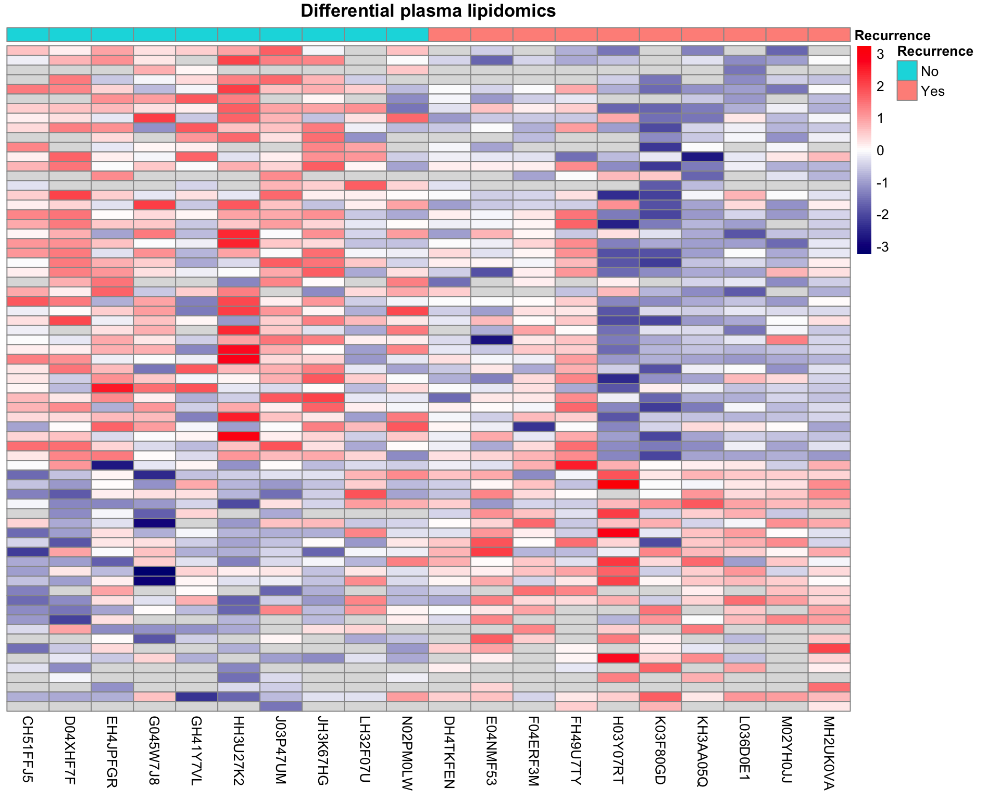

Single-omics analysis: Method development lung cancer patient cohort
Qian-Wu Liao
Last updated: 2023-07-14
Checks: 6 1
Knit directory:
SMART-CARE_LungCancer_MethodDev/
This reproducible R Markdown analysis was created with workflowr (version 1.7.0). The Checks tab describes the reproducibility checks that were applied when the results were created. The Past versions tab lists the development history.
Great! Since the R Markdown file has been committed to the Git repository, you know the exact version of the code that produced these results.
Great job! The global environment was empty. Objects defined in the global environment can affect the analysis in your R Markdown file in unknown ways. For reproduciblity it’s best to always run the code in an empty environment.
The command set.seed(20230425) was run prior to running
the code in the R Markdown file. Setting a seed ensures that any results
that rely on randomness, e.g. subsampling or permutations, are
reproducible.
Great job! Recording the operating system, R version, and package versions is critical for reproducibility.
Nice! There were no cached chunks for this analysis, so you can be confident that you successfully produced the results during this run.
Using absolute paths to the files within your workflowr project makes it difficult for you and others to run your code on a different machine. Change the absolute path(s) below to the suggested relative path(s) to make your code more reproducible.
| absolute | relative |
|---|---|
| /Users/qianwu/Desktop/SMART-CARE_LungCancer_MethodDev | . |
Great! You are using Git for version control. Tracking code development and connecting the code version to the results is critical for reproducibility.
The results in this page were generated with repository version f8e22ca. See the Past versions tab to see a history of the changes made to the R Markdown and HTML files.
Note that you need to be careful to ensure that all relevant files for
the analysis have been committed to Git prior to generating the results
(you can use wflow_publish or
wflow_git_commit). workflowr only checks the R Markdown
file, but you know if there are other scripts or data files that it
depends on. Below is the status of the Git repository when the results
were generated:
Ignored files:
Ignored: .DS_Store
Ignored: .RData
Ignored: .Rhistory
Ignored: analysis/.DS_Store
Ignored: code/.DS_Store
Ignored: data/.DS_Store
Ignored: output/.DS_Store
Untracked files:
Untracked: analysis/feature_selection.Rmd
Untracked: code/about.Rmd
Untracked: code/data.R
Untracked: code/feature_selection_old.Rmd
Untracked: code/functions.R
Untracked: code/license.Rmd
Untracked: code/mofa_downstream_analysis.Rmd
Untracked: code/mofa_factors_investigation.Rmd
Untracked: code/workflowr_commands.R
Untracked: data/AG_Hell/
Untracked: data/AG_Hopf/
Untracked: data/AG_Klingmuller/
Untracked: data/AG_Krijgsveld/
Untracked: data/MethodDev_LungCancer_Datasets.RData
Untracked: data/mofa/
Untracked: data/patient_metadata.tsv
Untracked: data/rf/
Untracked: data/stats/
Untracked: output/TAC_2023/
Untracked: output/YIG_seminar/
Untracked: output/group_meeting/
Untracked: output/preliminary_analysis_DIA.html
Untracked: output/preliminary_analysis_untargeted.html
Unstaged changes:
Modified: analysis/mofa_varied_omics_combinations.Rmd
Modified: code/misc.R
Note that any generated files, e.g. HTML, png, CSS, etc., are not included in this status report because it is ok for generated content to have uncommitted changes.
These are the previous versions of the repository in which changes were
made to the R Markdown
(analysis/preliminary_analysis_untargeted.Rmd) and HTML
(docs/preliminary_analysis_untargeted.html) files. If
you’ve configured a remote Git repository (see
?wflow_git_remote), click on the hyperlinks in the table
below to view the files as they were in that past version.
| File | Version | Author | Date | Message |
|---|---|---|---|---|
| Rmd | 4d5db4a | LiaoQianWu | 2023-07-14 | Reanalyze filtered untargeted metabolomics and lipidomics with PPCA and additional patient metadata |
| Rmd | 3959bda | LiaoQianWu | 2023-06-07 | Filter out features with massive missingness and run PPCA instead of conventional PCA |
| html | 7d94680 | LiaoQianWu | 2023-05-08 | Build site. |
| Rmd | 80c5e2d | LiaoQianWu | 2023-05-08 | Filter untargeted features (metabolites and lipids) by retention time and rerun all scripts related to untargeted datasets |
| Rmd | 1d99d2e | LiaoQianWu | 2023-05-05 | Filter untargeted features (metabolites and lipids) by retention time and use new processed data to rerun preliminary analysis |
| Rmd | 5c0f19e | LiaoQianWu | 2023-05-03 | Add visualization of missing data in preprocessing_DIA.Rmd and amend typo in preliminary_analysis_untargeted.Rmd |
| html | 60e2be1 | LiaoQianWu | 2023-04-26 | Build site. |
| html | 0bbd8eb | LiaoQianWu | 2023-04-25 | Build site. |
| Rmd | e54886f | LiaoQianWu | 2023-04-25 | Finalize scripts about data preprocessing, preliminary analysis, comparisons between targeted and untargeted |
Description: Conduct univariate (association test)
and multivariate (PCA) analyses on individual datasets, Plasma and
Tissue Untargeted Metabolomics and Lipidomics generated by AG Hopf, to
take an initial look at power of each dataset in terms of predicting
patient cancer recurrences and also potentially to provide evidence for
latter multi-omics analyses. Association test between each feature
(metabolite and lipid level) and cancer recurrence was performed to
capture significant features that can separate recurrence and
non-recurrence patients. PCA was performed to see if there is any
significant PC that can separate recurrence and non-recurrence
patients.
Update: Perform association tests between PCs and some other metadata variables, such as patient genders, diagnosis ages, etc.
Metadata variables
Patient:
Gender -> Male:Female = 13:7
Age -> Diagnosis ages ranging from 56 to 84
Smoking -> Smoker:Ex-smoker:Non-Smoker = 3:14:3
Recurrence -> Cancer recurrences, Yes:No = 1:1
Stage -> Pathological stages, IB:IIA:IIB = 16:1:3
Metastasis -> Derived from stages, whether cancer cells spread to
lymph nodes, Yes:No = 3:17
Sample:
Condition -> Baseline:Follow-up:Recurrence = 2:1:1, Tumor:Normal =
1:1
TimePoint -> Time points that samples were collected at, Baseline:2
years later = 1:1
Load libraries
library('SummarizedExperiment')
library('pcaMethods')
library('proDA')
library('limma')
library('ggrepel')
library('ggfortify')
library('openxlsx')
library('tidyverse')
# Load user-defined functions
source('./code/misc.R')
# Set plot theme
th <- theme_bw(base_size = 15) +
theme(axis.title = element_text(face = 'bold'),
axis.text = element_text(face = 'bold'),
axis.ticks = element_line(linewidth = 0.8),
legend.text = element_text(size = 15))Test associations between patient Cancer Recurrence and other metadata variables to see if there is any variable significantly associated with Recurrence, could be predictor or potential confounder?
# Test associations between metadata variables
# Prepare sample metadata
metaPlasmaVsn <- readRDS('./data/AG_Hopf/metaPlasmaVsn.rds')
metadat <- tibble::as_tibble(colData(metaPlasmaVsn)) %>%
dplyr::select(Patient, Recurrence, Gender, Age, Smoking, Stage) %>%
dplyr::filter(!duplicated(Patient)) #%>%
# dplyr::mutate(
# Metastasis = case_when(
# Stage == 'IIB' ~ 'Yes',
# Stage != 'IIB' ~ 'No'
# ))
recur <- dplyr::select(metadat, Patient, Recurrence)
# Conduct association test
assoRes <- testAsso(metadat, recur, cmn_col = 'Patient') %>%
dplyr::mutate(Var1 = stringr::str_remove(Var1, '\\.x'),
Var2 = stringr::str_remove(Var2, '\\.y')) %>%
dplyr::filter(Var1 != Var2) %>%
# Remove duplicated variable pairs
# dplyr::rowwise() %>%
# dplyr::mutate(varPair = paste(sort(c(Var1, Var2)), collapse = '')) %>%
# dplyr::distinct(varPair, .keep_all = T) %>%
dplyr::select(Var1, Var2, pVal, pValAdj, Test) %>%
as.data.frame()
assoRes Var1 Var2 pVal pValAdj Test
1 Smoking Recurrence 0.1637321 0.4093302 Chi-square
2 Gender Recurrence 0.3484426 0.5807376 Chi-square
3 Stage Recurrence 0.5134171 0.6417714 Chi-square
4 Age Recurrence 0.7173283 0.7173283 T-testPlasma Metabolomics
Based on PCA result obtained by analyzing whole Plasma Metabolomics dataset that includes Baseline and Follow-up samples, we found that PCA mainly captures source of variation in time points, the unwanted variation. Besides, we attempt to identify biomarkers that can predict whether patients WILL suffer from cancer recurrence or not. Therefore, we decided to analyze Baseline and Follow-up samples separately.
# Load normalized data
metaPlasmaVsn <- readRDS('./data/AG_Hopf/metaPlasmaVsn.rds')
# Retrieve feature information for making significant feature table
featInfo <- tibble::as_tibble(rowData(metaPlasmaVsn), rownames = 'Feature')
# Manually modify metadata information (time point, metastasis)
tmp_metadata <- as.data.frame(colData(metaPlasmaVsn)) %>%
dplyr::mutate(
TimePoint = dplyr::case_when(
Condition == 'Baseline' ~ 'Baseline',
Condition != 'Baseline' ~ '2 years later'
),
Metastasis = case_when(
Stage == 'IIB' ~ 'Yes',
Stage != 'IIB' ~ 'No'
))
colData(metaPlasmaVsn)['TimePoint'] <- tmp_metadata$TimePoint
colData(metaPlasmaVsn)['Metastasis'] <- tmp_metadata$Metastasis
# Perform analysis
metaPlasmaRes <- doSOA(metaPlasmaVsn, meta_var = c('Recurrence', 'Gender', 'Age',
'Condition', 'TimePoint', 'Smoking',
'Stage', 'Metastasis'),
do_onlyPCA = T, pca_method = 'ppca')
tPCASigRes <- metaPlasmaRes$tPCASigRes
pcaRes <- metaPlasmaRes$pcaRes
pcTab <- metaPlasmaRes$pcTabDisplay significant associations between learned PCs (Var1) and metadata variable (Var2). Note that each patient has two samples that have same patient annotations, so association test results may have additive effects. Besides, some patient annotations are only meaningful at Baseline time point, such as diagnosis ages, pathological stages, etc.
# Display PCs of interest
tPCASigRes Var1 Var2 pVal pValAdj Stat Test
1 PC1 TimePoint 1.088320e-07 1.741312e-05 6.524816 T-test
2 PC1 Condition 3.874759e-07 3.099807e-05 22.591604 ANOVA
3 PC14 Smoking 2.033096e-03 1.084318e-01 7.362869 ANOVA
4 PC3 Metastasis 7.280983e-03 2.912393e-01 2.836132 T-test
5 PC5 Gender 1.554696e-02 4.329594e-01 -2.533300 T-test
6 PC16 Gender 1.623598e-02 4.329594e-01 2.515433 T-test
7 PC3 Stage 2.561872e-02 5.855706e-01 4.052550 ANOVA
8 PC14 Metastasis 3.227825e-02 6.455651e-01 -2.222474 T-testPC1 explains most variation in data and separates patient samples by time points.
ggplot(pcTab, aes(x=TimePoint, y=PC1, col=TimePoint)) +
geom_boxplot(outlier.shape = NA) +
geom_jitter(position = position_jitter(0.2), size = 2, show.legend = F) +
ggpubr::stat_compare_means(method = 't.test', paired = F,
method.args = list(var.equal = T),
show.legend = F, size = 5) +
labs(x = '', color = 'Time Point') +
th
Display variance explained by each PC
# Display proportion of total variance captured by all PCs explained by each PC
varExplained <- pcaRes@sDev^2 / sum(pcaRes@sDev^2)
PC <- paste0('PC', seq(length(varExplained)))
varTab <- data.frame(PC = factor(PC, levels = PC),
Var_explained = varExplained)
ggplot(varTab, aes(x=PC, y=Var_explained*100)) +
geom_col() +
labs(x = '', y = 'Variance explained (%)') +
th + theme(axis.text.x = element_text(angle = 90, hjust = 1, vjust = 0.5))
Baseline samples
Display significant associations between learned PCs (Var1) and metadata variables (Var2)
# Subset baseline samples
smpBaseIdx <- which(colData(metaPlasmaVsn)$Condition == 'Baseline')
metaBase <- metaPlasmaVsn[, smpBaseIdx]
# Display significant associations between PCs and metadata variables
metaBaseAssoRes <- doSOA(metaBase, meta_var = c('Recurrence', 'Gender', 'Age',
'Smoking', 'Stage', 'Metastasis'),
do_onlyPCA = T, pca_method = 'ppca', num_PCs = 17)
metaBaseAssoRes$tPCASigRes Var1 Var2 pVal pValAdj Stat Test
1 PC3 Stage 8.867909e-07 9.045268e-05 35.296556 ANOVA
2 PC16 Smoking 1.601618e-02 5.004303e-01 5.324431 ANOVA
3 PC14 Recurrence 2.051878e-02 5.004303e-01 -2.540126 T-test
4 PC7 Gender 2.131347e-02 5.004303e-01 2.521912 T-test
5 PC7 Smoking 2.453090e-02 5.004303e-01 4.648143 ANOVA
6 PC12 Smoking 4.523334e-02 7.090813e-01 3.734895 ANOVADisplay significant associations between features (Var1) and cancer recurrence (Var2) and observe molecular signatures in input data through heatmap. Note that features in heatmap are ordered by their t-statistics.
# Perform analysis
metaBaseRes <- doSOA(metaBase, meta_var = 'Recurrence', pca_method = 'ppca',
num_PCs = 17, num_PCfeats = 30)
datMat <- metaBaseRes$data
smpAnno <- metaBaseRes$smpMetadata
tFeatSigRes <- metaBaseRes$tFeatSigRes
tPCASigRes <- metaBaseRes$tPCASigRes
pcaRes <- metaBaseRes$pcaRes
pcTab <- metaBaseRes$pcTab
pcTopFeatTab <- metaBaseRes$pcTopFeatTab
# Display features that can significantly separate recurrence and non-recurrence
# patients
sigFeatTab <- dplyr::mutate(tFeatSigRes, m.z_RT = plyr::mapvalues(Var1,
from = featInfo$Feature,
to = featInfo$m.z_RT,
warn_missing = F))
sigFeatTab Var1 Var2 pVal pValAdj Stat Test m.z_RT
1 Feature172 Recurrence 0.0009795262 0.4499250 -3.930930 T-test 609.0866/6.18
2 Feature599 Recurrence 0.0013256562 0.4499250 -3.795145 T-test 182.06337/6.18
3 Feature171 Recurrence 0.0017790029 0.4499250 -3.663097 T-test 593.09179/6.18
4 Feature764 Recurrence 0.0018805643 0.4499250 4.182387 T-test 703.57433/8.03
5 Feature635 Recurrence 0.0024946744 0.4502339 -3.807691 T-test 229.07941/7.09
6 Feature600 Recurrence 0.0028227830 0.4502339 -3.455392 T-test 198.05801/6.18
7 Feature2 Recurrence 0.0034944674 0.4777436 3.359026 T-test 352.3388/0.66
8 Feature556 Recurrence 0.0053533927 0.6403996 -3.165481 T-test 235.08384/5.75
9 Feature582 Recurrence 0.0072253222 0.7682926 -3.028363 T-test 198.05806/6.18
10 Feature416 Recurrence 0.0083360145 0.7908685 -2.962586 T-test 323.04905/3.68
11 Feature933 Recurrence 0.0090904424 0.7908685 2.922593 T-test 445.36728/8.44
12 Feature414 Recurrence 0.0100359303 0.8003654 -2.876777 T-test 301.06701/3.67
13 Feature220 Recurrence 0.0130082938 0.8185212 2.755872 T-test 498.39944/8.09
14 Feature746 Recurrence 0.0146534926 0.8185212 -2.699941 T-test 701.55886/7.91
15 Feature621 Recurrence 0.0158408142 0.8185212 2.663190 T-test 544.3386/6.95
16 Feature143 Recurrence 0.0173485063 0.8185212 2.620132 T-test 520.07519/5.65
17 Feature286 Recurrence 0.0174988923 0.8185212 -2.616035 T-test 514.87484/0.8
18 Feature188 Recurrence 0.0182609127 0.8185212 2.595773 T-test 387.27074/7.19
19 Feature17 Recurrence 0.0184226347 0.8185212 2.606707 T-test 294.00315/0.92
20 Feature700 Recurrence 0.0192089046 0.8185212 2.571656 T-test 489.3394/7.64
21 Feature934 Recurrence 0.0215104294 0.8185212 2.517497 T-test 432.31045/8.44
22 Feature101 Recurrence 0.0221764231 0.8185212 2.502846 T-test 563.0834/4.29
23 Feature792 Recurrence 0.0251914104 0.8185212 2.441310 T-test 410.34683/8.12
24 Feature230 Recurrence 0.0269121960 0.8185212 2.551727 T-test 261.13087/8.16
25 Feature750 Recurrence 0.0274123538 0.8185212 2.412705 T-test 352.33882/7.94
26 Feature620 Recurrence 0.0283026744 0.8185212 -2.754915 T-test 137.10721/6.82
27 Feature670 Recurrence 0.0287775630 0.8185212 -2.376541 T-test 365.13527/7.47
28 Feature124 Recurrence 0.0290480205 0.8185212 -2.371968 T-test 265.09994/4.79
29 Feature159 Recurrence 0.0327105151 0.8185212 2.313656 T-test 511.10385/5.76
30 Feature217 Recurrence 0.0330826657 0.8185212 2.308076 T-test 547.38137/8.07
31 Feature318 Recurrence 0.0334681202 0.8185212 -2.302356 T-test 794.8109/0.8
32 Feature218 Recurrence 0.0339331057 0.8185212 2.295538 T-test 542.42597/8.07
33 Feature512 Recurrence 0.0361472370 0.8185212 -2.264212 T-test 188.068/5.51
34 Feature299 Recurrence 0.0369225343 0.8185212 -2.253662 T-test 770.85031/0.79
35 Feature895 Recurrence 0.0369450262 0.8185212 2.253359 T-test 313.27355/8.39
36 Feature565 Recurrence 0.0371371343 0.8185212 2.250778 T-test 519.07254/5.82
37 Feature813 Recurrence 0.0381142807 0.8185212 -2.355518 T-test 221.11055/8.15
38 Feature345 Recurrence 0.0396004755 0.8185212 -2.218727 T-test 235.09213/1.26
39 Feature791 Recurrence 0.0397531929 0.8185212 2.216802 T-test 415.30245/8.13
40 Feature33 Recurrence 0.0402376259 0.8185212 -2.210737 T-test 309.09255/1.35
41 Feature638 Recurrence 0.0408997089 0.8185212 -2.212570 T-test 229.07914/7.19
42 Feature669 Recurrence 0.0412844272 0.8185212 -2.197858 T-test 365.13554/7.45
43 Feature702 Recurrence 0.0415009206 0.8185212 2.195232 T-test 445.31292/7.66
44 Feature917 Recurrence 0.0421086583 0.8185212 2.208950 T-test 124.08715/8.45
45 Feature89 Recurrence 0.0424671602 0.8185212 -2.183662 T-test 208.00944/3.67
46 Feature511 Recurrence 0.0449044012 0.8185212 -2.155517 T-test 577.18763/5.48
47 Feature221 Recurrence 0.0461810411 0.8185212 2.161242 T-test 353.34143/8.1
48 Feature370 Recurrence 0.0468504451 0.8185212 -2.134031 T-test 262.88792/1.45
49 Feature457 Recurrence 0.0472194451 0.8185212 2.130049 T-test 567.11437/5.12
50 Feature701 Recurrence 0.0486899506 0.8185212 2.114456 T-test 401.28682/7.68
51 Feature712 Recurrence 0.0487391222 0.8185212 -2.158497 T-test 701.55848/7.72# Plot molecular signatures in input data
# Order features according to t-statistics
featOrder <- dplyr::arrange(tFeatSigRes, dplyr::desc(Stat))$Var1
# Arrange samples to make same groups in same clusters
smpOrder <- c(which(smpAnno$Recurrence == 'No'),
which(smpAnno$Recurrence == 'Yes'))
# Prepare recurrence table for annotating samples in heatmap
smpRecur <- dplyr::select(smpAnno, Sample, Recurrence) %>%
tibble::column_to_rownames('Sample')
pheatmap::pheatmap(datMat[featOrder, smpOrder],
annotation_col = smpRecur,
color = colorRampPalette(c('navy', 'white', 'red'))(100),
cluster_rows = F, cluster_cols = F, show_rownames = F,
scale = 'row', #row scaling is across columns
main = 'Baseline plasma metabolomics')
Owing to missing values, there might be a situation that only few observations in sample groups, resulting in unreliable t-statistics. (check e.g., Tumor Tissue Metabolomics) We used probabilistic dropout model to account for missing values and identify differentially abundant entities that are significantly associated with cancer recurrence. Note that features in heatmap are ordered by their t-statistics.
# Fit linear probabilistic dropout model to normalized data
fit <- proDA::proDA(datMat, design = ~ smpAnno$Recurrence)
# fit
# Check coefficient names for Parameter 'contrast' in proDA::test_diff()
# proDA::result_names(fit)
# Identify significant differentially abundant entities
all_proDAMetaBaseRes <- proDA::test_diff(fit,
contrast = Intercept + `smpAnno$RecurrenceYes` - Intercept,
sort_by = 'pval')
proDAMetaBaseRes <- dplyr::select(all_proDAMetaBaseRes,
-c(diff, se, df, avg_abundance, n_approx)) %>%
dplyr::filter(pval < 0.05) %>%
dplyr::mutate(MZ_RT = plyr::mapvalues(name,
from = featInfo$Feature,
to = featInfo$m.z_RT,
warn_missing = F))
proDAMetaBaseRes name pval adj_pval t_statistic n_obs MZ_RT
1 Feature599 0.001376869 0.5159371 3.778135 20 182.06337/6.18
2 Feature172 0.001572539 0.5159371 3.718492 20 609.0866/6.18
3 Feature171 0.001808741 0.5159371 3.655650 20 593.09179/6.18
4 Feature764 0.002326183 0.5159371 -3.542541 12 703.57433/8.03
5 Feature600 0.002695596 0.5159371 3.476173 20 198.05801/6.18
6 Feature2 0.004017391 0.6407739 -3.295912 20 352.3388/0.66
7 Feature556 0.005466207 0.7473085 3.155977 20 235.08384/5.75
8 Feature582 0.007765814 0.9289855 2.995213 20 198.05806/6.18
9 Feature635 0.008839406 0.9319082 2.935532 14 229.07941/7.09
10 Feature933 0.010337479 0.9319082 -2.863039 20 445.36728/8.44
11 Feature416 0.010711589 0.9319082 2.846522 20 323.04905/3.68
12 Feature414 0.013018583 0.9587924 2.755502 20 301.06701/3.67
13 Feature220 0.013402327 0.9587924 -2.741884 20 498.39944/8.09
14 Feature143 0.016969151 0.9587924 -2.630621 20 520.07519/5.65
15 Feature746 0.017025716 0.9587924 2.629043 20 701.55886/7.91
16 Feature621 0.018336346 0.9587924 -2.593811 20 544.3386/6.95
17 Feature188 0.020062596 0.9587924 -2.550885 20 387.27074/7.19
18 Feature934 0.020805341 0.9587924 -2.533483 20 432.31045/8.44
19 Feature101 0.023876132 0.9587924 -2.467253 20 563.0834/4.29
20 Feature17 0.024868032 0.9587924 -2.447569 19 294.00315/0.92
21 Feature792 0.024907265 0.9587924 -2.446805 20 410.34683/8.12
22 Feature670 0.028100500 0.9587924 2.388169 20 365.13527/7.47
23 Feature700 0.033406508 0.9587924 -2.303267 20 489.3394/7.64
24 Feature124 0.033414530 0.9587924 2.303148 20 265.09994/4.79
25 Feature218 0.033954468 0.9587924 -2.295227 20 542.42597/8.07
26 Feature895 0.036468074 0.9587924 -2.259821 20 313.27355/8.39
27 Feature217 0.037114404 0.9587924 -2.251082 20 547.38137/8.07
28 Feature565 0.037175704 0.9587924 -2.250261 20 519.07254/5.82
29 Feature159 0.037199651 0.9587924 -2.249940 20 511.10385/5.76
30 Feature512 0.038306023 0.9587924 2.235333 20 188.068/5.51
31 Feature345 0.039189236 0.9587924 2.223948 20 235.09213/1.26
32 Feature813 0.040605696 0.9587924 2.206174 13 221.11055/8.15
33 Feature750 0.040975088 0.9587924 -2.201632 19 352.33882/7.94
34 Feature917 0.043290992 0.9587924 -2.173987 18 124.08715/8.45
35 Feature857 0.043938332 0.9587924 -2.166502 14 197.10716/8.26
36 Feature318 0.044258296 0.9587924 2.162840 20 794.8109/0.8
37 Feature33 0.044327274 0.9587924 2.162053 20 309.09255/1.35
38 Feature712 0.045163615 0.9587924 2.152607 16 701.55848/7.72
39 Feature791 0.046240597 0.9587924 -2.140675 20 415.30245/8.13
40 Feature669 0.047616852 0.9587924 2.125792 20 365.13554/7.45
41 Feature457 0.048817576 0.9587924 -2.113123 20 567.11437/5.12
42 Feature89 0.049900796 0.9587924 2.101936 20 208.00944/3.67# Plot molecular signatures in input data
# Order features according to t-statistics
featOrder <- dplyr::arrange(proDAMetaBaseRes, dplyr::desc(t_statistic))$name
pheatmap::pheatmap(datMat[featOrder, smpOrder],
annotation_col = smpRecur,
color = colorRampPalette(c('navy', 'white', 'red'))(100),
cluster_rows = F, cluster_cols = F, show_rownames = F,
scale = 'row', main = 'Baseline plasma metabolomics (proDA)')
# Store table in list for creating Excel file
sigFeatSheet <- list(BasePlasmaMetab_Feats = proDAMetaBaseRes)ovl <- intersect(metaBaseRes$tFeatSigRes$Var1, proDAMetaBaseRes$name)
cat('The following features', paste0('(n =', length(ovl), ')'),
'are tested significant by both methods:\n', ovl)The following features (n =41) are tested significant by both methods:
Feature172 Feature599 Feature171 Feature764 Feature635 Feature600 Feature2 Feature556 Feature582 Feature416 Feature933 Feature414 Feature220 Feature746 Feature621 Feature143 Feature188 Feature17 Feature700 Feature934 Feature101 Feature792 Feature750 Feature670 Feature124 Feature159 Feature217 Feature318 Feature218 Feature512 Feature895 Feature565 Feature813 Feature345 Feature791 Feature33 Feature669 Feature917 Feature89 Feature457 Feature712-> Most of Recurrence-related features captured by proDA are
covered in regular significance test.
Visualize data of top 6 significant features based on proDA result
# Visualize data of top 6 significant features
topSigFeats <- proDAMetaBaseRes$name[1:6]
topSigFeatData <- tibble::as_tibble(datMat[topSigFeats,], rownames = 'Feature') %>%
tidyr::pivot_longer(cols = -'Feature',
names_to = 'Sample', values_to = 'Abundance') %>%
dplyr::mutate(Feature = factor(Feature, levels = topSigFeats)) %>%
dplyr::left_join(smpAnno, by = 'Sample')
ggplot(topSigFeatData, aes(x=Recurrence, y=Abundance, col=Recurrence, fill=Recurrence)) +
geom_boxplot(alpha = 0.3, outlier.shape = NA) +
geom_jitter(position = position_jitter(0.2), size = 2, show.legend = F) +
scale_color_manual(values=c('#00BFC4', '#F8766D')) +
scale_fill_manual(values=c('#00BFC4', '#F8766D')) +
facet_wrap(vars(Feature), scales = 'free_y') +
th + theme(strip.text = element_text(size = 13, face = 'bold'))
# theme(strip.text = element_text(size = 14),
# axis.title = element_text(size = 17), axis.text = element_text(size = 12),
# legend.title = element_text(size = 15), legend.text = element_text(size = 15),
# panel.grid.major.x = element_blank())
# ggsave('./output/AG_Hopf/boxplot_proDA_topSigFeats_BPM.png', device = 'png',
# dpi = 400, height = 8, width = 10)Display significant associations between PCs (Var1) and cancer recurrence (Var2)
# Display PCs that can significantly separate recurrence and non-recurrence patients
tPCASigRes Var1 Var2 pVal pValAdj Stat Test
1 PC14 Recurrence 0.02051878 0.3488192 -2.540126 T-test# Display proportion of total variance captured by all PCs explained by each PC
varExplained <- pcaRes@sDev^2 / sum(pcaRes@sDev^2)
PC <- paste0('PC', seq(length(varExplained)))
varTab <- data.frame(PC = factor(PC, levels = PC),
Var_explained = varExplained)
ggplot(varTab, aes(x=PC, y=Var_explained*100)) +
geom_col() +
labs(x = '', y = 'Variance explained (%)', title = 'Baseline plasma metabolomics') +
th + theme(axis.text.x = element_text(angle = 90, hjust = 1, vjust = 0.5))
PC14 potentially separates recurrence and non-recurrence patients.
# Visualize PCs
ggplot(pcTab, aes(x=Recurrence, y=PC14, col=Recurrence, fill=Recurrence)) +
geom_boxplot(alpha = 0.5, outlier.shape = NA) +
geom_jitter(position = position_jitter(0.2), size = 2, show.legend = F) +
labs(title = 'Baseline plasma metabolomics') +
scale_color_manual(values=c('#00BFC4', '#F8766D')) +
scale_fill_manual(values=c('#00BFC4', '#F8766D')) +
ggpubr::stat_compare_means(method = 't.test', paired = F,
method.args = list(var.equal = T),
show.legend = F, size = 5) +
th
Plot molecular signatures captured by PC14 in input data. We took a look at top 20 features with highest loadings and observed metabolite levels of these top features through heatmap. Note that features in heatmap are ordered by their loadings. There is no single feature that can decently hint if patients will suffer cancer recurrence or not, which means each of these top features contributes a bit to explaining variation between recurrence and non-recurrence patients.
# Plot molecular signatures in input data
# Extract top features with highest loadings
topFeats <- pcTopFeatTab$PC14$Feature[1:20]
# Order features by loadings
topFeatsIdx <- sapply(topFeats, function(feat) {which(rownames(datMat) == feat)})
pheatmap::pheatmap(datMat[topFeatsIdx, smpOrder],
annotation_col = smpRecur,
color = colorRampPalette(c('navy', 'white', 'red'))(100),
cluster_rows = F, cluster_cols = F,
scale = 'row', main = 'Baseline plasma metabolomics - PC14')
Display top features that build the PC14
# Display top features with highest loadings of PC of interest
pcTopFeats <- dplyr::left_join(pcTopFeatTab$PC14, featInfo, by = 'Feature')
pcTopFeats Feature Loading m.z_RT
1 Feature91 0.15725799 382.06973/3.77
2 Feature33 0.14521032 309.09255/1.35
3 Feature178 0.14181018 423.19858/6.44
4 Feature185 0.14113290 220.16934/7.05
5 Feature187 0.13979231 623.30251/7.19
6 Feature910 0.12985829 663.58098/8.43
7 Feature212 0.12966265 704.57751/8.03
8 Feature25 0.12768940 317.05587/1.28
9 Feature86 0.11354633 358.20068/3.6
10 Feature373 0.11193210 352.33899/2.12
11 Feature946 0.11184399 370.35482/8.45
12 Feature367 0.10911283 315.07881/1.38
13 Feature258 0.10669866 494.32905/8.37
14 Feature922 0.10429571 168.13829/8.44
15 Feature926 0.10341613 369.35128/8.45
16 Feature262 0.10106581 479.46354/8.42
17 Feature901 0.09899578 341.30449/8.36
18 Feature912 0.09483403 332.29506/8.43
19 Feature625 0.09101805 320.25574/6.97
20 Feature915 0.09026020 123.09186/8.43
21 Feature712 0.08972514 701.55848/7.72
22 Feature878 0.08847599 369.3509/8.29
23 Feature119 0.08810711 267.07945/4.61
24 Feature597 0.08801613 279.0093/6.18
25 Feature746 0.08767853 701.55886/7.91
26 Feature345 0.08700952 235.09213/1.26
27 Feature338 0.08597617 247.09253/1.01
28 Feature366 0.08575065 638.0994/1.33
29 Feature908 0.08484845 217.10418/8.44
30 Feature637 0.08456712 320.25576/7.15# Store table in list for creating Excel file
sigFeatSheet <- append(sigFeatSheet, list(BasePlasmaMetab_PC14 = pcTopFeats))Follow-up samples
Display significant associations between learned PCs (Var1) and metadata variables (Var2)
# Subset follow-up samples
smpFoloIdx <- which(colData(metaPlasmaVsn)$Condition != 'Baseline')
metaFolo <- metaPlasmaVsn[, smpFoloIdx]
# Display significant associations between PCs and metadata variables
metaFoloAssoRes <- doSOA(metaFolo, meta_var = c('Recurrence', 'Gender'),
do_onlyPCA = T, pca_method = 'ppca', num_PCs = 17)
metaFoloAssoRes$tPCASigRes Var1 Var2 pVal pValAdj Stat Test
1 PC13 Recurrence 0.02012436 0.6842282 -2.549415 T-testDisplay significant associations between features (Var1) and cancer recurrence (Var2) and observe molecular signatures in input data through heatmap. Note that features in heatmap are ordered by their t-statistics.
# Perform analysis
metaFoloRes <- doSOA(metaFolo, meta_var = 'Recurrence', pca_method = 'ppca',
num_PCs = 17, num_PCfeats = 30)
datMat <- metaFoloRes$data
smpAnno <- metaFoloRes$smpMetadata
tFeatSigRes <- metaFoloRes$tFeatSigRes
tPCASigRes <- metaFoloRes$tPCASigRes
pcaRes <- metaFoloRes$pcaRes
pcTab <- metaFoloRes$pcTab
pcTopFeatTab <- metaFoloRes$pcTopFeatTab
# Display features that can significantly separate recurrence and non-recurrence
# patients
sigFeatTab <- dplyr::mutate(tFeatSigRes, m.z_RT = plyr::mapvalues(Var1,
from = featInfo$Feature,
to = featInfo$m.z_RT,
warn_missing = F))
sigFeatTab Var1 Var2 pVal pValAdj Stat Test m.z_RT
1 Feature917 Recurrence 0.002509584 0.6731932 -3.508381 T-test 124.08715/8.45
2 Feature900 Recurrence 0.002881864 0.6731932 -3.446052 T-test 466.29777/8.4
3 Feature961 Recurrence 0.002950525 0.6731932 -3.435432 T-test 210.08713/8.46
4 Feature902 Recurrence 0.004421880 0.6731932 -3.252409 T-test 313.27329/8.39
5 Feature575 Recurrence 0.006931092 0.6731932 -3.202728 T-test 229.07944/6.04
6 Feature189 Recurrence 0.006965741 0.6731932 -3.045150 T-test 200.20072/7.22
7 Feature911 Recurrence 0.009503067 0.6731932 -2.902058 T-test 221.1105/8.45
8 Feature78 Recurrence 0.013180015 0.6731932 2.749727 T-test 261.03582/3.55
9 Feature524 Recurrence 0.014410561 0.6731932 2.707810 T-test 431.15645/5.56
10 Feature352 Recurrence 0.016002279 0.6731932 -2.658396 T-test 346.00917/1.29
11 Feature642 Recurrence 0.017574159 0.6731932 -2.718170 T-test 810.59915/7.23
12 Feature818 Recurrence 0.018135488 0.6731932 -2.599052 T-test 168.07665/8.16
13 Feature268 Recurrence 0.018901780 0.6731932 -2.594293 T-test 219.09487/8.46
14 Feature519 Recurrence 0.020958798 0.6731932 2.529961 T-test 453.13787/5.56
15 Feature180 Recurrence 0.021467651 0.6731932 2.518453 T-test 241.17313/6.66
16 Feature829 Recurrence 0.021689521 0.6731932 -2.513516 T-test 207.12361/8.17
17 Feature554 Recurrence 0.022047612 0.6731932 -2.505647 T-test 128.05286/5.73
18 Feature356 Recurrence 0.022299205 0.6731932 -2.513998 T-test 367.99125/1.31
19 Feature869 Recurrence 0.025384461 0.6731932 -2.584531 T-test 151.123/8.3
20 Feature877 Recurrence 0.026528054 0.6731932 -2.478846 T-test 429.37212/8.27
21 Feature965 Recurrence 0.028338823 0.6731932 -2.384046 T-test 168.07669/8.46
22 Feature33 Recurrence 0.028745756 0.6731932 -2.377082 T-test 309.09255/1.35
23 Feature527 Recurrence 0.029586513 0.6731932 -2.362979 T-test 760.58319/5.61
24 Feature890 Recurrence 0.030050617 0.6731932 -2.434947 T-test 369.35262/8.34
25 Feature270 Recurrence 0.030134293 0.6731932 -2.379296 T-test 279.09334/8.47
26 Feature395 Recurrence 0.030649306 0.6731932 2.345677 T-test 267.07925/3.44
27 Feature802 Recurrence 0.031184732 0.6731932 -2.415195 T-test 365.13559/8.13
28 Feature635 Recurrence 0.031209391 0.6731932 -2.394271 T-test 229.07941/7.09
29 Feature536 Recurrence 0.031754071 0.6731932 -2.328274 T-test 253.05713/5.64
30 Feature751 Recurrence 0.033642055 0.6731932 -2.426089 T-test 166.09773/7.95
31 Feature556 Recurrence 0.034322691 0.6731932 -2.289891 T-test 235.08384/5.75
32 Feature814 Recurrence 0.034700412 0.6731932 -2.284473 T-test 165.11334/8.15
33 Feature819 Recurrence 0.034713373 0.6731932 -2.295267 T-test 168.07674/8.18
34 Feature664 Recurrence 0.035942990 0.6731932 -2.277797 T-test 226.21643/7.48
35 Feature712 Recurrence 0.036390999 0.6731932 -2.332532 T-test 701.55848/7.72
36 Feature49 Recurrence 0.039706137 0.6731932 2.217394 T-test 181.07178/2.81
37 Feature473 Recurrence 0.040539899 0.6731932 2.206987 T-test 310.06741/5.23
38 Feature675 Recurrence 0.040598036 0.6731932 -2.240810 T-test 786.59924/7.54
39 Feature472 Recurrence 0.040843308 0.6731932 2.203248 T-test 403.12533/5.23
40 Feature601 Recurrence 0.041365158 0.6731932 -2.196877 T-test 333.16691/6.25
41 Feature598 Recurrence 0.042319103 0.6731932 -2.185419 T-test 229.07916/6.18
42 Feature883 Recurrence 0.042452253 0.6731932 -2.269814 T-test 165.11347/8.3
43 Feature972 Recurrence 0.043286591 0.6731932 2.259030 T-test 782.56886/8.49
44 Feature853 Recurrence 0.043376921 0.6731932 -2.172987 T-test 313.27324/8.23
45 Feature203 Recurrence 0.044046947 0.6731932 -2.165256 T-test 675.54304/7.79
46 Feature540 Recurrence 0.044287930 0.6731932 -2.162502 T-test 261.10959/5.64
47 Feature875 Recurrence 0.044716886 0.6731932 -2.204554 T-test 166.09733/8.3
48 Feature942 Recurrence 0.044814954 0.6731932 2.156525 T-test 465.44783/8.45
49 Feature908 Recurrence 0.045169999 0.6731932 -2.172713 T-test 217.10418/8.44
50 Feature54 Recurrence 0.045966634 0.6731932 2.143686 T-test 212.04855/3.03
51 Feature862 Recurrence 0.047144911 0.6731932 -2.192468 T-test 124.087/8.29
52 Feature286 Recurrence 0.048053329 0.6731932 -2.121153 T-test 514.87484/0.8
53 Feature136 Recurrence 0.048637084 0.6731932 2.115009 T-test 855.25502/5.38# Plot molecular signatures in input data
# Order features according to t-statistics
featOrder <- dplyr::arrange(tFeatSigRes, dplyr::desc(Stat))$Var1
# Arrange samples to make same groups in same clusters
smpOrder <- c(which(smpAnno$Recurrence == 'No'),
which(smpAnno$Recurrence == 'Yes'))
# Prepare recurrence table for annotating samples in heatmap
smpRecur <- dplyr::select(smpAnno, Sample, Recurrence) %>%
tibble::column_to_rownames('Sample')
pheatmap::pheatmap(datMat[featOrder, smpOrder],
annotation_col = smpRecur,
color = colorRampPalette(c('navy', 'white', 'red'))(100),
cluster_rows = F, cluster_cols = F, show_rownames = F,
scale = 'row', main = 'Follow-up plasma metabolomics')
Use probabilistic dropout model to account for missing values and identify differentially abundant entities that are significantly associated with cancer recurrence. Note that features in heatmap are ordered by their t-statistics.
# Fit linear probabilistic dropout model to normalized data
fit <- proDA::proDA(datMat, design = ~ smpAnno$Recurrence)
# fit
# Check coefficient names for Parameter 'contrast' in proDA::test_diff()
# proDA::result_names(fit)
# Identify significant differentially abundant entities
all_proDAMetaFoloRes <- proDA::test_diff(fit,
contrast = Intercept + `smpAnno$RecurrenceYes` - Intercept,
sort_by = 'pval')
proDAMetaFoloRes <- dplyr::select(all_proDAMetaFoloRes,
-c(diff, se, df, avg_abundance, n_approx)) %>%
dplyr::filter(pval < 0.05) %>%
dplyr::mutate(MZ_RT = plyr::mapvalues(name,
from = featInfo$Feature,
to = featInfo$m.z_RT,
warn_missing = F))
proDAMetaFoloRes name pval adj_pval t_statistic n_obs MZ_RT
1 Feature917 0.002820476 0.7545355 3.455761 20 124.08715/8.45
2 Feature900 0.003119012 0.7545355 3.410374 20 466.29777/8.4
3 Feature961 0.003936567 0.7545355 3.305119 20 210.08713/8.46
4 Feature902 0.004917623 0.7545355 3.204131 20 313.27329/8.39
5 Feature575 0.011952702 0.7545355 2.795449 15 229.07944/6.04
6 Feature189 0.012359771 0.7545355 2.779804 20 200.20072/7.22
7 Feature78 0.013173960 0.7545355 -2.749942 20 261.03582/3.55
8 Feature911 0.013756760 0.7545355 2.729635 20 221.1105/8.45
9 Feature524 0.019474128 0.7545355 -2.565111 20 431.15645/5.56
10 Feature268 0.022625077 0.7545355 2.493208 19 219.09487/8.46
11 Feature818 0.022760760 0.7545355 2.490329 20 168.07665/8.16
12 Feature802 0.024245691 0.7545355 2.459831 15 365.13559/8.13
13 Feature519 0.024320311 0.7545355 -2.458345 20 453.13787/5.56
14 Feature356 0.024428526 0.7545355 2.456198 19 367.99125/1.31
15 Feature890 0.024912580 0.7545355 2.446702 15 369.35262/8.34
16 Feature642 0.027706413 0.7545355 2.395058 15 810.59915/7.23
17 Feature352 0.030151924 0.7545355 2.353704 20 346.00917/1.29
18 Feature869 0.030667006 0.7545355 2.345394 13 151.123/8.3
19 Feature395 0.030799820 0.7545355 -2.343272 20 267.07925/3.44
20 Feature180 0.031159416 0.7545355 -2.337570 20 241.17313/6.66
21 Feature965 0.034395508 0.7545355 2.288843 20 168.07669/8.46
22 Feature270 0.035716576 0.7545355 2.270164 18 279.09334/8.47
23 Feature635 0.038112271 0.7545355 2.237862 16 229.07941/7.09
24 Feature556 0.039960915 0.7545355 2.214193 20 235.08384/5.75
25 Feature883 0.041829295 0.7545355 2.191272 14 165.11347/8.3
26 Feature814 0.042206559 0.7545355 2.186759 20 165.11334/8.15
27 Feature49 0.043769929 0.7545355 -2.168439 20 181.07178/2.81
28 Feature472 0.043986080 0.7545355 -2.165954 20 403.12533/5.23
29 Feature536 0.044275060 0.7545355 2.162648 20 253.05713/5.64
30 Feature712 0.044679047 0.7545355 2.158060 15 701.55848/7.72
31 Feature33 0.045215661 0.7545355 2.152024 20 309.09255/1.35
32 Feature473 0.045246670 0.7545355 -2.151677 20 310.06741/5.23
33 Feature54 0.045360550 0.7545355 -2.150406 20 212.04855/3.03
34 Feature853 0.045425872 0.7545355 2.149677 20 313.27324/8.23
35 Feature972 0.045707826 0.7545355 -2.146545 14 782.56886/8.49
36 Feature527 0.046004693 0.7545355 2.143267 20 760.58319/5.61
37 Feature664 0.046651766 0.7545355 2.136187 19 226.21643/7.48
38 Feature751 0.047025477 0.7545355 2.132138 13 166.09773/7.95
39 Feature829 0.047639000 0.7545355 2.125555 20 207.12361/8.17
40 Feature136 0.048630779 0.7545355 -2.115075 20 855.25502/5.38
41 Feature717 0.049189626 0.7545355 -2.109255 18 343.2853/7.72
42 Feature598 0.049431511 0.7545355 2.106755 20 229.07916/6.18# Plot molecular signatures in input data
# Order features according to t-statistics
featOrder <- dplyr::arrange(proDAMetaFoloRes, dplyr::desc(t_statistic))$name
pheatmap::pheatmap(datMat[featOrder, smpOrder],
annotation_col = smpRecur,
color = colorRampPalette(c('navy', 'white', 'red'))(100),
cluster_rows = F, cluster_cols = F, show_rownames = F,
scale = 'row', main = 'Follow-up plasma metabolomics (proDA)')
# Store table in list for creating Excel file
sigFeatSheet <- append(sigFeatSheet, list(FolloPlasmaMetab_Feats = proDAMetaFoloRes))ovl <- intersect(metaFoloRes$tFeatSigRes$Var1, proDAMetaFoloRes$name)
cat('The following features', paste0('(n =', length(ovl), ')'),
'are tested significant by both methods:\n', ovl)The following features (n =41) are tested significant by both methods:
Feature917 Feature900 Feature961 Feature902 Feature575 Feature189 Feature911 Feature78 Feature524 Feature352 Feature642 Feature818 Feature268 Feature519 Feature180 Feature829 Feature356 Feature869 Feature965 Feature33 Feature527 Feature890 Feature270 Feature395 Feature802 Feature635 Feature536 Feature751 Feature556 Feature814 Feature664 Feature712 Feature49 Feature473 Feature472 Feature598 Feature883 Feature972 Feature853 Feature54 Feature136Visualize data of top 6 significant features based on proDA result
# Visualize data of top 6 significant features
topSigFeats <- proDAMetaFoloRes$name[1:6]
topSigFeatData <- tibble::as_tibble(datMat[topSigFeats,], rownames = 'Feature') %>%
tidyr::pivot_longer(cols = -'Feature',
names_to = 'Sample', values_to = 'Abundance') %>%
dplyr::mutate(Feature = factor(Feature, levels = topSigFeats)) %>%
dplyr::left_join(smpAnno, by = 'Sample')
ggplot(topSigFeatData, aes(x=Recurrence, y=Abundance, col=Recurrence, fill=Recurrence)) +
geom_boxplot(alpha = 0.5, outlier.shape = NA) +
geom_jitter(position = position_jitter(0.2), size = 2, show.legend = F) +
scale_color_manual(values=c('#00BFC4', '#F8766D')) +
scale_fill_manual(values=c('#00BFC4', '#F8766D')) +
facet_wrap(vars(Feature), scales = 'free') +
ggpubr::stat_compare_means(method = 't.test', paired = F,
method.args = list(var.equal = T),
show.legend = F) +
th + theme(strip.text = element_text(size = 13, face = 'bold'))
Display significant associations between PCs (Var1) and cancer recurrence (Var2)
# Display PCs that can significantly separate recurrence and non-recurrence
# patients
tPCASigRes Var1 Var2 pVal pValAdj Stat Test
1 PC13 Recurrence 0.02012436 0.3421141 -2.549415 T-test# Display proportion of total variance captured by all PCs explained by each PC
varExplained <- pcaRes@sDev^2 / sum(pcaRes@sDev^2)
PC <- paste0('PC', seq(length(varExplained)))
varTab <- data.frame(PC = factor(PC, levels = PC),
Var_explained = varExplained)
ggplot(varTab, aes(x=PC, y=Var_explained*100)) +
geom_col() +
labs(x = '', y = 'Variance explained (%)', title = 'Follow-up plasma metabolomics') +
th + theme(axis.text.x = element_text(angle = 90, hjust = 1, vjust = 0.5))
PC13 potentially separates recurrence and non-recurrence patients.
# Visualize PCs
ggplot(pcTab, aes(x=Recurrence, y=PC13, col=Recurrence, fill=Recurrence)) +
geom_boxplot(alpha = 0.5, outlier.shape = NA) +
geom_jitter(position = position_jitter(0.2), size = 2, show.legend = F) +
labs(title = 'Follow-up plasma metabolomics') +
scale_color_manual(values=c('#00BFC4', '#F8766D')) +
scale_fill_manual(values=c('#00BFC4', '#F8766D')) +
ggpubr::stat_compare_means(method = 't.test', paired = F,
method.args = list(var.equal = T),
show.legend = F, size = 5) +
th
Plot molecular signatures captured by PC13 in input data. We took a look at top 20 features with highest loadings and observed metabolite levels of these top features through heatmap. Note that features in heatmap are ordered by their loadings.
# Plot molecular signatures in input data
# Extract top features with highest loadings
topFeats <- pcTopFeatTab$PC13$Feature[1:20]
# Order features by loadings
topFeatsIdx <- sapply(topFeats, function(feat) {which(rownames(datMat) == feat)})
pheatmap::pheatmap(datMat[topFeatsIdx, smpOrder],
annotation_col = smpRecur,
color = colorRampPalette(c('navy', 'white', 'red'))(100),
cluster_rows = F, cluster_cols = F,
scale = 'row', main = 'Follow-up plasma metabolomics - PC13')
| Version | Author | Date |
|---|---|---|
| 7d94680 | LiaoQianWu | 2023-05-08 |
Display top features that build the PC13
# Display top features with highest loadings of PC of interest
pcTopFeats <- dplyr::left_join(pcTopFeatTab$PC13, featInfo, by = 'Feature')
pcTopFeats Feature Loading m.z_RT
1 Feature479 0.32706420 181.08553/5.31
2 Feature178 0.19198693 423.19858/6.44
3 Feature764 0.18958317 703.57433/8.03
4 Feature890 0.15213595 369.35262/8.34
5 Feature519 0.13414697 453.13787/5.56
6 Feature524 0.12853637 431.15645/5.56
7 Feature722 0.12429324 806.56832/7.76
8 Feature63 0.11025918 195.08752/3.2
9 Feature717 0.10289388 343.2853/7.72
10 Feature65 0.10256760 235.18009/3.28
11 Feature862 0.10244149 124.087/8.29
12 Feature429 0.09936549 234.20605/3.97
13 Feature49 0.09904723 181.07178/2.81
14 Feature745 0.09733144 758.56939/7.93
15 Feature616 0.09724125 758.5675/6.74
16 Feature667 0.09716844 758.56971/7.45
17 Feature93 0.09664267 218.21104/3.87
18 Feature597 0.09444798 279.0093/6.18
19 Feature877 0.09261773 429.37212/8.27
20 Feature922 0.09082339 168.13829/8.44
21 Feature374 0.08940463 352.33895/2.39
22 Feature950 0.08851219 276.23191/8.47
23 Feature822 0.08820712 284.2942/8.16
24 Feature561 0.08788681 741.14289/5.77
25 Feature827 0.08605761 758.56907/8.17
26 Feature114 0.08531667 246.24244/4.49
27 Feature600 0.08460289 198.05801/6.18
28 Feature776 0.08369916 524.36926/8.06
29 Feature712 0.08267351 701.55848/7.72
30 Feature894 0.07902930 663.45272/8.36# Store table in list for creating Excel file
sigFeatSheet <- append(sigFeatSheet, list(FolloPlasmaMetab_PC13 = pcTopFeats))Changes in time course
Differences between Follow-up and Baseline samples (Follow-up matrix
- baseline matrix):
Display significant associations between features (Var1) and cancer recurrence (Var2) and observe molecular signatures in input data through heatmap. Note that features in heatmap are ordered by their t-statistics.
# Subset baseline samples
smpBaseIdx <- which(colData(metaPlasmaVsn)$Condition == 'Baseline')
metaBase <- metaPlasmaVsn[, smpBaseIdx]
# Subset follow-up samples
smpFoloIdx <- which(colData(metaPlasmaVsn)$Condition != 'Baseline')
metaFolo <- metaPlasmaVsn[, smpFoloIdx]
# Modify column names for matching two matrices
colnames(metaBase) <- stringr::str_remove(colnames(metaBase), '_P_B')
colnames(metaFolo) <- stringr::str_remove(colnames(metaFolo), '_P_R')
# Retrieve data matrix
metaBaseMat <- SummarizedExperiment::assay(metaBase)
metaFoloMat <- SummarizedExperiment::assay(metaFolo)
# Subtract follow-up matrix by baseline matrix
if (identical(colnames(metaBaseMat), colnames(metaFoloMat)) &
identical(rownames(metaBaseMat), rownames(metaFoloMat))) {
metaPlasmaDiffMat <- metaFoloMat - metaBaseMat
# Remove features fully missing
allNAsIdx <- which(apply(metaPlasmaDiffMat, 1, function(x) {all(is.na(x))}))
metaPlasmaDiffMat <- metaPlasmaDiffMat[-allNAsIdx,]
} else {
print('Align samples or features first.')
}
# Retrieve samples metadata for creating SE object
colAnno <- dplyr::select(as.data.frame(colData(metaBase)), Patient, Recurrence)
metaPlasmaDiff <- SummarizedExperiment(assays = metaPlasmaDiffMat, colData = colAnno)
# Perform analysis
metaPlasmaDiffRes <- doSOA(metaPlasmaDiff, meta_var = 'Recurrence', pca_method = 'ppca',
num_PCs = 17, num_PCfeats = 30)
datMat <- metaPlasmaDiffRes$data
smpAnno <- metaPlasmaDiffRes$smpMetadata
tFeatSigRes <- metaPlasmaDiffRes$tFeatSigRes
tPCASigRes <- metaPlasmaDiffRes$tPCASigRes
# Display features that can significantly separate recurrence and non-recurrence
# patients
sigFeatTab <- dplyr::mutate(tFeatSigRes, m.z_RT = plyr::mapvalues(Var1,
from = featInfo$Feature,
to = featInfo$m.z_RT,
warn_missing = F)) %>%
dplyr::select(-Test)
sigFeatTab Var1 Var2 pVal pValAdj Stat m.z_RT
1 Feature917 Recurrence 0.0006955433 0.6635483 -4.188134 124.08715/8.45
2 Feature902 Recurrence 0.0042145549 0.8307910 -3.274195 313.27329/8.39
3 Feature895 Recurrence 0.0056810019 0.8307910 -3.138399 313.27355/8.39
4 Feature266 Recurrence 0.0066456808 0.8307910 -3.066707 398.23243/8.45
5 Feature853 Recurrence 0.0081876691 0.8307910 -2.970861 313.27324/8.23
6 Feature800 Recurrence 0.0088547646 0.8307910 -2.934730 137.10733/8.13
7 Feature445 Recurrence 0.0094866408 0.8307910 2.902858 265.06383/4.39
8 Feature900 Recurrence 0.0107345367 0.8307910 -2.845527 466.29777/8.4
9 Feature503 Recurrence 0.0108228172 0.8307910 2.841719 261.10909/5.49
10 Feature877 Recurrence 0.0116850507 0.8307910 -2.898134 429.37212/8.27
11 Feature352 Recurrence 0.0123527804 0.8307910 -2.780068 346.00917/1.29
12 Feature809 Recurrence 0.0125026134 0.8307910 -3.038121 217.10438/8.14
13 Feature847 Recurrence 0.0129964572 0.8307910 2.844251 605.60162/8.2
14 Feature819 Recurrence 0.0152783815 0.8307910 -2.715516 168.07674/8.18
15 Feature937 Recurrence 0.0175739448 0.8307910 -2.790400 164.08184/8.44
16 Feature423 Recurrence 0.0216317470 0.8307910 2.514797 148.06033/3.91
17 Feature554 Recurrence 0.0217239692 0.8307910 -2.512754 128.05286/5.73
18 Feature784 Recurrence 0.0218226909 0.8307910 -2.540397 123.09143/8.11
19 Feature869 Recurrence 0.0218306745 0.8307910 -29.150277 151.123/8.3
20 Feature553 Recurrence 0.0218813337 0.8307910 -2.509286 505.10153/5.72
21 Feature600 Recurrence 0.0227838795 0.8307910 2.489840 198.05801/6.18
22 Feature124 Recurrence 0.0241113753 0.8307910 2.462516 265.09994/4.79
23 Feature956 Recurrence 0.0242406056 0.8307910 -2.525514 150.06631/8.46
24 Feature807 Recurrence 0.0250753208 0.8307910 -2.531046 577.56676/8.16
25 Feature420 Recurrence 0.0255675503 0.8307910 2.434125 283.07437/3.91
26 Feature933 Recurrence 0.0272500437 0.8307910 -2.403151 445.36728/8.44
27 Feature599 Recurrence 0.0275220929 0.8307910 2.398311 182.06337/6.18
28 Feature78 Recurrence 0.0296038899 0.8307910 2.362692 261.03582/3.55
29 Feature171 Recurrence 0.0316902181 0.8307910 2.329265 593.09179/6.18
30 Feature751 Recurrence 0.0320375657 0.8307910 -2.669184 166.09773/7.95
31 Feature934 Recurrence 0.0334780479 0.8307910 -2.302210 432.31045/8.44
32 Feature217 Recurrence 0.0340320818 0.8307910 -2.294098 547.38137/8.07
33 Feature535 Recurrence 0.0353654034 0.8307910 -2.275066 741.14195/5.65
34 Feature964 Recurrence 0.0361387695 0.8307910 -2.264329 137.10739/8.46
35 Feature77 Recurrence 0.0378854344 0.8307910 2.240839 268.07467/3.54
36 Feature494 Recurrence 0.0403775464 0.8307910 2.510328 207.12369/5.44
37 Feature511 Recurrence 0.0419078312 0.8307910 2.190330 577.18763/5.48
38 Feature916 Recurrence 0.0425549833 0.8307910 -2.268475 205.10846/8.44
39 Feature321 Recurrence 0.0431356498 0.8307910 2.556083 828.8044/0.8
40 Feature876 Recurrence 0.0431572577 0.8307910 -2.260688 168.07666/8.31# Plot molecular signatures in input data
# Order features according to t-statistics
featOrder <- dplyr::arrange(tFeatSigRes, dplyr::desc(Stat))$Var1
# Arrange samples to make same groups in same clusters
smpOrder <- c(which(smpAnno$Recurrence == 'No'),
which(smpAnno$Recurrence == 'Yes'))
# Prepare recurrence table for annotating samples in heatmap
smpRecur <- dplyr::select(smpAnno, Sample, Recurrence) %>%
tibble::column_to_rownames('Sample')
pheatmap::pheatmap(datMat[featOrder, smpOrder],
annotation_col = smpRecur,
color = colorRampPalette(c('navy', 'white', 'red'))(100),
cluster_rows = F, cluster_cols = F, show_rownames = F,
scale = 'row', main = 'Differential plasma metabolomics')
| Version | Author | Date |
|---|---|---|
| 7d94680 | LiaoQianWu | 2023-05-08 |
Use probabilistic dropout model to account for missing values and identify differentially abundant entity differences that are significantly associated with cancer recurrence. Note that features in heatmap are ordered by their t-statistics.
# Fit linear probabilistic dropout model to normalized data
fit <- proDA::proDA(datMat, design = ~ smpAnno$Recurrence)
# fit
# Check coefficient names for Parameter 'contrast' in proDA::test_diff()
# proDA::result_names(fit)
# Identify significant differentially abundant entities
proDAMetaPlasmaDiffRes <- proDA::test_diff(fit,
contrast = Intercept + `smpAnno$RecurrenceYes` - Intercept,
sort_by = 'pval') %>%
dplyr::select(-c(diff, se, df, avg_abundance, n_approx)) %>%
dplyr::filter(pval < 0.05) %>%
dplyr::mutate(MZ_RT = plyr::mapvalues(name,
from = featInfo$Feature,
to = featInfo$m.z_RT,
warn_missing = F))
proDAMetaPlasmaDiffRes name pval adj_pval t_statistic n_obs MZ_RT
1 Feature937 0.02361640 0.9980148 2.472535 13 164.08184/8.44
2 Feature266 0.02769615 0.9980148 2.395238 20 398.23243/8.45
3 Feature800 0.03413463 0.9980148 2.292610 20 137.10733/8.13
4 Feature819 0.04001334 0.9980148 2.213536 18 168.07674/8.18
5 Feature956 0.04263574 0.9980148 2.181668 16 150.06631/8.46
6 Feature809 0.04363489 0.9980148 2.169998 12 217.10438/8.14
7 Feature352 0.04388106 0.9980148 2.167160 20 346.00917/1.29# Plot molecular signatures in input data
# Order features according to t-statistics
featOrder <- dplyr::arrange(proDAMetaPlasmaDiffRes, dplyr::desc(t_statistic))$name
pheatmap::pheatmap(datMat[featOrder, smpOrder],
annotation_col = smpRecur,
color = colorRampPalette(c('navy', 'white', 'red'))(100),
cluster_rows = F, cluster_cols = F, scale = 'row',
main = 'Differential plasma metabolomics (proDA)')
# Store table in list for creating Excel file
# sigFeatSheet <- append(sigFeatSheet, list(DiffPlasmaMetab_Feats = proDAMetaPlasmaDiffRes))ovl <- intersect(metaPlasmaDiffRes$tFeatSigRes$Var1, proDAMetaPlasmaDiffRes$name)
cat('The following features', paste0('(n =', length(ovl), ')'),
'are tested significant by both methods:\n', ovl)The following features (n =7) are tested significant by both methods:
Feature266 Feature800 Feature352 Feature809 Feature819 Feature937 Feature956Visualize data of top 6 significant features based on proDA result
# Visualize data of top 6 significant features
topSigFeats <- proDAMetaPlasmaDiffRes$name[1:6]
topSigFeatData <- tibble::as_tibble(datMat[topSigFeats,], rownames = 'Feature') %>%
tidyr::pivot_longer(cols = -'Feature',
names_to = 'Sample', values_to = 'Abundance') %>%
dplyr::mutate(Feature = factor(Feature, levels = topSigFeats)) %>%
dplyr::left_join(smpAnno, by = 'Sample')
ggplot(topSigFeatData, aes(x=Recurrence, y=Abundance, col=Recurrence, fill=Recurrence)) +
geom_boxplot(alpha = 0.5, outlier.shape = NA) +
geom_jitter(position = position_jitter(0.2), size = 2, show.legend = F) +
scale_color_manual(values=c('#00BFC4', '#F8766D')) +
scale_fill_manual(values=c('#00BFC4', '#F8766D')) +
facet_wrap(vars(Feature), scales = 'free') +
ggpubr::stat_compare_means(method = 't.test', paired = F,
method.args = list(var.equal = T),
show.legend = F) +
th + theme(strip.text = element_text(size = 13, face = 'bold'))
There is no significant association between PCs (Var1) and cancer recurrence (Var2).
# Display PCs that can significantly separate recurrence and non-recurrence
# patients
tPCASigRes[1] Var1 Var2 pVal pValAdj Stat Test
<0 rows> (or 0-length row.names)Plasma Lipidomics
As described in Plasma Metabolomics section, we analyzed Baseline and Follow-up samples separately.
# Load normalized data
lipPlasmaVsn <- readRDS('./data/AG_Hopf/lipPlasmaVsn.rds')
# Retrieve feature information for making significant feature table
featInfo <- tibble::as_tibble(rowData(lipPlasmaVsn), rownames = 'Feature')
# Manually modify metadata information (time point, metastasis)
tmp_metadata <- as.data.frame(colData(lipPlasmaVsn)) %>%
dplyr::mutate(
TimePoint = dplyr::case_when(
Condition == 'Baseline' ~ 'Baseline',
Condition != 'Baseline' ~ '2 years later'
),
Metastasis = case_when(
Stage == 'IIB' ~ 'Yes',
Stage != 'IIB' ~ 'No'
))
colData(lipPlasmaVsn)['TimePoint'] <- tmp_metadata$TimePoint
colData(lipPlasmaVsn)['Metastasis'] <- tmp_metadata$Metastasis
# Perform analysis
lipPlasmaRes <- doSOA(lipPlasmaVsn, meta_var = c('Recurrence', 'Gender', 'Age',
'Condition', 'TimePoint', 'Smoking',
'Stage', 'Metastasis'),
do_onlyPCA = T, pca_method = 'ppca')
tPCASigRes <- lipPlasmaRes$tPCASigRes
pcaRes <- lipPlasmaRes$pcaRes
pcTab <- lipPlasmaRes$pcTabDisplay significant associations between learned PCs (Var1) and metadata variable (Var2). Note that each patient has two samples that have same patient annotations, so association test results may have additive effects. Besides, some patient annotations are only meaningful at Baseline time point, such as diagnosis ages, pathological stages, etc.
# Display PCs of interest
tPCASigRes Var1 Var2 pVal pValAdj Stat Test
1 PC1 Condition 3.934124e-08 4.601678e-06 27.9997065 ANOVA
2 PC1 TimePoint 5.752098e-08 4.601678e-06 6.7280114 T-test
3 PC6 Metastasis 3.003582e-04 1.601910e-02 3.9791936 T-test
4 PC11 Smoking 8.925069e-04 3.517872e-02 8.5398036 ANOVA
5 PC15 Recurrence 1.102631e-03 3.517872e-02 -3.5313347 T-test
6 PC6 Stage 1.319202e-03 3.517872e-02 7.9746712 ANOVA
7 PC7 Gender 6.592383e-03 1.506830e-01 -2.8745799 T-test
8 PC15 Smoking 1.471997e-02 2.259689e-01 4.7382700 ANOVA
9 PC6 Smoking 1.481798e-02 2.259689e-01 4.7299350 ANOVA
10 PC8 Condition 1.523097e-02 2.259689e-01 4.6954431 ANOVA
11 PC3 Gender 1.829657e-02 2.259689e-01 -2.4658530 T-test
12 PC6 Gender 1.981632e-02 2.259689e-01 -2.4324461 T-test
13 PC13 Smoking 1.987726e-02 2.259689e-01 4.3640131 ANOVA
14 PC8 TimePoint 2.057780e-02 2.259689e-01 2.4165740 T-test
15 PC14 Recurrence 2.118459e-02 2.259689e-01 -2.4043030 T-test
16 PC8 Age 2.609912e-02 2.609912e-01 -0.3515945 Correlation
17 PC3 Age 3.792715e-02 3.569614e-01 -0.3294109 Correlation
18 PC2 TimePoint 4.817637e-02 4.282344e-01 -2.0416215 T-testPC1 and PC2 explain most variation in data and separate patient samples by time point.
ggplot(pcTab, aes(x=PC1, y=PC2, col=TimePoint, group=Patient)) +
geom_point(size = 5) +
geom_line(col = 'grey50', linetype = 'dashed') +
scale_color_discrete(name = 'Time point') +
th
| Version | Author | Date |
|---|---|---|
| 7d94680 | LiaoQianWu | 2023-05-08 |
# theme(axis.title = element_text(size = 20), axis.text = element_text(size = 20),
# legend.title = element_text(size = 18), legend.text = element_text(size = 18),
# panel.background = element_blank(), axis.line = element_line(color = 'black'))
# ggsave('./output/AG_Hopf/pca_PL.png', device = 'png', dpi = 400, height = 8, width = 10)Display variance explained by each PC
# Display proportion of total variance captured by all PCs explained by each PC
varExplained <- pcaRes@sDev^2 / sum(pcaRes@sDev^2)
PC <- paste0('PC', seq(length(varExplained)))
varTab <- data.frame(PC = factor(PC, levels = PC),
Var_explained = varExplained)
ggplot(varTab, aes(x=PC, y=Var_explained*100)) +
geom_col() +
labs(x = '', y = 'Variance explained (%)') +
th + theme(axis.text.x = element_text(angle = 90, hjust = 1, vjust = 0.5))
Baseline samples
Display significant associations between learned PCs (Var1) and metadata variables (Var2)
# Subset baseline samples
smpBaseIdx <- which(colData(lipPlasmaVsn)$Condition == 'Baseline')
lipBase <- lipPlasmaVsn[, smpBaseIdx]
# Display significant associations between PCs and metadata variables
lipBaseAssoRes <- doSOA(lipBase, meta_var = c('Recurrence', 'Gender', 'Age',
'Smoking', 'Stage', 'Metastasis'),
do_onlyPCA = T, pca_method = 'ppca', num_PCs = 17)
lipBaseAssoRes$tPCASigRes Var1 Var2 pVal pValAdj Stat Test
1 PC4 Metastasis 0.001033145 0.1053808 -3.9070125 T-test
2 PC4 Stage 0.005402798 0.2755427 7.2097642 ANOVA
3 PC10 Age 0.010978149 0.3732571 0.5556038 Correlation
4 PC4 Smoking 0.044790566 0.6888944 3.7490628 ANOVA
5 PC5 Recurrence 0.048336344 0.6888944 2.1181660 T-testDisplay significant associations between features (Var1) and cancer recurrence (Var2) and observe molecular signatures in input data through heatmap. Note that features in heatmap are ordered by their t-statistics.
# Perform analysis
lipBaseRes <- doSOA(lipBase, meta_var = 'Recurrence', pca_method = 'ppca',
num_PCs = 17, num_PCfeats = 30)
datMat <- lipBaseRes$data
smpAnno <- lipBaseRes$smpMetadata
tFeatSigRes <- lipBaseRes$tFeatSigRes
tPCASigRes <- lipBaseRes$tPCASigRes
pcaRes <- lipBaseRes$pcaRes
pcTab <- lipBaseRes$pcTab
pcTopFeatTab <- lipBaseRes$pcTopFeatTab
# Display features that can significantly separate recurrence and non-recurrence
# patients
sigFeatTab <- dplyr::mutate(tFeatSigRes, m.z_RT = plyr::mapvalues(Var1,
from = featInfo$Feature,
to = featInfo$m.z_RT,
warn_missing = F))
sigFeatTab Var1 Var2 pVal pValAdj Stat Test m.z_RT
1 Feature691 Recurrence 0.002256710 0.9993931 3.556183 T-test 807.67/7.94
2 Feature510 Recurrence 0.003054048 0.9993931 -3.419874 T-test 878.58/5.82
3 Feature701 Recurrence 0.003057027 0.9993931 3.419434 T-test 749.70/7.96
4 Feature2367 Recurrence 0.004230954 0.9993931 3.272434 T-test 748.69/7.97
5 Feature509 Recurrence 0.004259568 0.9993931 -3.269377 T-test 895.57/5.82
6 Feature579 Recurrence 0.005792651 0.9993931 -3.129518 T-test 628.59/6.3
7 Feature2011 Recurrence 0.006782469 0.9993931 -3.057373 T-test 619.53/6.65
8 Feature1246 Recurrence 0.007456944 0.9993931 3.212543 T-test 703.57/4.23
9 Feature2455 Recurrence 0.007891494 0.9993931 3.398545 T-test 736.54/8.92
10 Feature2347 Recurrence 0.008436118 0.9993931 2.957082 T-test 719.65/7.98
11 Feature689 Recurrence 0.009523149 0.9993931 2.921271 T-test 1,317.21/7.94
12 Feature1962 Recurrence 0.010420944 0.9993931 -2.859305 T-test 591.49/6.29
13 Feature124 Recurrence 0.010870011 0.9993931 -2.839695 T-test 909.80/1.04
14 Feature1724 Recurrence 0.012028171 0.9993931 2.916191 T-test 339.34/5.55
15 Feature610 Recurrence 0.012150411 0.9993931 -2.787787 T-test 614.57/6.66
16 Feature316 Recurrence 0.012662848 0.9993931 2.768474 T-test 859.52/4.02
17 Feature686 Recurrence 0.014007221 0.9993931 2.721159 T-test 371.36/7.94
18 Feature2183 Recurrence 0.014964876 0.9993931 2.690035 T-test 742.65/7.74
19 Feature711 Recurrence 0.015173550 0.9993931 2.683507 T-test 735.68/7.98
20 Feature1715 Recurrence 0.017168200 0.9993931 2.625090 T-test 817.59/5.56
21 Feature2252 Recurrence 0.017603799 0.9993931 2.613196 T-test 746.68/7.85
22 Feature478 Recurrence 0.018122200 0.9993931 -2.599400 T-test 725.54/5.54
23 Feature2184 Recurrence 0.018807590 0.9993931 2.581725 T-test 756.66/7.74
24 Feature1704 Recurrence 0.019095701 0.9993931 2.574476 T-test 816.59/5.56
25 Feature1467 Recurrence 0.019171394 0.9993931 2.646185 T-test 767.58/5.01
26 Feature2297 Recurrence 0.019293820 0.9993931 2.569552 T-test 682.65/7.92
27 Feature1390 Recurrence 0.019403321 0.9993931 -2.697376 T-test 732.55/4.82
28 Feature706 Recurrence 0.019724550 0.9993931 3.007758 T-test 663.45/7.97
29 Feature2338 Recurrence 0.021555335 0.9993931 2.516496 T-test 748.66/7.94
30 Feature2314 Recurrence 0.022419880 0.9993931 2.497593 T-test 722.68/7.94
31 Feature2358 Recurrence 0.022429462 0.9993931 2.497388 T-test 692.63/7.96
32 Feature887 Recurrence 0.023465629 0.9993931 -2.475626 T-test 815.80/1.05
33 Feature2224 Recurrence 0.023801642 0.9993931 2.468763 T-test 721.67/7.8
34 Feature2178 Recurrence 0.024936867 0.9993931 2.446230 T-test 719.57/7.74
35 Feature1293 Recurrence 0.025800114 0.9993931 2.429732 T-test 980.50/4.44
36 Feature2279 Recurrence 0.026058712 0.9993931 2.424890 T-test 369.35/7.94
37 Feature1031 Recurrence 0.026915403 0.9993931 -2.409166 T-test 384.85/1.08
38 Feature2186 Recurrence 0.027805870 0.9993931 2.393311 T-test 770.68/7.74
39 Feature1943 Recurrence 0.027939156 0.9993931 2.530688 T-test 850.67/6.25
40 Feature1942 Recurrence 0.030243443 0.9993931 2.522769 T-test 785.65/6.28
41 Feature1018 Recurrence 0.030484165 0.9993931 -2.348329 T-test 854.81/1.05
42 Feature2371 Recurrence 0.030689055 0.9993931 2.345041 T-test 734.68/7.98
43 Feature979 Recurrence 0.031768610 0.9993931 -2.328049 T-test 658.79/1.08
44 Feature2357 Recurrence 0.032873283 0.9993931 2.311208 T-test 720.66/7.98
45 Feature980 Recurrence 0.033207605 0.9993931 -2.306215 T-test 1,158.71/1.07
46 Feature732 Recurrence 0.033361378 0.9993931 -2.748422 T-test 660.08/0.74
47 Feature872 Recurrence 0.033709257 0.9993931 -2.322635 T-test 888.81/1.05
48 Feature1633 Recurrence 0.033812614 0.9993931 2.297296 T-test 811.66/5.41
49 Feature1035 Recurrence 0.035007117 0.9993931 -2.280114 T-test 980.76/1.05
50 Feature2248 Recurrence 0.036047290 0.9993931 2.265588 T-test 732.66/7.85
51 Feature1964 Recurrence 0.036099023 0.9993931 -2.264875 T-test 642.60/6.3
52 Feature695 Recurrence 0.036982791 0.9993931 2.252850 T-test 723.68/7.95
53 Feature2310 Recurrence 0.038148518 0.9993931 -2.259634 T-test 878.82/7.91
54 Feature2260 Recurrence 0.038364603 0.9993931 2.234570 T-test 717.63/7.86
55 Feature877 Recurrence 0.039210514 0.9993931 -2.223677 T-test 870.79/1.06
56 Feature2205 Recurrence 0.039592666 0.9993931 2.218826 T-test 706.65/7.8
57 Feature1387 Recurrence 0.040815086 0.9993931 -2.316690 T-test 822.54/4.79
58 Feature159 Recurrence 0.041441165 0.9993931 2.195955 T-test 288.22/1.11
59 Feature1848 Recurrence 0.041474752 0.9993931 -2.195548 T-test 665.51/5.89
60 Feature2209 Recurrence 0.042114075 0.9993931 2.187862 T-test 720.66/7.8
61 Feature752 Recurrence 0.042478929 0.9993931 -2.269466 T-test 382.07/0.77
62 Feature1810 Recurrence 0.042731849 0.9993931 -2.180535 T-test 868.55/5.82
63 Feature1389 Recurrence 0.043311765 0.9993931 2.173745 T-test 816.59/4.78
64 Feature1882 Recurrence 0.043541957 0.9993931 2.255769 T-test 812.67/5.98
65 Feature1143 Recurrence 0.044057351 0.9993931 -2.165137 T-test 381.30/3.09
66 Feature867 Recurrence 0.045870792 0.9993931 -2.164737 T-test 820.82/1.06
67 Feature1849 Recurrence 0.047538701 0.9993931 -2.126626 T-test 686.57/5.9
68 Feature2151 Recurrence 0.047846633 0.9993931 2.168402 T-test 737.54/7.68
69 Feature982 Recurrence 0.048516334 0.9993931 -2.116275 T-test 944.72/1.08
70 Feature945 Recurrence 0.049296505 0.9993931 -2.108149 T-test 823.79/1.05
71 Feature1038 Recurrence 0.049744870 0.9993931 -2.103532 T-test 804.80/1.07
72 Feature698 Recurrence 0.049798452 0.9993931 2.102983 T-test 736.69/7.96# Plot molecular signatures in input data
# Order features according to t-statistics
featOrder <- dplyr::arrange(tFeatSigRes, dplyr::desc(Stat))$Var1
# Arrange samples to make same groups in same clusters
smpOrder <- c(which(smpAnno$Recurrence == 'No'),
which(smpAnno$Recurrence == 'Yes'))
# Prepare recurrence table for annotating samples in heatmap
smpRecur <- dplyr::select(smpAnno, Sample, Recurrence) %>%
tibble::column_to_rownames('Sample')
pheatmap::pheatmap(datMat[featOrder, smpOrder],
annotation_col = smpRecur,
color = colorRampPalette(c('navy', 'white', 'red'))(100),
cluster_rows = F, cluster_cols = F, show_rownames = F,
scale = 'row', main = 'Baseline plasma lipidomics')
Use probabilistic dropout model to account for missing values and identify differentially abundant entities that are significantly associated with cancer recurrence. Note that features in heatmap are ordered by their t-statistics.
# Fit linear probabilistic dropout model to normalized data
fit <- proDA::proDA(datMat, design = ~ smpAnno$Recurrence)
# fit
# Check coefficient names for Parameter 'contrast' in proDA::test_diff()
# proDA::result_names(fit)
# Identify significant differentially abundant entities
all_proDALipBaseRes <- proDA::test_diff(fit,
contrast = Intercept + `smpAnno$RecurrenceYes` - Intercept,
sort_by = 'pval')
proDALipBaseRes <- dplyr::select(all_proDALipBaseRes,
-c(diff, se, df, avg_abundance, n_approx)) %>%
dplyr::filter(pval < 0.05) %>%
dplyr::mutate(MZ_RT = plyr::mapvalues(name,
from = featInfo$Feature,
to = featInfo$m.z_RT,
warn_missing = F))
proDALipBaseRes name pval adj_pval t_statistic n_obs MZ_RT
1 Feature691 0.002294147 0.999439 -3.548781 20 807.67/7.94
2 Feature701 0.003861224 0.999439 -3.313871 20 749.70/7.96
3 Feature2367 0.005484393 0.999439 -3.154462 20 748.69/7.97
4 Feature1246 0.006359719 0.999439 -3.086840 14 703.57/4.23
5 Feature579 0.008541963 0.999439 2.951331 20 628.59/6.3
6 Feature689 0.008954720 0.999439 -2.929545 19 1,317.21/7.94
7 Feature509 0.009759346 0.999439 2.889733 20 895.57/5.82
8 Feature2347 0.010267351 0.999439 -2.866199 20 719.65/7.98
9 Feature1390 0.011890054 0.999439 2.797902 14 732.55/4.82
10 Feature686 0.014582270 0.999439 -2.702235 20 371.36/7.94
11 Feature2011 0.016525982 0.999439 2.643160 20 619.53/6.65
12 Feature510 0.017297007 0.999439 2.621543 20 878.58/5.82
13 Feature124 0.017336359 0.999439 2.620465 20 909.80/1.04
14 Feature1962 0.017887609 0.999439 2.605596 20 591.49/6.29
15 Feature1943 0.018834499 0.999439 -2.581043 13 850.67/6.25
16 Feature2252 0.019033506 0.999439 -2.576032 20 746.68/7.85
17 Feature2183 0.019180658 0.999439 -2.572359 20 742.65/7.74
18 Feature2297 0.020553710 0.999439 -2.539312 20 682.65/7.92
19 Feature2338 0.021111185 0.999439 -2.526487 20 748.66/7.94
20 Feature711 0.021495885 0.999439 -2.517822 20 735.68/7.98
21 Feature610 0.022881515 0.999439 2.487780 20 614.57/6.66
22 Feature2224 0.023131378 0.999439 -2.482545 20 721.67/7.8
23 Feature1704 0.023221309 0.999439 -2.480674 20 816.59/5.56
24 Feature2358 0.023241857 0.999439 -2.480248 20 692.63/7.96
25 Feature2184 0.023361725 0.999439 -2.477767 20 756.66/7.74
26 Feature1467 0.024505748 0.999439 -2.454672 16 767.58/5.01
27 Feature1387 0.024900904 0.999439 2.446929 13 822.54/4.79
28 Feature752 0.025917434 0.999439 2.427530 14 382.07/0.77
29 Feature1715 0.026126106 0.999439 -2.423636 20 817.59/5.56
30 Feature2178 0.028522559 0.999439 -2.380890 20 719.57/7.74
31 Feature887 0.028675256 0.999439 2.378282 20 815.80/1.05
32 Feature2314 0.029372260 0.999439 -2.366537 20 722.68/7.94
33 Feature2186 0.029578374 0.999439 -2.363114 20 770.68/7.74
34 Feature2455 0.030258118 0.999439 -2.351980 11 736.54/8.92
35 Feature2279 0.030489973 0.999439 -2.348235 20 369.35/7.94
36 Feature1724 0.030764426 0.999439 -2.343837 15 339.34/5.55
37 Feature1633 0.032850629 0.999439 -2.311548 20 811.66/5.41
38 Feature2151 0.035455380 0.999439 -2.273805 16 737.54/7.68
39 Feature706 0.036281447 0.999439 -2.262371 9 663.45/7.97
40 Feature2310 0.038539483 0.999439 2.232300 18 878.82/7.91
41 Feature316 0.038554385 0.999439 -2.232107 20 859.52/4.02
42 Feature2205 0.038882214 0.999439 -2.227878 20 706.65/7.8
43 Feature2371 0.039920549 0.999439 -2.214699 20 734.68/7.98
44 Feature1031 0.040988126 0.999439 2.201472 20 384.85/1.08
45 Feature2209 0.041739214 0.999439 -2.192356 20 720.66/7.8
46 Feature1964 0.042430912 0.999439 2.184092 20 642.60/6.3
47 Feature1389 0.042945007 0.999439 -2.178029 20 816.59/4.78
48 Feature2357 0.043146248 0.999439 -2.175674 20 720.66/7.98
49 Feature1848 0.043506619 0.999439 2.171482 20 665.51/5.89
50 Feature159 0.043948754 0.999439 -2.166382 20 288.22/1.11
51 Feature1882 0.043996971 0.999439 -2.165829 14 812.67/5.98
52 Feature2248 0.044497602 0.999439 -2.160116 20 732.66/7.85
53 Feature979 0.045092820 0.999439 2.153400 20 658.79/1.08
54 Feature1035 0.046638099 0.999439 2.136335 20 980.76/1.05
55 Feature1849 0.046946918 0.999439 2.132987 20 686.57/5.9
56 Feature1293 0.049074726 0.999439 -2.110447 20 980.50/4.44
57 Feature695 0.049125259 0.999439 -2.109923 20 723.68/7.95
58 Feature872 0.049748332 0.999439 2.103497 18 888.81/1.05# Plot molecular signatures in input data
# Order features according to t-statistics
featOrder <- dplyr::arrange(proDALipBaseRes, dplyr::desc(t_statistic))$name
pheatmap::pheatmap(datMat[featOrder, smpOrder],
annotation_col = smpRecur,
color = colorRampPalette(c('navy', 'white', 'red'))(100),
cluster_rows = F, cluster_cols = F, show_rownames = F,
scale = 'row', main = 'Baseline plasma lipidomics (proDA)')
# Store table in list for creating Excel file
sigFeatSheet <- append(sigFeatSheet, list(BasePlasmaLipid_Feats = proDALipBaseRes))ovl <- intersect(lipBaseRes$tFeatSigRes$Var1, proDALipBaseRes$name)
cat('The following features', paste0('(n =', length(ovl), ')'),
'are tested significant by both methods:\n', ovl)The following features (n =58) are tested significant by both methods:
Feature691 Feature510 Feature701 Feature2367 Feature509 Feature579 Feature2011 Feature1246 Feature2455 Feature2347 Feature689 Feature1962 Feature124 Feature1724 Feature610 Feature316 Feature686 Feature2183 Feature711 Feature1715 Feature2252 Feature2184 Feature1704 Feature1467 Feature2297 Feature1390 Feature706 Feature2338 Feature2314 Feature2358 Feature887 Feature2224 Feature2178 Feature1293 Feature2279 Feature1031 Feature2186 Feature1943 Feature2371 Feature979 Feature2357 Feature872 Feature1633 Feature1035 Feature2248 Feature1964 Feature695 Feature2310 Feature2205 Feature1387 Feature159 Feature1848 Feature2209 Feature752 Feature1389 Feature1882 Feature1849 Feature2151Visualize data of top 6 significant features based on proDA result
# Visualize data of top 6 significant features
topSigFeats <- proDALipBaseRes$name[1:6]
topSigFeatData <- tibble::as_tibble(datMat[topSigFeats,], rownames = 'Feature') %>%
tidyr::pivot_longer(cols = -'Feature',
names_to = 'Sample', values_to = 'Abundance') %>%
dplyr::mutate(Feature = factor(Feature, levels = topSigFeats)) %>%
dplyr::left_join(smpAnno, by = 'Sample')
ggplot(topSigFeatData, aes(x=Recurrence, y=Abundance, col=Recurrence, fill=Recurrence)) +
geom_boxplot(alpha = 0.5, outlier.shape = NA) +
geom_jitter(position = position_jitter(0.2), size = 2, show.legend = F) +
scale_color_manual(values=c('#00BFC4', '#F8766D')) +
scale_fill_manual(values=c('#00BFC4', '#F8766D')) +
facet_wrap(vars(Feature), scales = 'free') +
ggpubr::stat_compare_means(method = 't.test', paired = F,
method.args = list(var.equal = T),
show.legend = F) +
th + theme(strip.text = element_text(size = 13, face = 'bold'))
Display significant associations between PCs (Var1) and cancer recurrence (Var2)
# Display PCs that can significantly separate recurrence and non-recurrence patients
tPCASigRes Var1 Var2 pVal pValAdj Stat Test
1 PC5 Recurrence 0.04833634 0.5665918 2.118166 T-test# Display proportion of total variance captured by all PCs explained by each PC
varExplained <- pcaRes@sDev^2 / sum(pcaRes@sDev^2)
PC <- paste0('PC', seq(length(varExplained)))
varTab <- data.frame(PC = factor(PC, levels = PC),
Var_explained = varExplained)
ggplot(varTab, aes(x=PC, y=Var_explained*100)) +
geom_col() +
labs(x = '', y = 'Variance explained (%)', title = 'Baseline plasma lipidomics') +
th + theme(axis.text.x = element_text(angle = 90, hjust = 1, vjust = 0.5))
PC5 potentially separates recurrence and non-recurrence patients.
# Visualize PCs
ggplot(pcTab, aes(x=Recurrence, y=PC5, col=Recurrence, fill=Recurrence)) +
geom_boxplot(alpha = 0.5, outlier.shape = NA) +
geom_jitter(position = position_jitter(0.2), size = 2, show.legend = F) +
labs(title = 'Baseline plasma lipidomics') +
scale_color_manual(values=c('#00BFC4', '#F8766D')) +
scale_fill_manual(values=c('#00BFC4', '#F8766D')) +
ggpubr::stat_compare_means(method = 't.test', paired = F,
method.args = list(var.equal = T),
show.legend = F, size = 5) +
th
Plot molecular signatures captured by PC5 in input data. We took a look at top 20 features with highest loadings and observed metabolite levels of these top features through heatmap. Note that features in heatmap are ordered by their loadings. There is no single feature that can decently hint if patients will suffer cancer recurrence or not, which means each of these top features contributes a bit to explaining variation between recurrence and non-recurrence patients.
# Plot molecular signatures in input data
# Extract top features with highest loadings
topFeats <- pcTopFeatTab$PC5$Feature[1:20]
# Order features by loadings
topFeatsIdx <- sapply(topFeats, function(feat) {which(rownames(datMat) == feat)})
pheatmap::pheatmap(datMat[topFeatsIdx, smpOrder],
annotation_col = smpRecur,
color = colorRampPalette(c('navy', 'white', 'red'))(100),
cluster_rows = F, cluster_cols = F,
scale = 'row', main = 'Baseline plasma lipidomics - PC5')
Display top features that build the PC5
# Display top features with highest loadings of PC of interest
pcTopFeats <- dplyr::left_join(pcTopFeatTab$PC5, featInfo, by = 'Feature')
pcTopFeats Feature Loading m.z_RT
1 Feature1615 0.25063269 810.60/5.37
2 Feature58 0.18776816 476.31/0.87
3 Feature52 0.18129634 520.33/0.86
4 Feature57 0.17027989 432.28/0.86
5 Feature56 0.15805110 388.25/0.86
6 Feature751 0.15127101 442.10/0.78
7 Feature35 0.14974394 447.06/0.81
8 Feature1394 0.14181832 784.58/4.8
9 Feature770 0.13485980 364.06/0.78
10 Feature202 0.13390011 284.87/1.89
11 Feature1708 0.12835855 824.55/5.54
12 Feature2369 0.12129654 710.68/8
13 Feature50 0.11499867 344.23/0.86
14 Feature803 0.10764952 424.12/0.87
15 Feature1674 0.10621883 811.60/5.47
16 Feature779 0.08874048 629.15/0.83
17 Feature762 0.08586665 336.06/0.8
18 Feature1734 0.08113335 608.52/5.59
19 Feature1272 0.07855592 756.55/4.43
20 Feature462 0.07828469 670.34/5.39
21 Feature1532 0.07797204 761.58/5.15
22 Feature1252 0.07046428 826.60/4.29
23 Feature631 0.06580467 740.67/7.44
24 Feature2045 0.06218370 796.74/7.44
25 Feature59 0.06120978 564.36/0.87
26 Feature60 0.06106294 608.38/0.87
27 Feature626 0.06096812 712.64/7.24
28 Feature1444 0.05947350 758.57/4.94
29 Feature1756 0.05938519 732.59/5.69
30 Feature780 0.05892884 660.08/0.83# Store table in list for creating Excel file
sigFeatSheet <- append(sigFeatSheet, list(BasePlasmaLipid_PC5 = pcTopFeats))Follow-up samples
Display significant associations between learned PCs (Var1) and metadata variables (Var2)
# Subset follow-up samples
smpFoloIdx <- which(colData(lipPlasmaVsn)$Condition != 'Baseline')
lipFolo <- lipPlasmaVsn[, smpFoloIdx]
# Remove features fully missing
allNAsIdx <- which(apply(SummarizedExperiment::assay(lipFolo), 1, function(x) {all(is.na(x))}))
lipFolo <- lipFolo[-allNAsIdx,]
# Display significant associations between PCs and metadata variables
lipFoloAssoRes <- doSOA(lipFolo, meta_var = c('Recurrence', 'Gender'),
do_onlyPCA = T, pca_method = 'ppca', num_PCs = 17)
lipFoloAssoRes$tPCASigRes Var1 Var2 pVal pValAdj Stat Test
1 PC4 Recurrence 0.01679453 0.4401085 -2.635524 T-test
2 PC3 Gender 0.02588873 0.4401085 -2.428067 T-testDisplay significant associations between features (Var1) and cancer recurrence (Var2) and observe molecular signatures in input data through heatmap. Note that features in heatmap are ordered by their t-statistics.
# Perform analysis
lipFoloRes <- doSOA(lipFolo, meta_var = 'Recurrence', pca_method = 'ppca',
num_PCs = 17, num_PCfeats = 30)
datMat <- lipFoloRes$data
smpAnno <- lipFoloRes$smpMetadata
tFeatSigRes <- lipFoloRes$tFeatSigRes
tPCASigRes <- lipFoloRes$tPCASigRes
pcaRes <- lipFoloRes$pcaRes
pcTab <- lipFoloRes$pcTab
pcTopFeatTab <- lipFoloRes$pcTopFeatTab
# Display features that can significantly separate recurrence and non-recurrence
# patients
sigFeatTab <- dplyr::mutate(tFeatSigRes, m.z_RT = plyr::mapvalues(Var1,
from = featInfo$Feature,
to = featInfo$m.z_RT,
warn_missing = F)) %>%
dplyr::select(-Test)
sigFeatTab Var1 Var2 pVal pValAdj Stat m.z_RT
1 Feature1781 Recurrence 0.0001790085 0.3051800 4.698575 800.55/5.78
2 Feature958 Recurrence 0.0004755293 0.3051800 -4.255775 883.79/1.05
3 Feature1794 Recurrence 0.0004885515 0.3051800 4.243602 784.58/5.8
4 Feature1930 Recurrence 0.0005266264 0.3051800 4.209802 790.63/6.24
5 Feature1772 Recurrence 0.0009889057 0.4435676 3.926653 752.56/5.74
6 Feature1790 Recurrence 0.0013664410 0.4435676 3.781546 762.60/5.79
7 Feature1853 Recurrence 0.0018168016 0.4435676 3.653653 817.64/5.87
8 Feature1711 Recurrence 0.0021730287 0.4435676 3.573180 767.57/5.56
9 Feature1916 Recurrence 0.0022096420 0.4435676 3.565665 780.59/6.2
10 Feature1079 Recurrence 0.0023529454 0.4435676 3.653492 520.34/1.88
11 Feature1777 Recurrence 0.0026236156 0.4435676 3.488367 778.57/5.74
12 Feature1826 Recurrence 0.0026972512 0.4435676 3.475896 838.63/5.84
13 Feature1031 Recurrence 0.0037531061 0.4435676 -3.326728 384.85/1.08
14 Feature1371 Recurrence 0.0050277201 0.4435676 3.194059 790.57/4.71
15 Feature1775 Recurrence 0.0050765863 0.4435676 3.189657 796.52/5.75
16 Feature1952 Recurrence 0.0052819365 0.4435676 3.259277 814.63/6.24
17 Feature1704 Recurrence 0.0053912819 0.4435676 3.162267 816.59/5.56
18 Feature1938 Recurrence 0.0055356824 0.4435676 3.236377 787.60/6.24
19 Feature317 Recurrence 0.0056203998 0.4435676 3.143292 723.54/4.02
20 Feature177 Recurrence 0.0056545116 0.4435676 3.426840 241.17/1.41
21 Feature1127 Recurrence 0.0057043789 0.4435676 3.136526 508.38/2.55
22 Feature1533 Recurrence 0.0068294564 0.4435676 3.054209 792.59/5.17
23 Feature834 Recurrence 0.0070836306 0.4435676 -3.037452 488.87/1.02
24 Feature233 Recurrence 0.0071480116 0.4435676 -3.055930 268.26/2.3
25 Feature2315 Recurrence 0.0072224119 0.4435676 -3.106385 680.48/7.91
26 Feature1110 Recurrence 0.0073226918 0.4435676 3.022217 524.37/2.38
27 Feature226 Recurrence 0.0073389487 0.4435676 -3.132753 559.52/2.19
28 Feature1550 Recurrence 0.0073442896 0.4435676 3.020864 887.57/5.18
29 Feature1824 Recurrence 0.0074678934 0.4435676 3.035446 823.64/5.84
30 Feature1422 Recurrence 0.0074944333 0.4435676 3.011567 766.57/4.9
31 Feature1111 Recurrence 0.0076185714 0.4435676 3.004016 614.34/2.38
32 Feature957 Recurrence 0.0078231143 0.4435676 -2.991831 964.78/1.05
33 Feature942 Recurrence 0.0078964523 0.4435676 -2.987538 917.78/1.04
34 Feature1841 Recurrence 0.0080144227 0.4435676 3.088432 833.65/5.86
35 Feature1806 Recurrence 0.0080543079 0.4435676 2.978426 839.63/5.84
36 Feature864 Recurrence 0.0082779930 0.4435676 -2.965806 930.79/1.06
37 Feature1644 Recurrence 0.0083013138 0.4435676 -2.964509 736.54/5.43
38 Feature2303 Recurrence 0.0089744686 0.4435676 -2.949210 924.75/7.93
39 Feature1108 Recurrence 0.0093701142 0.4435676 2.952068 496.34/2.25
40 Feature1389 Recurrence 0.0094735290 0.4435676 2.903499 816.59/4.78
41 Feature1109 Recurrence 0.0101174887 0.4435676 2.873022 524.37/2.27
42 Feature855 Recurrence 0.0106027870 0.4435676 -2.851268 776.79/1.06
43 Feature1100 Recurrence 0.0109782682 0.4435676 2.835084 480.34/2.08
44 Feature1026 Recurrence 0.0110052164 0.4435676 -2.833943 640.82/1.06
45 Feature217 Recurrence 0.0110303995 0.4435676 -2.851878 228.23/1.99
46 Feature1835 Recurrence 0.0114534446 0.4435676 2.815351 814.63/5.87
47 Feature1795 Recurrence 0.0114654657 0.4435676 2.854843 827.63/5.8
48 Feature897 Recurrence 0.0114932573 0.4435676 -2.813734 841.81/1.04
49 Feature1796 Recurrence 0.0115739223 0.4435676 2.810473 785.59/5.81
50 Feature799 Recurrence 0.0116548506 0.4435676 -2.807224 361.02/0.87
51 Feature1736 Recurrence 0.0117955462 0.4435676 2.801626 752.56/5.58
52 Feature827 Recurrence 0.0118299378 0.4435676 -2.800268 352.90/1.02
53 Feature1917 Recurrence 0.0120560447 0.4435676 2.791429 730.57/6.2
54 Feature936 Recurrence 0.0121738160 0.4435676 -2.786888 807.82/1.04
55 Feature142 Recurrence 0.0122506241 0.4435676 -2.802120 896.79/1.05
56 Feature2158 Recurrence 0.0124179568 0.4435676 -2.839885 954.85/7.74
57 Feature2432 Recurrence 0.0124222551 0.4435676 -2.937817 932.86/8.14
58 Feature1393 Recurrence 0.0124475204 0.4435676 2.776496 792.59/4.82
59 Feature915 Recurrence 0.0124994822 0.4435676 -2.774548 724.78/1.07
60 Feature1247 Recurrence 0.0125349075 0.4435676 -2.773224 338.34/4.25
61 Feature524 Recurrence 0.0130742596 0.4435676 2.753502 837.62/5.87
62 Feature65 Recurrence 0.0134120092 0.4435676 -2.741546 488.96/0.96
63 Feature71 Recurrence 0.0135257697 0.4435676 -2.737583 546.83/0.99
64 Feature819 Recurrence 0.0138324565 0.4435676 -2.744293 818.78/1
65 Feature1889 Recurrence 0.0139142057 0.4435676 2.741480 794.60/6
66 Feature1703 Recurrence 0.0140139230 0.4435676 2.720934 776.56/5.57
67 Feature2176 Recurrence 0.0141656364 0.4435676 -2.867109 300.14/7.72
68 Feature1195 Recurrence 0.0144257785 0.4435676 2.707313 701.56/4.02
69 Feature123 Recurrence 0.0149940420 0.4435676 -2.689118 875.80/1.04
70 Feature1236 Recurrence 0.0150623905 0.4435676 2.686974 721.58/4.23
71 Feature880 Recurrence 0.0150976008 0.4435676 -2.685873 972.77/1.06
72 Feature74 Recurrence 0.0151058570 0.4435676 -2.702189 614.82/0.99
73 Feature237 Recurrence 0.0151555502 0.4435676 2.684066 604.31/2.38
74 Feature148 Recurrence 0.0157438855 0.4435676 -2.746790 794.81/1.06
75 Feature1112 Recurrence 0.0160178797 0.4435676 2.657936 786.25/2.38
76 Feature1431 Recurrence 0.0161323922 0.4435676 2.654567 815.57/4.91
77 Feature2240 Recurrence 0.0161681169 0.4435676 -2.687883 898.72/7.83
78 Feature1035 Recurrence 0.0161916209 0.4435676 -2.652833 980.76/1.05
79 Feature1037 Recurrence 0.0165129844 0.4435676 -2.643532 368.87/1.06
80 Feature1055 Recurrence 0.0166731991 0.4435676 2.693544 286.14/1.32
81 Feature833 Recurrence 0.0167692617 0.4435676 -2.636237 420.88/1.02
82 Feature256 Recurrence 0.0171468901 0.4435676 -2.641324 270.28/2.63
83 Feature948 Recurrence 0.0178846046 0.4435676 -2.605676 436.86/1.06
84 Feature556 Recurrence 0.0180426757 0.4435676 2.601492 817.69/6.26
85 Feature874 Recurrence 0.0182361473 0.4435676 -2.596418 684.84/1.04
86 Feature150 Recurrence 0.0190884429 0.4435676 -2.606465 904.78/1.06
87 Feature107 Recurrence 0.0190901632 0.4435676 -2.606420 739.83/1.04
88 Feature1024 Recurrence 0.0196607283 0.4435676 -2.560557 878.73/1.07
89 Feature679 Recurrence 0.0197366553 0.4435676 -2.573362 949.75/7.9
90 Feature970 Recurrence 0.0197508451 0.4435676 -2.558372 708.81/1.06
91 Feature1436 Recurrence 0.0197578496 0.4435676 2.558202 814.57/4.89
92 Feature1610 Recurrence 0.0199020271 0.4435676 2.554727 794.60/5.38
93 Feature1547 Recurrence 0.0200943489 0.4435676 2.550129 768.59/5.19
94 Feature1514 Recurrence 0.0201755067 0.4435676 2.548201 724.53/5.13
95 Feature848 Recurrence 0.0202208719 0.4435676 -2.547126 922.80/1.06
96 Feature1097 Recurrence 0.0202664840 0.4435676 2.643350 496.34/2.05
97 Feature903 Recurrence 0.0204456190 0.4435676 -2.541836 998.77/1.05
98 Feature225 Recurrence 0.0204792318 0.4435676 -2.555440 242.25/2.15
99 Feature986 Recurrence 0.0206158442 0.4435676 -2.537866 462.86/1.07
100 Feature859 Recurrence 0.0207638989 0.4435676 -2.564990 828.81/1.05
101 Feature1427 Recurrence 0.0211517398 0.4435676 2.525567 748.53/4.9
102 Feature277 Recurrence 0.0212656847 0.4435676 -2.522989 391.28/3.12
103 Feature2154 Recurrence 0.0214748816 0.4435676 -2.518291 929.75/7.73
104 Feature938 Recurrence 0.0215215124 0.4435676 -2.517250 857.78/1.05
105 Feature1040 Recurrence 0.0215419770 0.4435676 -2.516794 452.83/1.08
106 Feature50 Recurrence 0.0216683282 0.4435676 -2.513985 344.23/0.86
107 Feature905 Recurrence 0.0217206573 0.4435676 -2.512827 849.80/1.04
108 Feature971 Recurrence 0.0219484339 0.4435676 -2.507814 656.79/1.08
109 Feature1829 Recurrence 0.0220887213 0.4435676 2.504751 728.56/5.85
110 Feature1319 Recurrence 0.0223348435 0.4435676 2.499422 858.60/4.51
111 Feature1103 Recurrence 0.0223473374 0.4435676 2.499153 482.36/2.13
112 Feature2408 Recurrence 0.0224642731 0.4435676 2.916106 369.35/8.09
113 Feature1839 Recurrence 0.0224658825 0.4435676 2.496607 850.63/5.86
114 Feature395 Recurrence 0.0225509344 0.4435676 -2.494788 1,148.34/4.73
115 Feature1668 Recurrence 0.0227069049 0.4435676 2.491469 820.62/5.47
116 Feature887 Recurrence 0.0229008206 0.4435676 -2.487373 815.80/1.05
117 Feature238 Recurrence 0.0231423960 0.4435676 2.482316 608.32/2.38
118 Feature825 Recurrence 0.0232101933 0.4435676 -2.480905 352.90/1.02
119 Feature654 Recurrence 0.0239252679 0.4435676 -2.466260 947.73/7.79
120 Feature64 Recurrence 0.0242001728 0.4435676 -2.526376 284.99/0.96
121 Feature1113 Recurrence 0.0242700096 0.4435676 2.459346 666.31/2.38
122 Feature422 Recurrence 0.0244064070 0.4435676 2.469840 807.64/4.92
123 Feature2379 Recurrence 0.0248042308 0.4435676 -2.638347 902.82/8.04
124 Feature844 Recurrence 0.0248982044 0.4435676 -2.446982 718.84/1.06
125 Feature1054 Recurrence 0.0250945875 0.4435676 2.456197 286.14/1.32
126 Feature1544 Recurrence 0.0252345389 0.4435676 2.440481 778.60/5.18
127 Feature658 Recurrence 0.0254395142 0.4435676 -2.464187 1,015.71/7.8
128 Feature822 Recurrence 0.0255940148 0.4435676 -2.433623 886.77/1
129 Feature224 Recurrence 0.0256151659 0.4435676 2.446108 497.34/2.05
130 Feature2438 Recurrence 0.0257830884 0.4435676 -2.543264 948.89/8.16
131 Feature2243 Recurrence 0.0258121122 0.4435676 -2.442342 882.75/7.81
132 Feature73 Recurrence 0.0258224044 0.4435676 -2.429313 682.81/0.99
133 Feature2004 Recurrence 0.0259780967 0.4435676 2.611405 828.69/6.48
134 Feature1949 Recurrence 0.0261313853 0.4435676 2.423538 799.67/6.26
135 Feature974 Recurrence 0.0263598105 0.4435676 -2.419309 740.76/1.08
136 Feature316 Recurrence 0.0263961555 0.4435676 2.418639 859.52/4.02
137 Feature398 Recurrence 0.0264570189 0.4435676 -2.417520 770.56/4.73
138 Feature519 Recurrence 0.0266109467 0.4435676 2.441700 815.68/5.86
139 Feature1831 Recurrence 0.0269536086 0.4435676 2.408476 811.67/5.86
140 Feature392 Recurrence 0.0269541619 0.4435676 2.519091 812.54/4.64
141 Feature638 Recurrence 0.0269814641 0.4435676 -2.492224 925.80/7.6
142 Feature1010 Recurrence 0.0276973247 0.4507706 -2.395218 1,100.76/1.05
143 Feature1453 Recurrence 0.0279305293 0.4507706 2.391129 774.54/4.96
144 Feature63 Recurrence 0.0280030064 0.4507706 2.416163 315.00/0.95
145 Feature934 Recurrence 0.0282721314 0.4508787 -2.467410 846.82/1.04
146 Feature1211 Recurrence 0.0285498251 0.4508787 2.380424 830.57/4.07
147 Feature894 Recurrence 0.0285932582 0.4508787 -2.379681 1,142.74/1.06
148 Feature1370 Recurrence 0.0291722371 0.4522164 -2.733940 338.34/4.66
149 Feature1471 Recurrence 0.0292228389 0.4522164 2.369033 742.57/5.04
150 Feature849 Recurrence 0.0292633553 0.4522164 -2.368355 990.79/1.05
151 Feature868 Recurrence 0.0297569688 0.4539615 -2.401167 862.80/1.06
152 Feature343 Recurrence 0.0297679694 0.4539615 2.359985 594.48/4.23
153 Feature1028 Recurrence 0.0302171174 0.4550528 -2.352645 516.87/1.06
154 Feature1643 Recurrence 0.0304007933 0.4550528 2.374860 768.59/5.41
155 Feature119 Recurrence 0.0310619028 0.4550528 -2.379186 739.83/1.04
156 Feature156 Recurrence 0.0310680450 0.4550528 -2.339013 946.72/1.07
157 Feature1191 Recurrence 0.0311275937 0.4550528 2.338073 854.57/3.93
158 Feature2328 Recurrence 0.0313167987 0.4550528 -2.502419 920.86/7.96
159 Feature824 Recurrence 0.0314604736 0.4550528 -2.332844 420.88/1.01
160 Feature1071 Recurrence 0.0314618856 0.4550528 -2.332822 336.23/1.76
161 Feature845 Recurrence 0.0316063436 0.4550528 -2.330568 786.82/1.06
162 Feature667 Recurrence 0.0322523608 0.4584061 2.397220 708.65/7.8
163 Feature1749 Recurrence 0.0324975631 0.4584061 2.316876 770.60/5.66
164 Feature712 Recurrence 0.0329468176 0.4584061 -2.310106 973.90/7.98
165 Feature234 Recurrence 0.0331003043 0.4584061 2.307813 428.37/2.35
166 Feature115 Recurrence 0.0331803062 0.4584061 -2.306621 1,045.77/1.04
167 Feature555 Recurrence 0.0332984072 0.4584061 2.304867 791.68/6.26
168 Feature1032 Recurrence 0.0340443585 0.4584061 -2.293919 996.73/1.06
169 Feature858 Recurrence 0.0340939410 0.4584061 -2.293200 956.79/1.04
170 Feature761 Recurrence 0.0341080880 0.4584061 -2.316668 684.04/0.77
171 Feature1068 Recurrence 0.0342362646 0.4584061 2.888760 448.34/1.73
172 Feature1081 Recurrence 0.0343420762 0.4584061 2.289612 991.67/1.93
173 Feature878 Recurrence 0.0344559106 0.4584061 -2.287974 928.74/1.06
174 Feature518 Recurrence 0.0345329164 0.4584061 2.286869 729.56/5.84
175 Feature979 Recurrence 0.0348244982 0.4584061 -2.282705 658.79/1.08
176 Feature1060 Recurrence 0.0349287307 0.4584061 2.281225 518.32/1.56
177 Feature1761 Recurrence 0.0351016764 0.4584061 2.289689 813.62/5.65
178 Feature138 Recurrence 0.0352011555 0.4584061 -2.288269 752.83/1.05
179 Feature1116 Recurrence 0.0354917063 0.4591490 2.273298 682.33/2.38
180 Feature2253 Recurrence 0.0361106717 0.4591490 -2.264715 931.77/7.87
181 Feature516 Recurrence 0.0361777892 0.4591490 2.263793 822.12/5.84
182 Feature111 Recurrence 0.0363093781 0.4591490 -2.261989 943.79/1.04
183 Feature975 Recurrence 0.0363387577 0.4591490 -2.261587 808.74/1.08
184 Feature2174 Recurrence 0.0364466821 0.4591490 -2.260113 880.74/7.71
185 Feature2197 Recurrence 0.0374730372 0.4666538 -2.268764 907.76/7.8
186 Feature1530 Recurrence 0.0376593605 0.4666538 2.314108 806.60/5.16
187 Feature117 Recurrence 0.0382686075 0.4666538 -2.235820 705.83/1.04
188 Feature1003 Recurrence 0.0382820349 0.4666538 -2.235645 1,048.75/1.05
189 Feature1699 Recurrence 0.0384370204 0.4666538 2.233629 744.59/5.55
190 Feature1903 Recurrence 0.0385038174 0.4666538 2.232762 772.62/6.06
191 Feature929 Recurrence 0.0385129321 0.4666538 -2.232644 726.78/1.07
192 Feature120 Recurrence 0.0388619468 0.4666538 -2.228139 773.82/1.04
193 Feature700 Recurrence 0.0389351544 0.4666538 -2.343443 922.87/7.96
194 Feature940 Recurrence 0.0390555836 0.4666538 -2.225656 781.81/1.05
195 Feature1407 Recurrence 0.0401588594 0.4675394 2.233324 703.57/4.83
196 Feature203 Recurrence 0.0403446903 0.4675394 2.209406 523.36/1.93
197 Feature839 Recurrence 0.0411943560 0.4675394 -2.198954 446.89/1.07
198 Feature152 Recurrence 0.0412667668 0.4675394 -2.285489 836.79/1.06
199 Feature829 Recurrence 0.0413207324 0.4675394 -2.197416 1,100.76/1.03
200 Feature2193 Recurrence 0.0414394212 0.4675394 2.205915 669.56/7.8
201 Feature2156 Recurrence 0.0417675038 0.4675394 -2.192015 966.84/7.74
202 Feature227 Recurrence 0.0421452421 0.4675394 -2.187490 263.24/2.19
203 Feature1932 Recurrence 0.0422632465 0.4675394 2.186083 838.67/6.25
204 Feature699 Recurrence 0.0423405653 0.4675394 -2.185164 985.90/7.96
205 Feature1542 Recurrence 0.0426935352 0.4675394 2.180986 734.57/5.18
206 Feature871 Recurrence 0.0429194605 0.4675394 -2.178329 514.87/1.05
207 Feature862 Recurrence 0.0429540013 0.4675394 -2.177924 792.77/1.07
208 Feature2208 Recurrence 0.0430208578 0.4675394 -2.177141 874.79/7.79
209 Feature2270 Recurrence 0.0430704427 0.4675394 -2.176560 968.86/7.87
210 Feature664 Recurrence 0.0430931570 0.4675394 2.176295 707.65/7.8
211 Feature1750 Recurrence 0.0431854366 0.4675394 2.175217 812.61/5.66
212 Feature1526 Recurrence 0.0433632031 0.4675394 2.173147 769.59/5.14
213 Feature1566 Recurrence 0.0434880719 0.4675394 2.280629 794.60/5.24
214 Feature1426 Recurrence 0.0435971011 0.4675394 2.170435 716.56/4.9
215 Feature2202 Recurrence 0.0439935112 0.4675394 -2.165869 916.83/7.79
216 Feature2218 Recurrence 0.0444444405 0.4675394 -2.160720 879.74/7.8
217 Feature2311 Recurrence 0.0444988049 0.4675394 -2.160103 944.86/7.91
218 Feature1128 Recurrence 0.0449343867 0.4675394 2.155180 510.39/2.62
219 Feature1042 Recurrence 0.0449697362 0.4675394 -2.154782 742.75/1.08
220 Feature2187 Recurrence 0.0453292262 0.4675394 -2.197298 872.77/7.77
221 Feature1905 Recurrence 0.0454929756 0.4675394 2.148930 748.62/6.09
222 Feature2261 Recurrence 0.0458404408 0.4675394 -2.177249 954.84/7.87
223 Feature674 Recurrence 0.0461771285 0.4675394 -2.141371 867.74/7.85
224 Feature2212 Recurrence 0.0462660671 0.4675394 -2.222069 944.86/7.81
225 Feature1543 Recurrence 0.0467323770 0.4675394 2.135311 750.54/5.18
226 Feature1080 Recurrence 0.0475157684 0.4675394 2.126871 496.34/1.94
227 Feature2234 Recurrence 0.0478092966 0.4675394 -2.123742 902.82/7.79
228 Feature2430 Recurrence 0.0478264968 0.4675394 -2.143060 933.87/8.11
229 Feature149 Recurrence 0.0478515147 0.4675394 -2.254026 760.82/1.06
230 Feature920 Recurrence 0.0479348461 0.4675394 -2.131532 726.82/1.06
231 Feature2262 Recurrence 0.0479387899 0.4675394 -2.141840 955.85/7.86
232 Feature188 Recurrence 0.0479582491 0.4675394 2.122160 468.31/1.58
233 Feature1715 Recurrence 0.0481491594 0.4675394 2.120140 817.59/5.56
234 Feature1342 Recurrence 0.0481598105 0.4675394 2.199734 756.55/4.59
235 Feature1460 Recurrence 0.0485372791 0.4675394 2.116055 911.57/4.97
236 Feature1931 Recurrence 0.0486081892 0.4675394 2.115312 788.61/6.25
237 Feature493 Recurrence 0.0487222172 0.4675394 2.114119 798.63/5.68
238 Feature1332 Recurrence 0.0490982884 0.4675394 2.110202 859.54/4.58
239 Feature1038 Recurrence 0.0491348065 0.4675394 -2.109824 804.80/1.07
240 Feature1107 Recurrence 0.0493522703 0.4675394 2.107573 508.38/2.2
241 Feature1092 Recurrence 0.0493535556 0.4675394 2.314340 1,039.67/1.97
242 Feature2291 Recurrence 0.0493695441 0.4675394 -2.107394 932.86/7.92
243 Feature409 Recurrence 0.0493724046 0.4675394 2.107365 700.57/4.81
244 Feature1294 Recurrence 0.0494789205 0.4675394 2.106266 852.61/4.44
245 Feature2171 Recurrence 0.0495650779 0.4675394 -2.136070 917.83/7.7
246 Feature1512 Recurrence 0.0496180719 0.4675394 2.164562 848.55/5.08# Plot molecular signatures in input data
# Order features according to t-statistics
featOrder <- dplyr::arrange(tFeatSigRes, dplyr::desc(Stat))$Var1
# Arrange samples to make same groups in same clusters
smpOrder <- c(which(smpAnno$Recurrence == 'No'),
which(smpAnno$Recurrence == 'Yes'))
# Prepare recurrence table for annotating samples in heatmap
smpRecur <- dplyr::select(smpAnno, Sample, Recurrence) %>%
tibble::column_to_rownames('Sample')
pheatmap::pheatmap(datMat[featOrder, smpOrder],
annotation_col = smpRecur,
color = colorRampPalette(c('navy', 'white', 'red'))(100),
cluster_rows = F, cluster_cols = F, show_rownames = F,
scale = 'row', main = 'Follow-up plasma lipidomics')
| Version | Author | Date |
|---|---|---|
| 7d94680 | LiaoQianWu | 2023-05-08 |
Use probabilistic dropout model to account for missing values and identify differentially abundant entities that are significantly associated with cancer recurrence. Note that features in heatmap are ordered by their t-statistics.
# Fit linear probabilistic dropout model to normalized data
fit <- proDA::proDA(datMat, design = ~ smpAnno$Recurrence)
# fit
# Check coefficient names for Parameter 'contrast' in proDA::test_diff()
# proDA::result_names(fit)
# Identify significant differentially abundant entities
all_proDALipFoloRes <- proDA::test_diff(fit,
contrast = Intercept + `smpAnno$RecurrenceYes` - Intercept,
sort_by = 'pval')
proDALipFoloRes <- dplyr::select(all_proDALipFoloRes,
-c(diff, se, df, avg_abundance, n_approx)) %>%
dplyr::filter(pval < 0.05) %>%
dplyr::mutate(MZ_RT = plyr::mapvalues(name,
from = featInfo$Feature,
to = featInfo$m.z_RT,
warn_missing = F))
proDALipFoloRes name pval adj_pval t_statistic n_obs MZ_RT
1 Feature1781 0.0003452880 0.5518437 -4.400230 20 800.55/5.78
2 Feature1930 0.0007991213 0.5518437 -4.022311 20 790.63/6.24
3 Feature1794 0.0010363229 0.5518437 -3.905634 20 784.58/5.8
4 Feature1772 0.0010523584 0.5518437 -3.898744 20 752.56/5.74
5 Feature958 0.0020412640 0.5518437 3.601305 20 883.79/1.05
6 Feature1790 0.0021540923 0.5518437 -3.577116 20 762.60/5.79
7 Feature1916 0.0022485218 0.5518437 -3.557819 20 780.59/6.2
8 Feature1079 0.0025086581 0.5518437 -3.508547 17 520.34/1.88
9 Feature1853 0.0025408445 0.5518437 -3.502806 20 817.64/5.87
10 Feature1777 0.0028826884 0.5518437 -3.445923 20 778.57/5.74
11 Feature1711 0.0035296666 0.5518437 -3.354495 20 767.57/5.56
12 Feature1826 0.0054124817 0.5518437 -3.160479 20 838.63/5.84
13 Feature1775 0.0055074800 0.5518437 -3.152547 20 796.52/5.75
14 Feature1704 0.0056856176 0.5518437 -3.138029 20 816.59/5.56
15 Feature317 0.0056931305 0.5518437 -3.137426 20 723.54/4.02
16 Feature1127 0.0059624958 0.5518437 -3.116322 20 508.38/2.55
17 Feature1371 0.0061011818 0.5518437 -3.105817 20 790.57/4.71
18 Feature1952 0.0061279014 0.5518437 -3.103820 17 814.63/6.24
19 Feature1938 0.0063867269 0.5518437 -3.084901 17 787.60/6.24
20 Feature1110 0.0070518215 0.5518437 -3.039517 20 524.37/2.38
21 Feature1550 0.0072304477 0.5518437 -3.028037 20 887.57/5.18
22 Feature233 0.0073324811 0.5518437 3.021603 19 268.26/2.3
23 Feature1533 0.0074112555 0.5518437 -3.016695 20 792.59/5.17
24 Feature177 0.0075499424 0.5518437 -3.008176 13 241.17/1.41
25 Feature1111 0.0076458338 0.5518437 -3.002374 20 614.34/2.38
26 Feature762 0.0077314504 0.5518437 2.997253 2 336.06/0.8
27 Feature1068 0.0079251437 0.5518437 -2.985868 7 448.34/1.73
28 Feature1841 0.0090171537 0.5518437 -2.926334 16 833.65/5.86
29 Feature1108 0.0090451662 0.5518437 -2.924901 18 496.34/2.25
30 Feature1422 0.0091847211 0.5518437 -2.917823 20 766.57/4.9
31 Feature1389 0.0093967561 0.5518437 -2.907265 20 816.59/4.78
32 Feature392 0.0099027009 0.5518437 -2.882974 14 812.54/4.64
33 Feature1824 0.0100744556 0.5518437 -2.875000 19 823.64/5.84
34 Feature1795 0.0102940269 0.5518437 -2.864994 18 827.63/5.8
35 Feature1100 0.0109983577 0.5518437 -2.834233 20 480.34/2.08
36 Feature1109 0.0110615224 0.5518437 -2.831568 20 524.37/2.27
37 Feature2303 0.0113514197 0.5518437 2.819521 19 924.75/7.93
38 Feature1031 0.0123507711 0.5518437 2.780144 20 384.85/1.08
39 Feature1917 0.0123545407 0.5518437 -2.780002 20 730.57/6.2
40 Feature1736 0.0123716459 0.5518437 -2.779355 20 752.56/5.58
41 Feature1806 0.0124794975 0.5518437 -2.775296 20 839.63/5.84
42 Feature1835 0.0128422251 0.5518437 -2.761890 20 814.63/5.87
43 Feature226 0.0131209145 0.5518437 2.751833 16 559.52/2.19
44 Feature1703 0.0142567811 0.5518437 -2.712857 20 776.56/5.57
45 Feature942 0.0145222808 0.5518437 2.704176 20 917.78/1.04
46 Feature2379 0.0145467807 0.5518437 2.703382 12 902.82/8.04
47 Feature864 0.0145622210 0.5518437 2.702883 20 930.79/1.06
48 Feature1889 0.0156674176 0.5518437 -2.668390 19 794.60/6
49 Feature2240 0.0158772992 0.5518437 2.662103 18 898.72/7.83
50 Feature1393 0.0159183561 0.5518437 -2.660882 20 792.59/4.82
51 Feature237 0.0159373801 0.5518437 -2.660317 20 604.31/2.38
52 Feature524 0.0162921286 0.5518437 -2.649906 20 837.62/5.87
53 Feature934 0.0163628577 0.5518437 2.647856 15 846.82/1.04
54 Feature2315 0.0165255281 0.5518437 2.643173 17 680.48/7.91
55 Feature217 0.0167408368 0.5518437 2.637041 19 228.23/1.99
56 Feature1112 0.0168229874 0.5518437 -2.634721 20 786.25/2.38
57 Feature1236 0.0168958964 0.5518437 -2.632672 20 721.58/4.23
58 Feature819 0.0171317649 0.5518437 2.626098 19 818.78/1
59 Feature74 0.0171543509 0.5518437 2.625473 19 614.82/0.99
60 Feature65 0.0175376438 0.5518437 2.614984 20 488.96/0.96
61 Feature71 0.0177306816 0.5518437 2.609784 20 546.83/0.99
62 Feature799 0.0179525761 0.5518437 2.603873 20 361.02/0.87
63 Feature1796 0.0181311481 0.5518437 -2.599166 20 785.59/5.81
64 Feature957 0.0184659239 0.5518437 2.590458 20 964.78/1.05
65 Feature1431 0.0185065474 0.5518437 -2.589412 20 815.57/4.91
66 Feature897 0.0188107491 0.5518437 2.581645 20 841.81/1.04
67 Feature256 0.0188633586 0.5518437 2.580313 19 270.28/2.63
68 Feature1092 0.0191958426 0.5518437 -2.571981 10 1,039.67/1.97
69 Feature2432 0.0200369426 0.5518437 2.551497 14 932.86/8.14
70 Feature679 0.0202913493 0.5518437 2.545462 19 949.75/7.9
71 Feature1514 0.0206393714 0.5518437 -2.537320 20 724.53/5.13
72 Feature1547 0.0206421462 0.5518437 -2.537256 20 768.59/5.19
73 Feature224 0.0212539190 0.5518437 -2.523255 19 497.34/2.05
74 Feature123 0.0214078061 0.5518437 2.519793 20 875.80/1.04
75 Feature225 0.0218587637 0.5518437 2.509782 19 242.25/2.15
76 Feature1829 0.0219847472 0.5518437 -2.507020 20 728.56/5.85
77 Feature834 0.0221253052 0.5518437 2.503956 20 488.87/1.02
78 Feature1103 0.0223263635 0.5518437 -2.499605 20 482.36/2.13
79 Feature2154 0.0224001160 0.5518437 2.498018 20 929.75/7.73
80 Feature1427 0.0224870173 0.5518437 -2.496154 20 748.53/4.9
81 Feature148 0.0225831935 0.5518437 2.494100 16 794.81/1.06
82 Feature2004 0.0226562789 0.5518437 -2.492544 12 828.69/6.48
83 Feature556 0.0228935095 0.5518437 -2.487527 20 817.69/6.26
84 Feature1055 0.0230280355 0.5518437 -2.484704 17 286.14/1.32
85 Feature50 0.0230943026 0.5518437 2.483319 20 344.23/0.86
86 Feature1319 0.0231273255 0.5518437 -2.482630 20 858.60/4.51
87 Feature238 0.0231529502 0.5518437 -2.482096 20 608.32/2.38
88 Feature1644 0.0240062310 0.5518437 2.464628 20 736.54/5.43
89 Feature638 0.0240114981 0.5518437 2.464522 15 925.80/7.6
90 Feature658 0.0244202942 0.5518437 2.456361 18 1,015.71/7.8
91 Feature667 0.0249566361 0.5518437 -2.445846 15 708.65/7.8
92 Feature142 0.0253392618 0.5518437 2.438474 19 896.79/1.05
93 Feature422 0.0254486390 0.5518437 -2.436386 19 807.64/4.92
94 Feature1195 0.0256951836 0.5518437 -2.431709 20 701.56/4.02
95 Feature2243 0.0257178315 0.5518437 2.431282 19 882.75/7.81
96 Feature1436 0.0258372559 0.5518437 -2.429034 20 814.57/4.89
97 Feature654 0.0264940100 0.5518437 2.416841 20 947.73/7.79
98 Feature1668 0.0266159754 0.5518437 -2.414608 20 820.62/5.47
99 Feature1113 0.0267359924 0.5518437 -2.412420 20 666.31/2.38
100 Feature1949 0.0270444719 0.5518437 -2.406838 20 799.67/6.26
101 Feature936 0.0272016550 0.5518437 2.404016 20 807.82/1.04
102 Feature903 0.0278258380 0.5518437 2.392960 20 998.77/1.05
103 Feature1831 0.0278291935 0.5518437 -2.392902 20 811.67/5.86
104 Feature1453 0.0280174108 0.5518437 -2.389614 20 774.54/4.96
105 Feature107 0.0284945058 0.5518437 2.381371 18 739.83/1.04
106 Feature519 0.0286263084 0.5518437 -2.379117 18 815.68/5.86
107 Feature859 0.0286416210 0.5518437 2.378855 18 828.81/1.05
108 Feature915 0.0287442743 0.5518437 2.377107 20 724.78/1.07
109 Feature1643 0.0290486224 0.5518437 -2.371958 18 768.59/5.41
110 Feature1211 0.0291783801 0.5518437 -2.369778 20 830.57/4.07
111 Feature1024 0.0294409808 0.5518437 2.365393 20 878.73/1.07
112 Feature827 0.0294508603 0.5518437 2.365229 20 352.90/1.02
113 Feature1761 0.0298808545 0.5518437 -2.358130 19 813.62/5.65
114 Feature1471 0.0300149490 0.5518437 -2.355936 20 742.57/5.04
115 Feature73 0.0302936384 0.5518437 2.351404 20 682.81/0.99
116 Feature880 0.0303761385 0.5518437 2.350070 20 972.77/1.06
117 Feature64 0.0305072808 0.5518437 2.347957 16 284.99/0.96
118 Feature1191 0.0307348759 0.5518437 -2.344309 20 854.57/3.93
119 Feature1839 0.0315052227 0.5518437 -2.332145 20 850.63/5.86
120 Feature150 0.0315978269 0.5518437 2.330701 18 904.78/1.06
121 Feature1567 0.0316983808 0.5518437 -2.329138 9 780.59/5.25
122 Feature1610 0.0318298490 0.5518437 -2.327101 20 794.60/5.38
123 Feature822 0.0320036690 0.5518437 2.324420 20 886.77/1
124 Feature855 0.0322890341 0.5518437 2.320049 20 776.79/1.06
125 Feature234 0.0324371047 0.5518437 -2.317794 20 428.37/2.35
126 Feature395 0.0327090125 0.5518437 2.313679 20 1,148.34/4.73
127 Feature905 0.0327224303 0.5518437 2.313477 20 849.80/1.04
128 Feature712 0.0327255759 0.5518437 2.313429 20 973.90/7.98
129 Feature874 0.0328335480 0.5518437 2.311805 20 684.84/1.04
130 Feature1749 0.0329232322 0.5518437 -2.310459 20 770.60/5.66
131 Feature343 0.0333501535 0.5518437 -2.304100 20 594.48/4.23
132 Feature2438 0.0334339187 0.5518437 2.302861 14 948.89/8.16
133 Feature518 0.0340019289 0.5518437 -2.294536 20 729.56/5.84
134 Feature1060 0.0343951813 0.5518437 -2.288847 20 518.32/1.56
135 Feature1116 0.0358261221 0.5518437 -2.268644 20 682.33/2.38
136 Feature277 0.0358521482 0.5518437 2.268283 20 391.28/3.12
137 Feature1071 0.0363460978 0.5518437 2.261486 20 336.23/1.76
138 Feature555 0.0370081706 0.5518437 -2.252509 20 791.68/6.26
139 Feature2193 0.0370491273 0.5518437 -2.251959 19 669.56/7.8
140 Feature2253 0.0370774496 0.5518437 2.251578 20 931.77/7.87
141 Feature156 0.0375272642 0.5518437 2.245573 20 946.72/1.07
142 Feature1037 0.0380428858 0.5518437 2.238771 20 368.87/1.06
143 Feature948 0.0387392805 0.5518437 2.229718 20 436.86/1.06
144 Feature1247 0.0387766867 0.5518437 2.229236 20 338.34/4.25
145 Feature1010 0.0392470156 0.5518437 2.223211 20 1,100.76/1.05
146 Feature887 0.0393574280 0.5518437 2.221807 20 815.80/1.05
147 Feature1903 0.0395092895 0.5518437 -2.219881 20 772.62/6.06
148 Feature119 0.0396172118 0.5518437 2.218516 17 739.83/1.04
149 Feature115 0.0399553255 0.5518437 2.214263 20 1,045.77/1.04
150 Feature1699 0.0407225020 0.5518437 -2.204733 20 744.59/5.55
151 Feature868 0.0409662407 0.5518437 2.201740 17 862.80/1.06
152 Feature398 0.0414503816 0.5518437 2.195844 20 770.56/4.73
153 Feature2156 0.0416561004 0.5518437 2.193357 20 966.84/7.74
154 Feature894 0.0418337438 0.5518437 2.191219 20 1,142.74/1.06
155 Feature2197 0.0420352091 0.5518437 2.188804 18 907.76/7.8
156 Feature664 0.0422795890 0.5518437 -2.185889 20 707.65/7.8
157 Feature2174 0.0423664108 0.5518437 2.184857 20 880.74/7.71
158 Feature2270 0.0424409828 0.5518437 2.183972 20 968.86/7.87
159 Feature699 0.0424489577 0.5518437 2.183878 20 985.90/7.96
160 Feature227 0.0425717662 0.5518437 2.182424 20 263.24/2.19
161 Feature833 0.0429988639 0.5518437 2.177398 20 420.88/1.02
162 Feature2176 0.0430092952 0.5518437 2.177276 14 300.14/7.72
163 Feature1331 0.0432654749 0.5518437 -2.174284 17 806.56/4.56
164 Feature111 0.0432903717 0.5518437 2.173994 20 943.79/1.04
165 Feature761 0.0438796243 0.5518437 2.167177 18 684.04/0.77
166 Feature2202 0.0440032823 0.5518437 2.165757 20 916.83/7.79
167 Feature1128 0.0441938268 0.5518437 -2.163576 20 510.39/2.62
168 Feature1080 0.0446446988 0.5518437 -2.158449 20 496.34/1.94
169 Feature2261 0.0447960386 0.5518437 2.156739 17 954.84/7.87
170 Feature1359 0.0449076699 0.5518437 -2.155481 17 885.56/4.61
171 Feature674 0.0455273883 0.5518437 2.148548 20 867.74/7.85
172 Feature1426 0.0455651250 0.5518437 -2.148128 20 716.56/4.9
173 Feature858 0.0456477692 0.5518437 2.147211 20 956.79/1.04
174 Feature2311 0.0457282801 0.5518437 2.146319 20 944.86/7.91
175 Feature1026 0.0460142017 0.5518437 2.143162 20 640.82/1.06
176 Feature1905 0.0460723791 0.5518437 -2.142522 20 748.62/6.09
177 Feature2262 0.0464502137 0.5518437 2.138382 18 955.85/7.86
178 Feature1530 0.0464769823 0.5518437 -2.138090 15 806.60/5.16
179 Feature1526 0.0464861111 0.5518437 -2.137991 20 769.59/5.14
180 Feature1035 0.0464986056 0.5518437 2.137854 20 980.76/1.05
181 Feature203 0.0468023071 0.5518437 -2.134552 20 523.36/1.93
182 Feature1543 0.0472667225 0.5518437 -2.129540 20 750.54/5.18
183 Feature848 0.0474291326 0.5518437 2.127798 20 922.80/1.06
184 Feature1460 0.0479535782 0.5518437 -2.122210 20 911.57/4.97
185 Feature1715 0.0482189445 0.5518437 -2.119403 20 817.59/5.56
186 Feature971 0.0482674905 0.5518437 2.118891 20 656.79/1.08
187 Feature2234 0.0483525220 0.5518437 2.117996 20 902.82/7.79
188 Feature1332 0.0483675505 0.5518437 -2.117838 20 859.54/4.58
189 Feature188 0.0484609927 0.5518437 -2.116855 20 468.31/1.58
190 Feature986 0.0484890329 0.5518437 2.116561 20 462.86/1.07
191 Feature316 0.0486169795 0.5518437 -2.115220 20 859.52/4.02
192 Feature2291 0.0492130854 0.5518437 2.109012 20 932.86/7.92
193 Feature1107 0.0493209069 0.5518437 -2.107897 20 508.38/2.2
194 Feature825 0.0493650508 0.5518437 2.107441 20 352.90/1.02
195 Feature1931 0.0494259614 0.5518437 -2.106812 20 788.61/6.25
196 Feature1469 0.0496138660 0.5518437 -2.104877 17 766.57/5.01
197 Feature1750 0.0499786297 0.5518437 -2.101140 20 812.61/5.66# Plot molecular signatures in input data
# Order features according to t-statistics
featOrder <- dplyr::arrange(proDALipFoloRes, dplyr::desc(t_statistic))$name
pheatmap::pheatmap(datMat[featOrder, smpOrder], #Feature794 only has 2 observed values
annotation_col = smpRecur,
color = colorRampPalette(c('navy', 'white', 'red'))(100),
cluster_rows = F, cluster_cols = F, show_rownames = F,
scale = 'row', main = 'Follow-up plasma lipidomics (proDA)')
| Version | Author | Date |
|---|---|---|
| 7d94680 | LiaoQianWu | 2023-05-08 |
# Store table in list for creating Excel file
sigFeatSheet <- append(sigFeatSheet, list(FolloPlasmaLipid_Feats = proDALipFoloRes))ovl <- intersect(lipFoloRes$tFeatSigRes$Var1, proDALipFoloRes$name)
cat('The following features', paste0('(n =', length(ovl), ')'),
'are tested significant by both methods:\n', ovl)The following features (n =192) are tested significant by both methods:
Feature1781 Feature958 Feature1794 Feature1930 Feature1772 Feature1790 Feature1853 Feature1711 Feature1916 Feature1079 Feature1777 Feature1826 Feature1031 Feature1371 Feature1775 Feature1952 Feature1704 Feature1938 Feature317 Feature177 Feature1127 Feature1533 Feature834 Feature233 Feature2315 Feature1110 Feature226 Feature1550 Feature1824 Feature1422 Feature1111 Feature957 Feature942 Feature1841 Feature1806 Feature864 Feature1644 Feature2303 Feature1108 Feature1389 Feature1109 Feature855 Feature1100 Feature1026 Feature217 Feature1835 Feature1795 Feature897 Feature1796 Feature799 Feature1736 Feature827 Feature1917 Feature936 Feature142 Feature2432 Feature1393 Feature915 Feature1247 Feature524 Feature65 Feature71 Feature819 Feature1889 Feature1703 Feature2176 Feature1195 Feature123 Feature1236 Feature880 Feature74 Feature237 Feature148 Feature1112 Feature1431 Feature2240 Feature1035 Feature1037 Feature1055 Feature833 Feature256 Feature948 Feature556 Feature874 Feature150 Feature107 Feature1024 Feature679 Feature1436 Feature1610 Feature1547 Feature1514 Feature848 Feature903 Feature225 Feature986 Feature859 Feature1427 Feature277 Feature2154 Feature50 Feature905 Feature971 Feature1829 Feature1319 Feature1103 Feature1839 Feature395 Feature1668 Feature887 Feature238 Feature825 Feature654 Feature64 Feature1113 Feature422 Feature2379 Feature658 Feature822 Feature224 Feature2438 Feature2243 Feature73 Feature2004 Feature1949 Feature316 Feature398 Feature519 Feature1831 Feature392 Feature638 Feature1010 Feature1453 Feature934 Feature1211 Feature894 Feature1471 Feature868 Feature343 Feature1643 Feature119 Feature156 Feature1191 Feature1071 Feature667 Feature1749 Feature712 Feature234 Feature115 Feature555 Feature858 Feature761 Feature1068 Feature518 Feature1060 Feature1761 Feature1116 Feature2253 Feature111 Feature2174 Feature2197 Feature1530 Feature1699 Feature1903 Feature203 Feature2193 Feature2156 Feature227 Feature699 Feature2270 Feature664 Feature1750 Feature1526 Feature1426 Feature2202 Feature2311 Feature1128 Feature1905 Feature2261 Feature674 Feature1543 Feature1080 Feature2234 Feature2262 Feature188 Feature1715 Feature1460 Feature1931 Feature1332 Feature1107 Feature1092 Feature2291Visualize data of top 6 significant features based on proDA result
# Visualize data of top 6 significant features
topSigFeats <- proDALipFoloRes$name[1:6]
topSigFeatData <- tibble::as_tibble(datMat[topSigFeats,], rownames = 'Feature') %>%
tidyr::pivot_longer(cols = -'Feature',
names_to = 'Sample', values_to = 'Abundance') %>%
dplyr::mutate(Feature = factor(Feature, levels = topSigFeats)) %>%
dplyr::left_join(smpAnno, by = 'Sample')
ggplot(topSigFeatData, aes(x=Recurrence, y=Abundance, col=Recurrence, fill=Recurrence)) +
geom_boxplot(alpha = 0.5, outlier.shape = NA) +
geom_jitter(position = position_jitter(0.2), size = 2, show.legend = F) +
scale_color_manual(values=c('#00BFC4', '#F8766D')) +
scale_fill_manual(values=c('#00BFC4', '#F8766D')) +
facet_wrap(vars(Feature), scales = 'free') +
ggpubr::stat_compare_means(method = 't.test', paired = F,
method.args = list(var.equal = T),
show.legend = F) +
th + theme(strip.text = element_text(size = 13, face = 'bold'))
Display significant associations between PCs (Var1) and cancer recurrence (Var2)
# Display PCs that can significantly separate recurrence and non-recurrence
# patients
tPCASigRes Var1 Var2 pVal pValAdj Stat Test
1 PC4 Recurrence 0.01679453 0.2855069 -2.635524 T-test# Display proportion of total variance captured by all PCs explained by each PC
varExplained <- pcaRes@sDev^2 / sum(pcaRes@sDev^2)
PC <- paste0('PC', seq(length(varExplained)))
varTab <- data.frame(PC = factor(PC, levels = PC),
Var_explained = varExplained)
ggplot(varTab, aes(x=PC, y=Var_explained*100)) +
geom_col() +
labs(x = '', y = 'Variance explained (%)', title = 'Follow-up plasma lipidomics') +
th + theme(axis.text.x = element_text(angle = 90, hjust = 1, vjust = 0.5))
PC4 potentially separates recurrence and non-recurrence patients.
# Visualize PCs
ggplot(pcTab, aes(x=Recurrence, y=PC4, col=Recurrence, fill=Recurrence)) +
geom_boxplot(alpha = 0.5, outlier.shape = NA) +
geom_jitter(position = position_jitter(0.2), size = 2, show.legend = F) +
labs(title = 'Follow-up plasma lipidomics') +
scale_color_manual(values=c('#00BFC4', '#F8766D')) +
scale_fill_manual(values=c('#00BFC4', '#F8766D')) +
ggpubr::stat_compare_means(method = 't.test', paired = F,
method.args = list(var.equal = T),
show.legend = F, size = 5) +
th
Plot molecular signatures captured by PC4 in input data. We took a look at top 20 features with highest loadings and observed metabolite levels of these top features through heatmap. Note that features in heatmap are ordered by their loadings.
# Plot molecular signatures in input data
# Extract top features with highest loadings
topFeats <- pcTopFeatTab$PC4$Feature[1:20]
# Order features by loadings
topFeatsIdx <- sapply(topFeats, function(feat) {which(rownames(datMat) == feat)})
pheatmap::pheatmap(datMat[topFeatsIdx, smpOrder],
annotation_col = smpRecur,
color = colorRampPalette(c('navy', 'white', 'red'))(100),
cluster_rows = F, cluster_cols = F,
scale = 'row', main = 'Follow-up plasma lipidomics - PC4')
| Version | Author | Date |
|---|---|---|
| 7d94680 | LiaoQianWu | 2023-05-08 |
Display top features that build the PC4
# Display top features with highest loadings of PC of interest
pcTopFeats <- dplyr::left_join(pcTopFeatTab$PC4, featInfo, by = 'Feature')
pcTopFeats Feature Loading m.z_RT
1 Feature226 0.16197022 559.52/2.19
2 Feature1081 0.08357245 991.67/1.93
3 Feature331 0.08202919 572.49/4.15
4 Feature689 0.07758771 1,317.21/7.94
5 Feature809 0.07679800 293.10/0.9
6 Feature1218 0.07589385 521.38/4.15
7 Feature1884 0.07413044 787.67/5.97
8 Feature298 0.07220272 530.44/3.62
9 Feature299 0.07178973 516.42/3.62
10 Feature2047 0.07158845 936.78/7.44
11 Feature332 0.07058287 516.43/4.15
12 Feature694 0.07042353 1,316.21/7.94
13 Feature2338 0.06985040 748.66/7.94
14 Feature2158 0.06875667 954.85/7.74
15 Feature1162 0.06870690 493.35/3.63
16 Feature1251 0.06839720 782.57/4.3
17 Feature177 0.06751492 241.17/1.41
18 Feature300 0.06704532 544.46/3.62
19 Feature2048 0.06701357 880.72/7.44
20 Feature749 0.06646613 359.01/0.76
21 Feature328 0.06628818 558.47/4.15
22 Feature301 0.06570335 488.39/3.63
23 Feature686 0.06427980 371.36/7.94
24 Feature2408 0.06353955 369.35/8.09
25 Feature688 0.06341401 1,019.94/7.94
26 Feature527 0.06337425 626.57/5.88
27 Feature2336 0.06262286 666.62/7.94
28 Feature690 0.06243086 1,018.94/7.94
29 Feature2337 0.06190808 1,315.20/7.94
30 Feature1536 0.06187170 742.57/5.16# Store table in list for creating Excel file
sigFeatSheet <- append(sigFeatSheet, list(FolloPlasmaLipid_PC4 = pcTopFeats))Changes in time course
Differences between Follow-up and Baseline samples (Follow-up matrix
- baseline matrix):
Display significant associations between features (Var1) and cancer recurrence (Var2) and observe molecular signatures in input data through heatmap. Note that features in heatmap are ordered by their t-statistics.
# Subset Baseline samples
smpBaseIdx <- which(colData(lipPlasmaVsn)$Condition == 'Baseline')
lipBase <- lipPlasmaVsn[, smpBaseIdx]
# Subset follow-up samples
smpFoloIdx <- which(colData(lipPlasmaVsn)$Condition != 'Baseline')
lipFolo <- lipPlasmaVsn[, smpFoloIdx]
# Modify column names for matching two matrices
colnames(lipBase) <- stringr::str_remove(colnames(lipBase), '_P_B')
colnames(lipFolo) <- stringr::str_remove(colnames(lipFolo), '_P_R')
# Retrieve data matrix
lipBaseMat <- SummarizedExperiment::assay(lipBase)
lipFoloMat <- SummarizedExperiment::assay(lipFolo)
# Subtract follow-up matrix by baseline matrix
if (identical(colnames(lipBaseMat), colnames(lipFoloMat)) &
identical(rownames(lipBaseMat), rownames(lipFoloMat))) {
lipPlasmaDiffMat <- lipFoloMat - lipBaseMat
# Remove features fully missing
allNAsIdx <- which(apply(lipPlasmaDiffMat, 1, function(x) {all(is.na(x))}))
lipPlasmaDiffMat <- lipPlasmaDiffMat[-allNAsIdx,]
} else {
print('Align samples or features first.')
}
# Retrieve samples metadata for creating SE object
colAnno <- dplyr::select(as.data.frame(colData(lipBase)), Patient, Recurrence)
lipPlasmaDiff <- SummarizedExperiment(assays = lipPlasmaDiffMat, colData = colAnno)
# Perform analysis
lipPlasmaDiffRes <- doSOA(lipPlasmaDiff, meta_var = 'Recurrence', pca_method = 'ppca',
num_PCs = 17, num_PCfeats = 30)
datMat <- lipPlasmaDiffRes$data
smpAnno <- lipPlasmaDiffRes$smpMetadata
tFeatSigRes <- lipPlasmaDiffRes$tFeatSigRes
tPCASigRes <- lipPlasmaDiffRes$tPCASigRes
# Display features that can significantly separate recurrence and non-recurrence
# patients
sigFeatTab <- dplyr::mutate(tFeatSigRes, m.z_RT = plyr::mapvalues(Var1,
from = featInfo$Feature,
to = featInfo$m.z_RT,
warn_missing = F))
sigFeatTab Var1 Var2 pVal pValAdj Stat Test m.z_RT
1 Feature1079 Recurrence 5.137127e-05 0.1187704 6.125019 T-test 520.34/1.88
2 Feature1596 Recurrence 1.508817e-04 0.1744192 5.025016 T-test 814.61/5.28
3 Feature1428 Recurrence 3.461610e-03 0.9957199 -3.363297 T-test 875.56/4.9
4 Feature1930 Recurrence 7.045078e-03 0.9957199 3.039955 T-test 790.63/6.24
5 Feature1947 Recurrence 7.443346e-03 0.9957199 3.271649 T-test 760.58/6.25
6 Feature1806 Recurrence 8.644096e-03 0.9957199 2.945847 T-test 839.63/5.84
7 Feature2012 Recurrence 1.138548e-02 0.9957199 2.818125 T-test 645.54/6.67
8 Feature1869 Recurrence 1.215794e-02 0.9957199 2.996394 T-test 810.60/5.93
9 Feature620 Recurrence 1.363758e-02 0.9957199 2.733720 T-test 695.70/6.75
10 Feature738 Recurrence 1.442733e-02 0.9957199 -2.821363 T-test 293.10/0.76
11 Feature1351 Recurrence 2.010197e-02 0.9957199 -2.678247 T-test 804.55/4.62
12 Feature1444 Recurrence 2.024504e-02 0.9957199 2.546555 T-test 758.57/4.94
13 Feature2173 Recurrence 2.042544e-02 0.9957199 -2.808548 T-test 953.83/7.71
14 Feature1938 Recurrence 2.133069e-02 0.9957199 2.726238 T-test 787.60/6.24
15 Feature1545 Recurrence 2.143252e-02 0.9957199 -2.723464 T-test 798.60/5.22
16 Feature512 Recurrence 2.259370e-02 0.9957199 2.493876 T-test 799.60/5.82
17 Feature2151 Recurrence 2.418043e-02 0.9957199 -2.705362 T-test 737.54/7.68
18 Feature110 Recurrence 2.536358e-02 0.9957199 -6.158980 T-test 773.82/1.04
19 Feature2154 Recurrence 2.564856e-02 0.9957199 -2.432590 T-test 929.75/7.73
20 Feature1550 Recurrence 2.581008e-02 0.9957199 2.429544 T-test 887.57/5.18
21 Feature2455 Recurrence 2.732219e-02 0.9957199 -2.900345 T-test 736.54/8.92
22 Feature611 Recurrence 2.841559e-02 0.9957199 2.382726 T-test 682.63/6.67
23 Feature2315 Recurrence 2.880141e-02 0.9957199 -2.436136 T-test 680.48/7.91
24 Feature1359 Recurrence 2.887765e-02 0.9957199 2.597049 T-test 885.56/4.61
25 Feature1798 Recurrence 2.955439e-02 0.9957199 2.363511 T-test 788.62/5.84
26 Feature1319 Recurrence 3.030453e-02 0.9957199 2.363040 T-test 858.60/4.51
27 Feature691 Recurrence 3.087224e-02 0.9957199 -2.342119 T-test 807.67/7.94
28 Feature1294 Recurrence 3.127680e-02 0.9957199 2.335722 T-test 852.61/4.44
29 Feature1790 Recurrence 3.212436e-02 0.9957199 2.322567 T-test 762.60/5.79
30 Feature1784 Recurrence 3.238589e-02 0.9957199 2.318573 T-test 810.60/5.82
31 Feature318 Recurrence 3.244821e-02 0.9957199 2.317625 T-test 902.57/4.02
32 Feature2338 Recurrence 3.294545e-02 0.9957199 -2.310127 T-test 748.66/7.94
33 Feature580 Recurrence 3.326296e-02 0.9957199 -2.305393 T-test 475.41/6.3
34 Feature1777 Recurrence 3.363996e-02 0.9957199 2.299826 T-test 778.57/5.74
35 Feature1644 Recurrence 3.482371e-02 0.9957199 -2.282716 T-test 736.54/5.43
36 Feature2297 Recurrence 3.558510e-02 0.9957199 -2.271994 T-test 682.65/7.92
37 Feature1818 Recurrence 3.779986e-02 0.9957199 2.241967 T-test 832.65/5.84
38 Feature2161 Recurrence 3.842381e-02 0.9957199 -2.233801 T-test 992.86/7.73
39 Feature2328 Recurrence 3.856754e-02 0.9957199 -3.035616 T-test 920.86/7.96
40 Feature1111 Recurrence 3.917248e-02 0.9957199 2.224162 T-test 614.34/2.38
41 Feature1614 Recurrence 3.942655e-02 0.9957199 2.220929 T-test 762.59/5.36
42 Feature2232 Recurrence 3.943643e-02 0.9957199 -2.367630 T-test 923.73/7.81
43 Feature810 Recurrence 4.023318e-02 0.9957199 2.260703 T-test 229.15/0.96
44 Feature1916 Recurrence 4.100252e-02 0.9957199 2.201296 T-test 780.59/6.2
45 Feature1957 Recurrence 4.189146e-02 0.9957199 2.485175 T-test 811.60/6.26
46 Feature1071 Recurrence 4.211636e-02 0.9957199 -2.197681 T-test 336.23/1.76
47 Feature26 Recurrence 4.240214e-02 0.9957199 2.295015 T-test 603.07/0.78
48 Feature1110 Recurrence 4.253128e-02 0.9957199 2.182903 T-test 524.37/2.38
49 Feature1794 Recurrence 4.254254e-02 0.9957199 2.182770 T-test 784.58/5.8
50 Feature2010 Recurrence 4.340414e-02 0.9957199 -2.172671 T-test 774.36/6.69
51 Feature1108 Recurrence 4.349166e-02 0.9957199 2.204842 T-test 496.34/2.25
52 Feature2019 Recurrence 4.411536e-02 0.9957199 2.164473 T-test 622.61/6.75
53 Feature392 Recurrence 4.412922e-02 0.9957199 2.449661 T-test 812.54/4.64
54 Feature1736 Recurrence 4.470466e-02 0.9957199 2.157771 T-test 752.56/5.58
55 Feature679 Recurrence 4.493704e-02 0.9957199 -2.164631 T-test 949.75/7.9
56 Feature2017 Recurrence 4.510035e-02 0.9957199 2.153316 T-test 647.46/6.73
57 Feature2174 Recurrence 4.546474e-02 0.9957199 -2.149245 T-test 880.74/7.71
58 Feature1482 Recurrence 4.577032e-02 0.9957199 4.512198 T-test 856.58/5.08
59 Feature2398 Recurrence 4.599117e-02 0.9957199 -2.143416 T-test 695.65/8.09
60 Feature1330 Recurrence 4.635745e-02 0.9957199 2.139396 T-test 888.57/4.54
61 Feature511 Recurrence 4.650695e-02 0.9957199 2.137763 T-test 810.60/5.82
62 Feature1109 Recurrence 4.706506e-02 0.9957199 2.131711 T-test 524.37/2.27
63 Feature438 Recurrence 4.709492e-02 0.9957199 -2.131389 T-test 429.37/5.1
64 Feature455 Recurrence 4.782038e-02 0.9957199 2.123624 T-test 797.08/5.27
65 Feature1796 Recurrence 4.794972e-02 0.9957199 2.122251 T-test 785.59/5.81
66 Feature2228 Recurrence 4.864713e-02 0.9957199 -2.194121 T-test 976.83/7.77
67 Feature1170 Recurrence 4.880781e-02 0.9957199 -3.213979 T-test 327.25/3.63
68 Feature439 Recurrence 4.885455e-02 0.9957199 2.112738 T-test 882.60/5.11
69 Feature1826 Recurrence 4.983657e-02 0.9957199 2.102593 T-test 838.63/5.84# Plot molecular signatures in input data
# Order features according to t-statistics
featOrder <- dplyr::arrange(tFeatSigRes, dplyr::desc(Stat))$Var1
# Arrange samples to make same groups in same clusters
smpOrder <- c(which(smpAnno$Recurrence == 'No'),
which(smpAnno$Recurrence == 'Yes'))
# Prepare recurrence table for annotating samples in heatmap
smpRecur <- dplyr::select(smpAnno, Sample, Recurrence) %>%
tibble::column_to_rownames('Sample')
pheatmap::pheatmap(datMat[featOrder, smpOrder],
annotation_col = smpRecur,
color = colorRampPalette(c('navy', 'white', 'red'))(100),
cluster_rows = F, cluster_cols = F, show_rownames = F,
scale = 'row', main = 'Differential plasma lipidomics')
Use probabilistic dropout model to account for missing values and identify differentially abundant entity differences that are significantly associated with cancer recurrence. Note that there is no differentially abundant lipid.
# Fit linear probabilistic dropout model to normalized data
fit <- proDA::proDA(datMat, design = ~ smpAnno$Recurrence)
# fit
# Check coefficient names for Parameter 'contrast' in proDA::test_diff()
# proDA::result_names(fit)
# Identify significant differentially abundant entities
proDALipPlasmaDiffRes <- proDA::test_diff(fit,
contrast = Intercept + `smpAnno$RecurrenceYes` - Intercept,
sort_by = 'pval', n_max = 30) %>%
dplyr::select(-c(diff, se, df, avg_abundance, n_approx)) %>%
dplyr::mutate(m.z_RT = plyr::mapvalues(name,
from = featInfo$Feature,
to = featInfo$m.z_RT,
warn_missing = F))
proDALipPlasmaDiffRes name pval adj_pval t_statistic n_obs m.z_RT
450 Feature1428 0.1006028 0.9999064 1.7307485 20 875.56/4.9
621 Feature1596 0.1403683 0.9999064 -1.5424235 17 814.61/5.28
308 Feature1294 0.2054900 0.9999064 -1.3135656 20 852.61/4.44
996 Feature1947 0.2203716 0.9999064 -1.2696719 13 760.58/6.25
1940 Feature620 0.2360458 0.9999064 -1.2258674 20 695.70/6.75
1896 Feature580 0.2496322 0.9999064 1.1896703 20 475.41/6.3
641 Feature1614 0.2526754 0.9999064 -1.1817688 20 762.59/5.36
1762 Feature455 0.2560396 0.9999064 -1.1731173 20 797.08/5.27
673 Feature1644 0.2615793 0.9999064 1.1590557 20 736.54/5.43
1374 Feature2297 0.2617258 0.9999064 1.1586868 20 682.65/7.92
1702 Feature398 0.2781846 0.9999064 1.1181979 20 770.56/4.73
370 Feature1351 0.2830234 0.9999064 1.1066330 14 804.55/4.62
1863 Feature550 0.2859713 0.9999064 1.0996584 20 1,075.56/6.23
455 Feature1432 0.2962030 0.9999064 1.0758519 20 828.62/4.89
891 Feature1846 0.2972020 0.9999064 1.0735597 20 875.62/5.88
1722 Feature418 0.3052915 0.9999064 1.0552012 20 824.54/4.89
1065 Feature2010 0.3063213 0.9999064 1.0528894 20 774.36/6.69
1744 Feature438 0.3100649 0.9999064 1.0445323 20 429.37/5.1
1480 Feature2398 0.3123236 0.9999064 1.0395247 20 695.65/8.09
1074 Feature2019 0.3131519 0.9999064 -1.0376951 20 622.61/6.75
259 Feature1247 0.3134431 0.9999064 1.0370526 19 338.34/4.25
307 Feature1293 0.3136153 0.9999064 1.0366728 20 980.50/4.44
848 Feature1806 0.3274217 0.9999064 -1.0066987 20 839.63/5.84
13 Feature1009 0.3285408 0.9999064 1.0043086 20 242.93/1.06
1223 Feature2154 0.3332002 0.9999064 0.9944183 20 929.75/7.73
436 Feature1414 0.3353468 0.9999064 0.9898943 20 338.34/4.85
1479 Feature2397 0.3436787 0.9999064 0.9725239 20 696.66/8.09
1964 Feature642 0.3489815 0.9999064 0.9616202 17 228.10/7.7
518 Feature1496 0.3576181 0.9999064 -0.9441029 20 993.56/5.09
1821 Feature510 0.3649766 0.9999064 -0.9294049 20 878.58/5.82# Store table in list for creating Excel file
# sigFeatSheet <- append(sigFeatSheet, list(DiffPlasmaLipid_Feats = proDALipPlasmaDiffRes))We took top 30 differentially abundant features from proDA() to see overlaps
ovl <- intersect(lipPlasmaDiffRes$tFeatSigRes$Var1, proDALipPlasmaDiffRes$name)
cat('The following features', paste0('(n =', length(ovl), ')'),
'are overlapped between two methods:\n', ovl)The following features (n =17) are overlapped between two methods:
Feature1596 Feature1428 Feature1947 Feature1806 Feature620 Feature1351 Feature2154 Feature1294 Feature580 Feature1644 Feature2297 Feature1614 Feature2010 Feature2019 Feature2398 Feature438 Feature455# Filter univariate result for making summarized plot
proDALipPlasmaDiffRes <- dplyr::filter(proDALipPlasmaDiffRes, pval < 0.05)Visualize data of top 6 significant features based on regular t-test result
# Visualize data of top 6 significant features
topSigFeats <- tFeatSigRes$Var1[1:6]
topSigFeatData <- tibble::as_tibble(datMat[topSigFeats,], rownames = 'Feature') %>%
tidyr::pivot_longer(cols = -'Feature',
names_to = 'Sample', values_to = 'Abundance') %>%
dplyr::mutate(Feature = factor(Feature, levels = topSigFeats)) %>%
dplyr::left_join(smpAnno, by = 'Sample')
ggplot(topSigFeatData, aes(x=Recurrence, y=Abundance, col=Recurrence, fill=Recurrence)) +
geom_boxplot(alpha = 0.5, outlier.shape = NA) +
geom_jitter(position = position_jitter(0.2), size = 2, show.legend = F) +
scale_color_manual(values=c('#00BFC4', '#F8766D')) +
scale_fill_manual(values=c('#00BFC4', '#F8766D')) +
facet_wrap(vars(Feature), scales = 'free') +
ggpubr::stat_compare_means(method = 't.test', paired = F,
method.args = list(var.equal = T),
show.legend = F) +
th + theme(strip.text = element_text(size = 13, face = 'bold'))
| Version | Author | Date |
|---|---|---|
| 7d94680 | LiaoQianWu | 2023-05-08 |
There is no significant association between PCs (Var1) and cancer recurrence (Var2).
# Display PCs that can significantly separate recurrence and non-recurrence
# patients
tPCASigRes[1] Var1 Var2 pVal pValAdj Stat Test
<0 rows> (or 0-length row.names)Tissue Metabolomics
Based on PCA result obtained by analyzing whole Tissue Metabolomics dataset that includes Tumor and Normal samples, we found that PCA mainly captures source of variation in tissue conditions, which is not of direct interest. In addition, Recurrence-related significant PCs do not work that well, perhaps because Tumor and Normal samples are noise to each other. Therefore, we decided to analyze Tumor and Normal samples separately.
# Load normalized data
metaTissueVsn <- readRDS('./data/AG_Hopf/metaTissueVsn.rds')
# Retrieve feature information for making significant feature table
featInfo <- tibble::as_tibble(rowData(metaTissueVsn), rownames = 'Feature')
# Manually modify metadata information
tmp_metadata <- as.data.frame(colData(metaTissueVsn)) %>%
dplyr::mutate(
Metastasis = case_when(
Stage == 'IIB' ~ 'Yes',
Stage != 'IIB' ~ 'No'
))
colData(metaTissueVsn)['Metastasis'] <- tmp_metadata$Metastasis
# Perform analysis
metaTissueRes <- doSOA(metaTissueVsn, meta_var = c('Recurrence', 'Gender', 'Age',
'Condition', 'Smoking', 'Stage',
'Metastasis'),
do_onlyPCA = T, pca_method = 'ppca')
tPCASigRes <- metaTissueRes$tPCASigRes
pcaRes <- metaTissueRes$pcaRes
pcTab <- metaTissueRes$pcTabDisplay significant associations between learned PCs (Var1) and metadata variable (Var2). Note that each patient has two samples that have same patient annotations, so association test results may have additive effects.
# Display PCs of interest
tPCASigRes Var1 Var2 pVal pValAdj Stat Test
1 PC2 Condition 4.563793e-09 6.389310e-07 -7.5445501 T-test
2 PC1 Age 3.832825e-05 2.682978e-03 0.6029242 Correlation
3 PC11 Smoking 8.051864e-03 3.084696e-01 5.5085823 ANOVA
4 PC20 Age 9.199776e-03 3.084696e-01 0.4067367 Correlation
5 PC14 Recurrence 1.312550e-02 3.084696e-01 -2.6024373 T-test
6 PC18 Stage 1.322012e-02 3.084696e-01 4.8736515 ANOVA
7 PC16 Smoking 2.590161e-02 5.180321e-01 4.0391666 ANOVA
8 PC1 Condition 3.298243e-02 5.771925e-01 -2.2129387 T-test
9 PC7 Smoking 4.164602e-02 6.478270e-01 3.4679421 ANOVA
10 PC11 Metastasis 4.858503e-02 6.801904e-01 -2.0377122 T-testPCA tends to capture variation in sample conditions (tumor and normal) and those PCs significantly associated with cancer recurrence do not perform that well.
ggplot(pcTab, aes(x=PC1, y=PC2, col=Age, shape=Condition, group=Patient)) +
geom_point(size = 4) +
geom_line(col = 'grey50', linetype = 'dashed') +
scale_color_gradient(low = "grey90", high = "black") +
th
ggplot(pcTab, aes(x=Recurrence, y=PC14, col=Recurrence, fill=Recurrence)) +
geom_boxplot(alpha = 0.5, outlier.shape = NA) +
geom_jitter(position = position_jitter(0.2), size = 2, show.legend = F) +
scale_color_manual(values=c('#00BFC4', '#F8766D')) +
scale_fill_manual(values=c('#00BFC4', '#F8766D')) +
ggpubr::stat_compare_means(method = 't.test', paired = F,
method.args = list(var.equal = T),
show.legend = F, size = 5) +
thDisplay variance explained by each PC
# Display proportion of total variance captured by all PCs explained by each PC
varExplained <- pcaRes@sDev^2 / sum(pcaRes@sDev^2)
PC <- paste0('PC', seq(length(varExplained)))
varTab <- data.frame(PC = factor(PC, levels = PC),
Var_explained = varExplained)
ggplot(varTab, aes(x=PC, y=Var_explained*100)) +
geom_col() +
labs(x = '', y = 'Variance explained (%)') +
th + theme(axis.text.x = element_text(angle = 90, hjust = 1, vjust = 0.5))
| Version | Author | Date |
|---|---|---|
| 7d94680 | LiaoQianWu | 2023-05-08 |
Tumor samples
Display significant associations between learned PCs (Var1) and metadata variables (Var2)
# Subset tumor samples
smpTumorIdx <- which(colData(metaTissueVsn)$Condition == 'Tumor')
metaTumor <- metaTissueVsn[, smpTumorIdx]
# Display significant associations between PCs and metadata variables
metaTumorAssoRes <- doSOA(metaTumor, meta_var = c('Recurrence', 'Gender', 'Age',
'Smoking', 'Stage', 'Metastasis'),
do_onlyPCA = T, pca_method = 'ppca', num_PCs = 18)
metaTumorAssoRes$tPCASigRes Var1 Var2 pVal pValAdj Stat Test
1 PC1 Age 0.002069627 0.2235197 0.6464844 Correlation
2 PC17 Gender 0.011905469 0.6428953 -2.7972972 T-test
3 PC14 Metastasis 0.025848369 0.7377516 2.4288248 T-test
4 PC9 Gender 0.030765224 0.7377516 2.3438241 T-test
5 PC17 Recurrence 0.043544934 0.7377516 -2.1710385 T-test
6 PC6 Metastasis 0.049095169 0.7377516 2.1102348 T-test
7 PC13 Smoking 0.049202302 0.7377516 3.6144302 ANOVADisplay significant associations between features (Var1) and cancer recurrence (Var2) and observe molecular signatures in input data through heatmap. Note that features in heatmap are ordered by their t-statistics.
# Perform analysis
metaTumorRes <- doSOA(metaTumor, meta_var = 'Recurrence', pca_method = 'ppca',
num_PCs = 18, num_PCfeats = 30)
datMat <- metaTumorRes$data
smpAnno <- metaTumorRes$smpMetadata
tFeatSigRes <- metaTumorRes$tFeatSigRes
tPCASigRes <- metaTumorRes$tPCASigRes
pcaRes <- metaTumorRes$pcaRes
pcTab <- metaTumorRes$pcTab
pcTopFeatTab <- metaTumorRes$pcTopFeatTab
# Display features that can significantly separate recurrence and non-recurrence
# patients
sigFeatTab <- dplyr::mutate(tFeatSigRes, MZ.RT = plyr::mapvalues(Var1,
from = featInfo$Feature,
to = featInfo$MZ.RT,
warn_missing = F))
sigFeatTab Var1 Var2 pVal pValAdj Stat Test MZ.RT
1 Feature328 Recurrence 0.008843539 0.9968478 -3.120686 T-test 229.07946/0.5
2 Feature279 Recurrence 0.014834259 0.9968478 2.806838 T-test 772.58438/8.12
3 Feature513 Recurrence 0.017728132 0.9968478 2.609853 T-test 431.15648/5.51
4 Feature59 Recurrence 0.018253837 0.9968478 2.769177 T-test 358.08891/3.3
5 Feature751 Recurrence 0.022402305 0.9968478 -3.053804 T-test 396.31045/8.08
6 Feature547 Recurrence 0.023791674 0.9968478 2.620870 T-test 179.06368/6.21
7 Feature843 Recurrence 0.025918964 0.9968478 -2.427501 T-test 336.32587/8.32
8 Feature510 Recurrence 0.029733516 0.9968478 -2.360552 T-test 86.09643/5.46
9 Feature797 Recurrence 0.030666737 0.9968478 2.357136 T-test 783.57202/8.22
10 Feature623 Recurrence 0.031433023 0.9968478 -2.358016 T-test 399.25021/7.6
11 Feature503 Recurrence 0.032170241 0.9968478 -2.321864 T-test 267.11631/5.46
12 Feature707 Recurrence 0.032667151 0.9968478 -2.370396 T-test 480.34417/7.93
13 Feature640 Recurrence 0.032804074 0.9968478 -2.312248 T-test 665.33763/7.68
14 Feature823 Recurrence 0.033046921 0.9968478 -2.514846 T-test 595.47704/8.25
15 Feature260 Recurrence 0.033435462 0.9968478 -2.302839 T-test 226.15896/8
16 Feature483 Recurrence 0.033855297 0.9968478 -2.296673 T-test 567.11486/5.1
17 Feature526 Recurrence 0.034932405 0.9968478 2.354490 T-test 219.09508/5.6
18 Feature325 Recurrence 0.035091655 0.9968478 -2.289832 T-test 352.32111/8.47
19 Feature175 Recurrence 0.040449845 0.9968478 2.208101 T-test 266.07793/5.56
20 Feature756 Recurrence 0.042991468 0.9968478 -2.354437 T-test 503.36588/8.08
21 Feature479 Recurrence 0.043494440 0.9968478 -2.171623 T-test 297.06441/5.09
22 Feature506 Recurrence 0.046727926 0.9968478 -2.135359 T-test 132.10181/5.45
23 Feature747 Recurrence 0.047314468 0.9968478 -2.129028 T-test 510.35485/8.05# Plot molecular signatures in input data
# Order features according to t-statistics
featOrder <- dplyr::arrange(tFeatSigRes, dplyr::desc(Stat))$Var1
# Arrange samples to make same groups in same clusters
smpOrder <- c(which(smpAnno$Recurrence == 'No'),
which(smpAnno$Recurrence == 'Yes'))
# Prepare recurrence table for annotating samples in heatmap
smpRecur <- dplyr::select(smpAnno, Sample, Recurrence) %>%
tibble::column_to_rownames('Sample')
a <- pheatmap::pheatmap(datMat[featOrder, smpOrder],
annotation_col = smpRecur,
color = colorRampPalette(c('navy', 'white', 'red'))(100),
cluster_rows = F, cluster_cols = F, show_rownames = T,
fontsize = 16, fontsize_col = 14,
scale = 'row')#, main = 'Tumor tissue metabolomics')
# ggsave('./output/YIG_seminar/heatmap_sigFeats_UTTM.png', a, device = 'png', dpi = 400, height = 8, width = 10)Use probabilistic dropout model to account for missing values and identify differentially abundant metabolites in Tumor tissue that are significantly associated with cancer recurrence. Note that features in heatmap are ordered by their t-statistics.
# Fit linear probabilistic dropout model to normalized data
fit <- proDA::proDA(datMat, design = ~ smpAnno$Recurrence)
# fit
# Check coefficient names for Parameter 'contrast' in proDA::test_diff()
# proDA::result_names(fit)
# Identify significant differentially abundant entities
all_proDAMetaTumorRes <- proDA::test_diff(fit,
contrast = Intercept + `smpAnno$RecurrenceYes` - Intercept,
sort_by = 'pval')
proDAMetaTumorRes <- dplyr::select(all_proDAMetaTumorRes,
-c(diff, se, df, avg_abundance, n_approx)) %>%
dplyr::filter(pval < 0.05) %>%
dplyr::mutate(MZ_RT = plyr::mapvalues(name,
from = featInfo$Feature,
to = featInfo$MZ.RT,
warn_missing = F))
proDAMetaTumorRes name pval adj_pval t_statistic n_obs MZ_RT
1 Feature547 0.008427418 0.9997263 -2.957558 13 179.06368/6.21
2 Feature328 0.032312582 0.9997263 2.319689 14 229.07946/0.5
3 Feature279 0.038911330 0.9997263 -2.227505 15 772.58438/8.12
4 Feature513 0.040773629 0.9997263 -2.204104 20 431.15648/5.51
5 Feature843 0.043817951 0.9997263 2.167886 20 336.32587/8.32
6 Feature325 0.044975573 0.9997263 2.154717 19 352.32111/8.47
7 Feature751 0.045005418 0.9997263 2.154381 8 396.31045/8.08# Plot molecular signatures in input data
# Order features according to t-statistics
featOrder <- dplyr::arrange(proDAMetaTumorRes, dplyr::desc(t_statistic))$name
a <- pheatmap::pheatmap(datMat[featOrder, smpOrder],
annotation_col = smpRecur,
color = colorRampPalette(c('navy', 'white', 'red'))(100),
cluster_rows = F, cluster_cols = F,
fontsize = 18, fontsize_col = 14,
scale = 'row')#, main = 'Tumor tissue metabolomics (proDA)')
| Version | Author | Date |
|---|---|---|
| 7d94680 | LiaoQianWu | 2023-05-08 |
# ggsave('./output/YIG_seminar/heatmap_proDA_sigFeats_UTTM.png', a, device = 'png', dpi = 400, height = 8, width = 10)
# Store table in list for creating Excel file
sigFeatSheet <- append(sigFeatSheet, list(TumorTissueMetab_Feats = proDAMetaTumorRes))ovl <- intersect(metaTumorRes$tFeatSigRes$Var1, proDAMetaTumorRes$name)
cat('The following features', paste0('(n =', length(ovl), ')'),
'are tested significant by both methods:\n', ovl)The following features (n =7) are tested significant by both methods:
Feature328 Feature279 Feature513 Feature751 Feature547 Feature843 Feature325Visualize data of top 6 significant features based on proDA result
# Visualize data of top 6 significant features
topSigFeats <- proDAMetaTumorRes$name[1:6]
topSigFeatData <- tibble::as_tibble(datMat[topSigFeats,], rownames = 'Feature') %>%
tidyr::pivot_longer(cols = -'Feature',
names_to = 'Sample', values_to = 'Abundance') %>%
dplyr::mutate(Feature = factor(Feature, levels = topSigFeats)) %>%
dplyr::left_join(smpAnno, by = 'Sample')
ggplot(topSigFeatData, aes(x=Recurrence, y=Abundance, col=Recurrence, fill=Recurrence)) +
geom_boxplot(alpha = 0.3, outlier.shape = NA) +
geom_jitter(position = position_jitter(0.2), size = 2, show.legend = F) +
scale_color_manual(values=c('#00BFC4', '#F8766D')) +
scale_fill_manual(values=c('#00BFC4', '#F8766D')) +
facet_wrap(vars(Feature), scales = 'free_y') +
th + theme(strip.text = element_text(size = 13, face = 'bold'))
| Version | Author | Date |
|---|---|---|
| 7d94680 | LiaoQianWu | 2023-05-08 |
# theme(strip.text = element_text(size = 14),
# axis.title = element_text(size = 17), axis.text = element_text(size = 12),
# legend.title = element_text(size = 15), legend.text = element_text(size = 15),
# panel.grid.major.x = element_blank())
# ggsave('./output/AG_Hopf/boxplot_proDA_topSigFeats_TTM.png', device = 'png', dpi = 400, height = 8, width = 10)Display significant associations between PCs (Var1) and cancer recurrence (Var2)
# Display PCs that can significantly separate recurrence and non-recurrence
# patients
tPCASigRes Var1 Var2 pVal pValAdj Stat Test
1 PC17 Recurrence 0.04354493 0.5230567 -2.171038 T-test# Display proportion of total variance captured by all PCs explained by each PC
varExplained <- pcaRes@sDev^2 / sum(pcaRes@sDev^2)
PC <- paste0('PC', seq(length(varExplained)))
varTab <- data.frame(PC = factor(PC, levels = PC),
Var_explained = varExplained)
ggplot(varTab, aes(x=PC, y=Var_explained*100)) +
geom_col() +
labs(x = '', y = 'Variance explained (%)',
title = 'Tumor tissue metabolomics') +
th + theme(axis.text.x = element_text(angle = 90, hjust = 1, vjust = 0.5))
PC17 potentially separates recurrence and non-recurrence patients.
# Visualize PCs
ggplot(pcTab, aes(x=Recurrence, y=PC17, col=Recurrence, fill=Recurrence)) +
geom_boxplot(alpha = 0.3, outlier.shape = NA) +
geom_jitter(position = position_jitter(0.2), size = 2, show.legend = F) +
labs(y = 'PC17') +#title = 'Tumor tissue metabolomics') +
scale_color_manual(values=c('#00BFC4', '#F8766D')) +
scale_fill_manual(values=c('#00BFC4', '#F8766D')) +
ggpubr::stat_compare_means(method = 't.test', paired = F,
method.args = list(var.equal = T),
show.legend = F, size = 9) +
th #+
# theme(axis.title = element_text(size = 26), axis.text = element_text(size = 20),
# legend.title = element_text(size = 22), legend.text = element_text(size = 22))
# ggsave('./output/YIG_seminar/boxplot_PC17_UTTM.png', device = 'png', dpi = 400, height = 8, width = 10)Plot molecular signatures captured by PC17 in input data. We took a look at top 20 features with highest loadings and observed metabolite levels of these top features through heatmap. Note that features in heatmap are ordered by their loadings. There is no single feature that can decently hint if patients will suffer cancer recurrence or not, which means each of these top features contributes a bit to explaining variation between recurrence and non-recurrence patients.
# Plot molecular signatures in input data
# Extract top features with highest loadings
topFeats <- pcTopFeatTab$PC17$Feature[1:20]
# Order features by loadings
topFeatsIdx <- sapply(topFeats, function(feat) {which(rownames(datMat) == feat)})
pheatmap::pheatmap(datMat[topFeatsIdx, smpOrder],
annotation_col = smpRecur,
color = colorRampPalette(c('navy', 'white', 'red'))(100),
cluster_rows = F, cluster_cols = F,
scale = 'row', main = 'Tumor tissue metabolomics - PC17')
| Version | Author | Date |
|---|---|---|
| 7d94680 | LiaoQianWu | 2023-05-08 |
Display top features that build the PC17
# Display top features with highest loadings of PC of interest
pcTopFeats <- dplyr::left_join(pcTopFeatTab$PC17, featInfo, by = 'Feature')
pcTopFeats Feature Loading MZ.RT
1 Feature572 0.29473851 370.29486/7.09
2 Feature634 0.15560470 761.58739/7.64
3 Feature3 0.15290518 348.07031/0.93
4 Feature291 0.14716017 628.95362/8.21
5 Feature59 0.14486382 358.08891/3.3
6 Feature859 0.12913533 736.57523/8.38
7 Feature879 0.12766200 758.56869/8.48
8 Feature413 0.12009266 367.01034/3.55
9 Feature742 0.11647534 780.5529/8.07
10 Feature695 0.11632084 615.32208/7.88
11 Feature555 0.11111416 423.19861/6.4
12 Feature426 0.10345517 555.58658/3.73
13 Feature412 0.09944771 367.01023/3.55
14 Feature680 0.09737128 788.61439/7.81
15 Feature710 0.09511107 730.53743/7.99
16 Feature269 0.09347679 319.29953/8.07
17 Feature588 0.09228647 370.29489/7.26
18 Feature251 0.09115287 524.33494/7.73
19 Feature118 0.09054019 227.11789/4.15
20 Feature381 0.08958936 179.06376/3.08
21 Feature407 0.08862523 473.25094/3.54
22 Feature410 0.08859615 505.08757/3.5
23 Feature212 0.08528514 466.21878/6.17
24 Feature338 0.08417130 162.11247/0.97
25 Feature231 0.08346657 287.03058/6.92
26 Feature619 0.08174252 734.56823/7.55
27 Feature89 0.08115270 311.11734/3.64
28 Feature130 0.07841602 416.19328/4.42
29 Feature303 0.07822303 615.45377/8.3
30 Feature725 0.07589057 589.30643/7.98# Store table in list for creating Excel file
sigFeatSheet <- append(sigFeatSheet, list(TumorTissueMetab_PC17 = pcTopFeats))Normal samples
Display significant associations between learned PCs (Var1) and metadata variables (Var2)
# Subset normal samples
smpNormalIdx <- which(colData(metaTissueVsn)$Condition == 'Normal')
metaNormal <- metaTissueVsn[, smpNormalIdx]
# Remove features fully missing
allNAsIdx <- which(apply(SummarizedExperiment::assay(metaNormal), 1, function(x) {all(is.na(x))}))
metaNormal <- metaNormal[-allNAsIdx,]
# Display significant associations between PCs and metadata variables
metaNormalAssoRes <- doSOA(metaNormal, meta_var = c('Recurrence', 'Gender', 'Age',
'Smoking', 'Stage', 'Metastasis'),
do_onlyPCA = T, pca_method = 'ppca', num_PCs = 18)
metaNormalAssoRes$tPCASigRes Var1 Var2 pVal pValAdj Stat Test
1 PC11 Smoking 0.002007850 0.1849753 9.149998 ANOVA
2 PC1 Age 0.003425468 0.1849753 -0.621756 Correlation
3 PC18 Metastasis 0.018799404 0.5996479 2.581932 T-test
4 PC17 Gender 0.026285476 0.5996479 2.420681 T-test
5 PC8 Gender 0.027761478 0.5996479 2.394090 T-test
6 PC6 Metastasis 0.033522330 0.6034019 -2.301557 T-test
7 PC6 Smoking 0.046410614 0.7160495 3.697968 ANOVADisplay significant associations between features (Var1) and cancer recurrence (Var2) and observe molecular signatures in input data through heatmap. Note that features in heatmap are ordered by their t-statistics.
# Perform analysis
metaNormalRes <- doSOA(metaNormal, meta_var = 'Recurrence', pca_method = 'ppca',
num_PCs = 18, num_PCfeats = 30)
datMat <- metaNormalRes$data
smpAnno <- metaNormalRes$smpMetadata
tFeatSigRes <- metaNormalRes$tFeatSigRes
tPCASigRes <- metaNormalRes$tPCASigRes
pcaRes <- metaNormalRes$pcaRes
pcTab <- metaNormalRes$pcTab
pcTopFeatTab <- metaNormalRes$pcTopFeatTab
# Display features that can significantly separate recurrence and non-recurrence
# patients
sigFeatTab <- dplyr::mutate(tFeatSigRes, MZ.RT = plyr::mapvalues(Var1,
from = featInfo$Feature,
to = featInfo$MZ.RT,
warn_missing = F))
sigFeatTab Var1 Var2 pVal pValAdj Stat Test MZ.RT
1 Feature196 Recurrence 0.003095949 0.9916165 3.413724 T-test 343.29532/5.75
2 Feature82 Recurrence 0.004263774 0.9916165 -3.268929 T-test 381.19522/3.56
3 Feature806 Recurrence 0.005940787 0.9916165 -4.581235 T-test 180.06677/8.23
4 Feature328 Recurrence 0.018687928 0.9916165 2.756034 T-test 229.07946/0.5
5 Feature726 Recurrence 0.021793818 0.9916165 2.713725 T-test 806.56841/7.99
6 Feature347 Recurrence 0.024647094 0.9916165 2.693690 T-test 137.04573/1.29
7 Feature339 Recurrence 0.027442034 0.9916165 -2.399731 T-test 248.14933/0.98
8 Feature674 Recurrence 0.029024982 0.9916165 -2.593946 T-test 766.57371/7.8
9 Feature333 Recurrence 0.036238446 0.9916165 2.262960 T-test 184.07332/0.85
10 Feature730 Recurrence 0.038998762 0.9916165 2.226383 T-test 761.58733/8
11 Feature631 Recurrence 0.039460493 0.9916165 2.270969 T-test 703.57406/7.63
12 Feature44 Recurrence 0.041792376 0.9916165 -2.225683 T-test 265.10044/3.19
13 Feature513 Recurrence 0.044191496 0.9916165 2.163602 T-test 431.15648/5.51
14 Feature613 Recurrence 0.045187710 0.9916165 2.184783 T-test 639.32151/7.49
15 Feature155 Recurrence 0.047976652 0.9916165 2.121965 T-test 246.2428/5.23# Plot molecular signatures in input data
# Order features according to t-statistics
featOrder <- dplyr::arrange(tFeatSigRes, dplyr::desc(Stat))$Var1
# Arrange samples to make same groups in same clusters
smpOrder <- c(which(smpAnno$Recurrence == 'No'),
which(smpAnno$Recurrence == 'Yes'))
# Prepare recurrence table for annotating samples in heatmap
smpRecur <- dplyr::select(smpAnno, Sample, Recurrence) %>%
tibble::column_to_rownames('Sample')
pheatmap::pheatmap(datMat[featOrder, smpOrder],
annotation_col = smpRecur,
color = colorRampPalette(c('navy', 'white', 'red'))(100),
cluster_rows = F, cluster_cols = F, show_rownames = T,
scale = 'row', main = 'Normal tissue metabolomics')
Use probabilistic dropout model to account for missing values and identify differentially abundant metabolites in Normal tissue that are significantly associated with cancer recurrence. Note that features in heatmap are ordered by their t-statistics.
# Fit linear probabilistic dropout model to normalized data
fit <- proDA::proDA(datMat, design = ~ smpAnno$Recurrence)
# fit
# Check coefficient names for Parameter 'contrast' in proDA::test_diff()
# proDA::result_names(fit)
# Identify significant differentially abundant entities
all_proDAMetaNormalRes <- proDA::test_diff(fit,
contrast = Intercept + `smpAnno$RecurrenceYes` - Intercept,
sort_by = 'pval')
proDAMetaNormalRes <- dplyr::select(all_proDAMetaNormalRes,
-c(diff, se, df, avg_abundance, n_approx)) %>%
dplyr::filter(pval < 0.05) %>%
dplyr::mutate(MZ_RT = plyr::mapvalues(name,
from = featInfo$Feature,
to = featInfo$MZ.RT,
warn_missing = F))
proDAMetaNormalRes name pval adj_pval t_statistic n_obs MZ_RT
1 Feature806 0.001407932 0.99543 3.768122 7 180.06677/8.23
2 Feature196 0.004885922 0.99543 -3.207072 20 343.29532/5.75
3 Feature82 0.010296209 0.99543 2.864896 20 381.19522/3.56
4 Feature726 0.014565867 0.99543 -2.702765 12 806.56841/7.99
5 Feature674 0.019347008 0.99543 2.568238 11 766.57371/7.8
6 Feature328 0.030951730 0.99543 -2.340856 13 229.07946/0.5
7 Feature339 0.036742766 0.99543 2.256090 20 248.14933/0.98
8 Feature333 0.048942936 0.99543 -2.111817 20 184.07332/0.85# Plot molecular signatures in input data
# Order features according to t-statistics
featOrder <- dplyr::arrange(proDAMetaNormalRes, dplyr::desc(t_statistic))$name
a <- pheatmap::pheatmap(datMat[featOrder, smpOrder],
annotation_col = smpRecur,
color = colorRampPalette(c('navy', 'white', 'red'))(100),
cluster_rows = F, cluster_cols = F,
scale = 'row', main = 'Normal tissue metabolomics (proDA)')
| Version | Author | Date |
|---|---|---|
| 7d94680 | LiaoQianWu | 2023-05-08 |
# ggsave(paste0(result_path, 'AG_Hopf/metaNormal_sigFeats.png'), plot = a, device = 'png', dpi = 400,
# height = 8, width = 10)
# Store table in list for creating Excel file
sigFeatSheet <- append(sigFeatSheet, list(NormalTissueMetab_Feats = proDAMetaNormalRes))ovl <- intersect(metaNormalRes$tFeatSigRes$Var1, proDAMetaNormalRes$name)
cat('The following features', paste0('(n =', length(ovl), ')'),
'are tested significant by both methods:\n', ovl)The following features (n =8) are tested significant by both methods:
Feature196 Feature82 Feature806 Feature328 Feature726 Feature339 Feature674 Feature333Visualize data of top 6 significant features based on proDA result
# Visualize data of top 6 significant features
topSigFeats <- proDAMetaNormalRes$name[2:7]
topSigFeatData <- tibble::as_tibble(datMat[topSigFeats,], rownames = 'Feature') %>%
tidyr::pivot_longer(cols = -'Feature',
names_to = 'Sample', values_to = 'Abundance') %>%
dplyr::mutate(Feature = factor(Feature, levels = topSigFeats)) %>%
dplyr::left_join(smpAnno, by = 'Sample')
ggplot(topSigFeatData, aes(x=Recurrence, y=Abundance, col=Recurrence, fill=Recurrence)) +
geom_boxplot(alpha = 0.5, outlier.shape = NA) +
geom_jitter(position = position_jitter(0.2), size = 2, show.legend = F) +
scale_color_manual(values=c('#00BFC4', '#F8766D')) +
scale_fill_manual(values=c('#00BFC4', '#F8766D')) +
facet_wrap(vars(Feature), scales = 'free') +
ggpubr::stat_compare_means(method = 't.test', paired = F,
method.args = list(var.equal = T),
show.legend = F) +
th + theme(strip.text = element_text(size = 13, face = 'bold'))
# ggsave(paste0(result_path, 'AG_Hopf/metaNormal_topSigFeats.png'), device = 'png', dpi = 400,
# height = 8, width = 10)There is no significant association between PCs (Var1) and cancer recurrence (Var2).
# Display PCs that can significantly separate recurrence and non-recurrence
# patients
tPCASigRes[1] Var1 Var2 pVal pValAdj Stat Test
<0 rows> (or 0-length row.names)Difference in tissue conditions
Differences between Tumor and Normal samples (Tumor matrix - Normal
matrix):
Display significant associations between learned PCs (Var1) and metadata variables (Var2)
# Subset tumor samples
smpTumorIdx <- which(colData(metaTissueVsn)$Condition == 'Tumor')
metaTumor <- metaTissueVsn[, smpTumorIdx]
# Subset normal samples
smpNormalIdx <- which(colData(metaTissueVsn)$Condition == 'Normal')
metaNormal <- metaTissueVsn[, smpNormalIdx]
# Modify column names for matching two matrices
colnames(metaTumor) <- stringr::str_remove(colnames(metaTumor), '_TG')
colnames(metaNormal) <- stringr::str_remove(colnames(metaNormal), '_NG')
# Retrieve data matrix
metaTumorMat <- SummarizedExperiment::assay(metaTumor)
metaNormalMat <- SummarizedExperiment::assay(metaNormal)
# Subtract tumor matrix by normal matrix
if (identical(colnames(metaTumorMat), colnames(metaNormalMat)) &
identical(rownames(metaTumorMat), rownames(metaNormalMat))) {
metaTissueDiffMat <- metaTumorMat - metaNormalMat
# Remove features fully missing
allNAsIdx <- which(apply(metaTissueDiffMat, 1, function(x) {all(is.na(x))}))
metaTissueDiffMat <- metaTissueDiffMat[-allNAsIdx,]
} else {
print('Align samples or features first.')
}
# Retrieve samples metadata for creating SE object
colAnno <- as.data.frame(colData(metaTumor))
metaTissueDiff <- SummarizedExperiment(assays = metaTissueDiffMat, colData = colAnno)
# Display significant associations between PCs and metadata variables
metaTissueDiffAssoRes <- doSOA(metaTissueDiff, meta_var = c('Recurrence', 'Gender', 'Age',
'Smoking', 'Stage', 'Metastasis'),
do_onlyPCA = T, pca_method = 'ppca', num_PCs = 18)
metaTissueDiffAssoRes$tPCASigRes Var1 Var2 pVal pValAdj Stat Test
1 PC18 Stage 0.001758415 0.1899089 9.4276054 ANOVA
2 PC10 Recurrence 0.005307740 0.2866180 3.1693826 T-test
3 PC17 Smoking 0.010728749 0.3030387 5.9916899 ANOVA
4 PC12 Age 0.011223656 0.3030387 -0.5542065 Correlation
5 PC12 Gender 0.016420520 0.3546832 -2.6461906 T-test
6 PC7 Gender 0.021754452 0.3915801 -2.5120799 T-test
7 PC13 Metastasis 0.041053937 0.6334036 2.2006675 T-testDisplay significant associations between features (Var1) and cancer recurrence (Var2) and observe molecular signatures in input data through heatmap. Note that features in heatmap are ordered by their t-statistics.
# Perform analysis
metaTissueDiffRes <- doSOA(metaTissueDiff, meta_var = 'Recurrence', pca_method = 'ppca',
num_PCs = 18, num_PCfeats = 30)
datMat <- metaTissueDiffRes$data
smpAnno <- metaTissueDiffRes$smpMetadata
tFeatSigRes <- metaTissueDiffRes$tFeatSigRes
tPCASigRes <- metaTissueDiffRes$tPCASigRes
pcaRes <- metaTissueDiffRes$pcaRes
pcTab <- metaTissueDiffRes$pcTab
pcTopFeatTab <- metaTissueDiffRes$pcTopFeatTab
# Display features that can significantly separate recurrence and non-recurrence
# patients
sigFeatTab <- dplyr::mutate(tFeatSigRes, MZ.RT = plyr::mapvalues(Var1,
from = featInfo$Feature,
to = featInfo$MZ.RT,
warn_missing = F))
sigFeatTab Var1 Var2 pVal pValAdj Stat Test MZ.RT
1 Feature806 Recurrence 0.007070787 0.9464642 5.082011 T-test 180.06677/8.23
2 Feature325 Recurrence 0.008923647 0.9464642 -2.951881 T-test 352.32111/8.47
3 Feature843 Recurrence 0.010171261 0.9464642 -2.870563 T-test 336.32587/8.32
4 Feature300 Recurrence 0.010457071 0.9464642 -4.545025 T-test 650.64343/8.27
5 Feature439 Recurrence 0.011312428 0.9464642 -3.908467 T-test 179.06371/3.93
6 Feature271 Recurrence 0.016194645 0.9464642 -2.687082 T-test 813.68355/8.07
7 Feature726 Recurrence 0.019473566 0.9464642 -3.163698 T-test 806.56841/7.99
8 Feature334 Recurrence 0.019487708 0.9464642 2.778891 T-test 296.06608/0.85
9 Feature339 Recurrence 0.020534748 0.9464642 2.539754 T-test 248.14933/0.98
10 Feature348 Recurrence 0.024164270 0.9464642 2.461457 T-test 248.1493/1.29
11 Feature19 Recurrence 0.025371123 0.9464642 2.437865 T-test 232.15432/2.84
12 Feature3 Recurrence 0.025651207 0.9464642 2.460052 T-test 348.07031/0.93
13 Feature12 Recurrence 0.027519506 0.9464642 2.410779 T-test 218.13871/1.75
14 Feature377 Recurrence 0.029562508 0.9464642 2.363377 T-test 94.06516/3.08
15 Feature328 Recurrence 0.030000846 0.9464642 -2.633796 T-test 229.07946/0.5
16 Feature613 Recurrence 0.030425142 0.9464642 -2.428346 T-test 639.32151/7.49
17 Feature307 Recurrence 0.034578184 0.9464642 2.297223 T-test 557.41224/8.32
18 Feature175 Recurrence 0.034807311 0.9464642 2.282950 T-test 266.07793/5.56
19 Feature313 Recurrence 0.039659290 0.9464642 -2.217985 T-test 280.26349/8.37
20 Feature859 Recurrence 0.040342368 0.9464642 -2.354319 T-test 736.57523/8.38
21 Feature44 Recurrence 0.047942160 0.9464642 2.183325 T-test 265.10044/3.19
22 Feature291 Recurrence 0.048683309 0.9464642 -2.174953 T-test 628.95362/8.21# Plot molecular signatures in input data
# Order features according to t-statistics
featOrder <- dplyr::arrange(tFeatSigRes, dplyr::desc(Stat))$Var1
# Arrange samples to make same groups in same clusters
smpOrder <- c(which(smpAnno$Recurrence == 'No'),
which(smpAnno$Recurrence == 'Yes'))
# Prepare recurrence table for annotating samples in heatmap
smpRecur <- dplyr::select(smpAnno, Sample, Recurrence) %>%
tibble::column_to_rownames('Sample')
pheatmap::pheatmap(datMat[featOrder, smpOrder],
annotation_col = smpRecur,
color = colorRampPalette(c('navy', 'white', 'red'))(100),
cluster_rows = F, cluster_cols = F, show_rownames = T,
scale = 'row', main = 'Differential tissue metabolomics')
Use probabilistic dropout model to account for missing values and identify differentially abundant metabolite difference between Tumor and Normal tissues that are significantly associated with cancer recurrence. Note that there is no differentially abundant metabolite.
# Fit linear probabilistic dropout model to normalized data
fit <- proDA::proDA(datMat, design = ~ smpAnno$Recurrence)
# fit
# Check coefficient names for Parameter 'contrast' in proDA::test_diff()
# proDA::result_names(fit)
# Identify significant differentially abundant entities
proDAMetaTissueDiffRes <- proDA::test_diff(fit,
contrast = Intercept + `smpAnno$RecurrenceYes` - Intercept,
sort_by = 'pval', n_max = 30) %>%
dplyr::select(-c(diff, se, df, avg_abundance, n_approx)) %>%
dplyr::mutate(MZ_RT = plyr::mapvalues(name,
from = featInfo$Feature,
to = featInfo$MZ.RT,
warn_missing = F))
proDAMetaTissueDiffRes name pval adj_pval t_statistic n_obs MZ_RT
728 Feature843 0.2013083 0.99969 1.3263486 20 336.32587/8.32
183 Feature271 0.2303188 0.99969 1.2416046 18 813.68355/8.07
291 Feature377 0.2422503 0.99969 -1.2091452 20 94.06516/3.08
238 Feature325 0.2640335 0.99969 1.1528975 19 352.32111/8.47
344 Feature429 0.2689515 0.99969 -1.1406848 20 283.07485/3.89
3 Feature100 0.2871923 0.99969 -1.0967853 20 76.03933/3.88
522 Feature613 0.2885540 0.99969 1.0935912 15 639.32151/7.49
347 Feature431 0.2937927 0.99969 -1.0814055 20 148.06033/3.89
350 Feature434 0.3014788 0.99969 -1.0638095 20 136.02147/3.88
173 Feature261 0.3047295 0.99969 1.0564653 14 689.55848/8.02
287 Feature373 0.3162888 0.99969 -1.0307964 20 261.0364/3.09
233 Feature32 0.3292265 0.99969 -1.0028470 20 136.02146/3.08
221 Feature307 0.3294971 0.99969 -1.0022707 19 557.41224/8.32
150 Feature238 0.3304332 0.99969 1.0002799 20 235.16928/7.4
93 Feature184 0.3378056 0.99969 0.9847372 20 739.14202/5.62
401 Feature483 0.3578108 0.99969 0.9437155 20 567.11486/5.1
288 Feature374 0.3687289 0.99969 -0.9219870 20 126.02183/3.09
23 Feature12 0.3692665 0.99969 -0.9209285 19 218.13871/1.75
203 Feature291 0.3697105 0.99969 0.9200550 15 628.95362/8.21
356 Feature44 0.3716259 0.99969 -0.9162951 15 265.10044/3.19
602 Feature704 0.3809834 0.99969 0.8981103 17 355.28376/7.92
228 Feature313 0.3816254 0.99969 0.8968736 20 280.26349/8.37
9 Feature106 0.3848284 0.99969 -0.8907246 20 134.04474/3.91
220 Feature306 0.3849290 0.99969 0.8905319 19 256.26354/8.31
656 Feature766 0.4172038 0.99969 0.8303771 18 809.5877/8.08
467 Feature548 0.4185947 0.99969 0.8278535 20 376.25923/6.29
500 Feature589 0.4231723 0.99969 0.8195857 20 496.33922/7.3
204 Feature292 0.4231890 0.99969 -0.8195556 19 601.43845/8.21
253 Feature339 0.4237999 0.99969 -0.8184568 20 248.14933/0.98
354 Feature438 0.4241402 0.99969 -0.8178450 20 269.05902/3.91# Store table in list for creating Excel file
# sigFeatSheet <- append(sigFeatSheet, list(DiffTissueMetab_Feats = proDAMetaTissueDiffRes))We took top 30 differentially abundant features from proDA() to see overlaps
ovl <- intersect(metaTissueDiffRes$tFeatSigRes$Var1, proDAMetaTissueDiffRes$name)
cat('The following features', paste0('(n =', length(ovl), ')'),
'are overlapped between two methods:\n', ovl)The following features (n =11) are overlapped between two methods:
Feature325 Feature843 Feature271 Feature339 Feature12 Feature377 Feature613 Feature307 Feature313 Feature44 Feature291# Filter univariate result for making summarized plot
proDAMetaTissueDiffRes <- dplyr::filter(proDAMetaTissueDiffRes, pval < 0.05)Visualize data of top 6 significant features based on regular t-test result
# Visualize data of top 6 significant features
topSigFeats <- tFeatSigRes$Var1[1:6]
topSigFeatData <- tibble::as_tibble(datMat[topSigFeats,], rownames = 'Feature') %>%
tidyr::pivot_longer(cols = -'Feature',
names_to = 'Sample', values_to = 'Abundance') %>%
dplyr::mutate(Feature = factor(Feature, levels = topSigFeats)) %>%
dplyr::left_join(smpAnno, by = 'Sample')
ggplot(topSigFeatData, aes(x=Recurrence, y=Abundance, col=Recurrence, fill=Recurrence)) +
geom_boxplot(alpha = 0.5, outlier.shape = NA) +
geom_jitter(position = position_jitter(0.2), size = 2, show.legend = F) +
scale_color_manual(values=c('#00BFC4', '#F8766D')) +
scale_fill_manual(values=c('#00BFC4', '#F8766D')) +
facet_wrap(vars(Feature), scales = 'free') +
ggpubr::stat_compare_means(method = 't.test', paired = F,
method.args = list(var.equal = T),
show.legend = F) +
th + theme(strip.text = element_text(size = 13, face = 'bold'))
Display significant associations between PCs (Var1) and cancer recurrence (Var2)
# Display PCs that can significantly separate recurrence and non-recurrence
# patients
tPCASigRes Var1 Var2 pVal pValAdj Stat Test
1 PC10 Recurrence 0.00530774 0.09553932 3.169383 T-test# Display proportion of total variance captured by all PCs explained by each PC
varExplained <- pcaRes@sDev^2 / sum(pcaRes@sDev^2)
PC <- paste0('PC', seq(length(varExplained)))
varTab <- data.frame(PC = factor(PC, levels = PC),
Var_explained = varExplained)
ggplot(varTab, aes(x=PC, y=Var_explained*100)) +
geom_col() +
labs(x = '', y = 'Variance explained (%)',
title = 'Differential tissue metabolomics') +
th + theme(axis.text.x = element_text(angle = 90, hjust = 1, vjust = 0.5))
PC10 potentially separates recurrence and non-recurrence patients.
# Visualize PCs
ggplot(pcTab, aes(x=Recurrence, y=PC10, col=Recurrence, fill=Recurrence)) +
geom_boxplot(alpha = 0.3, outlier.shape = NA) +
geom_jitter(position = position_jitter(0.2), size = 2, show.legend = F) +
labs(title = 'Differential tissue metabolomics') +
scale_color_manual(values=c('#00BFC4', '#F8766D')) +
scale_fill_manual(values=c('#00BFC4', '#F8766D')) +
ggpubr::stat_compare_means(method = 't.test', paired = F,
method.args = list(var.equal = T),
show.legend = F, size = 5) +
th
Plot molecular signatures captured by PC10 in input data. We took a look at top 20 features with highest loadings and observed protein levels of these top features through heatmap. Note that features in heatmap are ordered by their loadings.
# Plot molecular signatures in input data
# Extract top features with highest loadings
topFeats <- pcTopFeatTab$PC10$Feature[1:20]
# Order features by loadings
topFeatsIdx <- sapply(topFeats, function(feat) {which(rownames(datMat) == feat)})
# Change protein names to gene names
datMatSub <- datMat[topFeatsIdx, smpOrder]
rownames(datMatSub) <- plyr::mapvalues(rownames(datMatSub),
from = featInfo$Protein.Groups,
to = featInfo$Genes,
warn_missing = F)
pheatmap::pheatmap(datMatSub,
annotation_col = smpRecur,
color = colorRampPalette(c('navy', 'white', 'red'))(100),
cluster_rows = F, cluster_cols = F,
scale = 'row', main = 'Differential tissue metabolomics - PC10')
| Version | Author | Date |
|---|---|---|
| 7d94680 | LiaoQianWu | 2023-05-08 |
# Store table in list for creating Excel file
sigFeatSheet <- append(sigFeatSheet, list(DiffTissueMetab_PC10 = pcTopFeats))Tissue Lipidomics
As described in Tissue Metabolomics section, we analyzed Tumor and Normal samples separately.
# Load normalized data
lipTissueVsn <- readRDS('./data/AG_Hopf/lipTissueVsn.rds')
# Retrieve feature information for making significant feature table
featInfo <- tibble::as_tibble(rowData(lipTissueVsn), rownames = 'Feature')
# Manually modify metadata information (metastasis)
tmp_metadata <- as.data.frame(colData(lipTissueVsn)) %>%
dplyr::mutate(
Metastasis = case_when(
Stage == 'IIB' ~ 'Yes',
Stage != 'IIB' ~ 'No'
))
colData(lipTissueVsn)['Metastasis'] <- tmp_metadata$Metastasis
# Perform analysis
lipTissueRes <- doSOA(lipTissueVsn, meta_var = c('Recurrence', 'Gender', 'Age',
'Condition', 'Smoking', 'Stage',
'Metastasis'),
do_onlyPCA = T, pca_method = 'ppca')
tPCASigRes <- lipTissueRes$tPCASigRes
pcaRes <- lipTissueRes$pcaRes
pcTab <- lipTissueRes$pcTabDisplay significant associations between learned PCs (Var1) and metadata variable (Var2). Note that each patient has two samples that have same patient annotations, so association test results may have additive effects.
# Display PCs of interest
tPCASigRes Var1 Var2 pVal pValAdj Stat Test
1 PC1 Condition 1.293193e-13 1.810470e-11 -11.2121478 T-test
2 PC2 Age 2.954788e-06 2.068351e-04 -0.6642968 Correlation
3 PC19 Smoking 1.009651e-02 4.711704e-01 5.2167057 ANOVA
4 PC13 Recurrence 1.358781e-02 4.755733e-01 2.5883803 T-test
5 PC16 Stage 4.770043e-02 8.411167e-01 3.3073530 ANOVAPCA tends to capture variation in sample conditions (tumor and normal) and those PCs significantly associated with cancer recurrence do not perform that well.
ggplot(pcTab, aes(x=PC1, y=PC2, col=Age, shape=Condition, group=Patient)) +
geom_point(size = 4) +
geom_line(col = 'grey50', linetype = 'dashed') +
scale_color_gradient(low = 'grey90', high = 'black') +
th
ggplot(pcTab, aes(x=Recurrence, y=PC13, col=Recurrence, fill=Recurrence)) +
geom_boxplot(alpha = 0.5, outlier.shape = NA) +
geom_jitter(position = position_jitter(0.2), size = 2, show.legend = F) +
scale_color_manual(values=c('#00BFC4', '#F8766D')) +
scale_fill_manual(values=c('#00BFC4', '#F8766D')) +
ggpubr::stat_compare_means(method = 't.test', paired = F,
method.args = list(var.equal = T),
show.legend = F, size = 5) +
thDisplay variance explained by each PC
# Display proportion of total variance captured by all PCs explained by each PC
varExplained <- pcaRes@sDev^2 / sum(pcaRes@sDev^2)
PC <- paste0('PC', seq(length(varExplained)))
varTab <- data.frame(PC = factor(PC, levels = PC),
Var_explained = varExplained)
ggplot(varTab, aes(x=PC, y=Var_explained*100)) +
geom_col() +
labs(x = '', y = 'Variance explained (%)') +
th + theme(axis.text.x = element_text(angle = 90, hjust = 1, vjust = 0.5))
| Version | Author | Date |
|---|---|---|
| 7d94680 | LiaoQianWu | 2023-05-08 |
Tumor samples
Display significant associations between learned PCs (Var1) and metadata variables (Var2)
# Subset tumor samples
smpTumorIdx <- which(colData(lipTissueVsn)$Condition == 'Tumor')
lipTumor <- lipTissueVsn[, smpTumorIdx]
# Display significant associations between PCs and metadata variables
lipTumorAssoRes <- doSOA(lipTumor, meta_var = c('Recurrence', 'Gender', 'Age',
'Smoking', 'Stage', 'Metastasis'),
do_onlyPCA = T, pca_method = 'ppca', num_PCs = 18)
lipTumorAssoRes$tPCASigRes Var1 Var2 pVal pValAdj Stat Test
1 PC2 Age 0.0005340962 0.05768239 -0.7038191 Correlation
2 PC14 Smoking 0.0077664295 0.41938719 6.5531771 ANOVA
3 PC6 Stage 0.0242831451 0.55108773 4.6638538 ANOVA
4 PC11 Metastasis 0.0244401440 0.55108773 2.4559683 T-test
5 PC9 Gender 0.0282315802 0.55108773 -2.3858975 T-test
6 PC9 Smoking 0.0306159848 0.55108773 4.3098093 ANOVA
7 PC10 Metastasis 0.0409161302 0.63127744 -2.2023544 T-testDisplay significant associations between features (Var1) and cancer recurrence (Var2) and observe molecular signatures in input data through heatmap. Note that features in heatmap are ordered by their t-statistics.
# Perform analysis
lipTumorRes <- doSOA(lipTumor, meta_var = 'Recurrence', pca_method = 'ppca',
num_PCs = 18, num_PCfeats = 30)
datMat <- lipTumorRes$data
smpAnno <- lipTumorRes$smpMetadata
tFeatSigRes <- lipTumorRes$tFeatSigRes
tPCASigRes <- lipTumorRes$tPCASigRes
# Display features that can significantly separate recurrence and non-recurrence
# patients
sigFeatTab <- dplyr::mutate(tFeatSigRes, MZ.RT = plyr::mapvalues(Var1,
from = featInfo$Feature,
to = featInfo$MZ.RT,
warn_missing = F))
sigFeatTab Var1 Var2 pVal pValAdj Stat Test MZ.RT
1 Feature1322 Recurrence 0.00917485 0.9984884 -2.918320 T-test 786.6006/5.48
2 Feature1659 Recurrence 0.01540326 0.9984884 -2.733018 T-test 836.66076/6.51
3 Feature1344 Recurrence 0.01679191 0.9984884 -2.713936 T-test 790.5584/3.99
4 Feature1215 Recurrence 0.01777328 0.9984884 -2.608644 T-test 771.568/5.52
5 Feature1072 Recurrence 0.01790348 0.9984884 2.637956 T-test 750.54034/5.07
6 Feature1245 Recurrence 0.01938598 0.9984884 -2.781941 T-test 775.54787/4.4
7 Feature1991 Recurrence 0.02025118 0.9984884 2.546410 T-test 925.51918/4.56
8 Feature1917 Recurrence 0.02058413 0.9984884 2.538604 T-test 904.59059/4.56
9 Feature1943 Recurrence 0.02164565 0.9984884 2.528498 T-test 908.53688/4.06
10 Feature552 Recurrence 0.02279305 0.9984884 -2.518836 T-test 641.30195/4.88
11 Feature694 Recurrence 0.02748823 0.9984884 -2.460397 T-test 683.31335/3.49
12 Feature1849 Recurrence 0.02951508 0.9984884 2.364163 T-test 881.51429/4.01
13 Feature1030 Recurrence 0.03073801 0.9984884 -2.422892 T-test 744.55293/5.63
14 Feature1597 Recurrence 0.03346775 0.9984884 -2.302362 T-test 826.5597/5.48
15 Feature592 Recurrence 0.03415898 0.9984884 -2.292257 T-test 655.31756/5
16 Feature2150 Recurrence 0.03491351 0.9984884 -2.281441 T-test 1195.81947/4.87
17 Feature1773 Recurrence 0.03515406 0.9984884 2.278038 T-test 859.53153/4.01
18 Feature526 Recurrence 0.03518585 0.9984884 2.277590 T-test 630.78443/1.12
19 Feature668 Recurrence 0.03875748 0.9984884 -2.229484 T-test 679.37402/5.17
20 Feature1105 Recurrence 0.03951762 0.9984884 -2.219775 T-test 756.42976/5.93
21 Feature947 Recurrence 0.03965229 0.9984884 2.228266 T-test 733.55664/4.88
22 Feature1826 Recurrence 0.04342855 0.9984884 2.172388 T-test 876.55903/4.01
23 Feature2009 Recurrence 0.04457672 0.9984884 2.222942 T-test 934.81741/7.92
24 Feature1957 Recurrence 0.04506181 0.9984884 2.163213 T-test 914.81594/7.76
25 Feature1159 Recurrence 0.04521226 0.9984884 -2.172229 T-test 764.55929/5.54
26 Feature855 Recurrence 0.04902800 0.9984884 -2.141827 T-test 716.5577/6.05# Plot molecular signatures in input data
# Order features according to t-statistics
featOrder <- dplyr::arrange(tFeatSigRes, dplyr::desc(Stat))$Var1
# Arrange samples to make same groups in same clusters
smpOrder <- c(which(smpAnno$Recurrence == 'No'),
which(smpAnno$Recurrence == 'Yes'))
# Prepare recurrence table for annotating samples in heatmap
smpRecur <- dplyr::select(smpAnno, Sample, Recurrence) %>%
tibble::column_to_rownames('Sample')
pheatmap::pheatmap(datMat[featOrder, smpOrder],
annotation_col = smpRecur,
color = colorRampPalette(c('navy', 'white', 'red'))(100),
cluster_rows = F, cluster_cols = F, show_rownames = T,
scale = 'row', main = 'Tumor tissue lipidomics')
Use probabilistic dropout model to account for missing values and identify differentially abundant lipids in Tumor tissue that are significantly associated with cancer recurrence. Note that features in heatmap are ordered by their t-statistics.
# Fit linear probabilistic dropout model to normalized data
fit <- proDA::proDA(datMat, design = ~ smpAnno$Recurrence)
# fit
# Check coefficient names for Parameter 'contrast' in proDA::test_diff()
# proDA::result_names(fit)
# Identify significant differentially abundant entities
all_proDALipTumorRes <- proDA::test_diff(fit,
contrast = Intercept + `smpAnno$RecurrenceYes` - Intercept,
sort_by = 'pval')
proDALipTumorRes <- dplyr::select(all_proDALipTumorRes,
-c(diff, se, df, avg_abundance, n_approx)) %>%
dplyr::filter(pval < 0.05) %>%
dplyr::mutate(MZ_RT = plyr::mapvalues(name,
from = featInfo$Feature,
to = featInfo$MZ.RT,
warn_missing = F))
proDALipTumorRes name pval adj_pval t_statistic n_obs MZ_RT
1 Feature1344 0.01804380 0.9993351 2.601463 16 790.5584/3.99
2 Feature1322 0.02248992 0.9993351 2.496092 20 786.6006/5.48
3 Feature1659 0.02417090 0.9993351 2.461325 17 836.66076/6.51
4 Feature1030 0.02715126 0.9993351 2.404919 15 744.55293/5.63
5 Feature1215 0.03469168 0.9993351 2.284598 20 771.568/5.52
6 Feature694 0.03579550 0.9993351 2.269068 16 683.31335/3.49
7 Feature1917 0.03760314 0.9993351 -2.244567 20 904.59059/4.56
8 Feature1849 0.03917092 0.9993351 -2.224182 20 881.51429/4.01
9 Feature1991 0.04277162 0.9993351 -2.180067 20 925.51918/4.56
10 Feature1245 0.04596379 0.9993351 2.143717 12 775.54787/4.4
11 Feature1773 0.04613743 0.9993351 -2.141807 20 859.53153/4.01
12 Feature2009 0.04666006 0.9993351 -2.136096 15 934.81741/7.92
13 Feature552 0.04679687 0.9993351 2.134611 18 641.30195/4.88
14 Feature1072 0.04920309 0.9993351 -2.109116 18 750.54034/5.07
15 Feature1105 0.04968819 0.9993351 2.104114 20 756.42976/5.93# Plot molecular signatures in input data
# Order features according to t-statistics
featOrder <- dplyr::arrange(proDALipTumorRes, dplyr::desc(t_statistic))$name
pheatmap::pheatmap(datMat[featOrder, smpOrder],
annotation_col = smpRecur,
color = colorRampPalette(c('navy', 'white', 'red'))(100),
cluster_rows = F, cluster_cols = F,
scale = 'row', main = 'Tumor tissue lipidomics (proDA)')
# Store table in list for creating Excel file
sigFeatSheet <- append(sigFeatSheet, list(TumorTissueLipid_Feats = proDALipTumorRes))ovl <- intersect(lipTumorRes$tFeatSigRes$Var1, proDALipTumorRes$name)
cat('The following features', paste0('(n =', length(ovl), ')'),
'are tested significant by both methods:\n', ovl)The following features (n =15) are tested significant by both methods:
Feature1322 Feature1659 Feature1344 Feature1215 Feature1072 Feature1245 Feature1991 Feature1917 Feature552 Feature694 Feature1849 Feature1030 Feature1773 Feature1105 Feature2009Visualize data of top 6 significant features based on proDA result
# Visualize data of top 6 significant features
topSigFeats <- proDALipTumorRes$name[1:6]
topSigFeatData <- tibble::as_tibble(datMat[topSigFeats,], rownames = 'Feature') %>%
tidyr::pivot_longer(cols = -'Feature',
names_to = 'Sample', values_to = 'Abundance') %>%
dplyr::mutate(Feature = factor(Feature, levels = topSigFeats)) %>%
dplyr::left_join(smpAnno, by = 'Sample')
ggplot(topSigFeatData, aes(x=Recurrence, y=Abundance, col=Recurrence, fill=Recurrence)) +
geom_boxplot(alpha = 0.5, outlier.shape = NA) +
geom_jitter(position = position_jitter(0.2), size = 2, show.legend = F) +
scale_color_manual(values=c('#00BFC4', '#F8766D')) +
scale_fill_manual(values=c('#00BFC4', '#F8766D')) +
facet_wrap(vars(Feature), scales = 'free') +
ggpubr::stat_compare_means(method = 't.test', paired = F,
method.args = list(var.equal = T),
show.legend = F) +
th + theme(strip.text = element_text(size = 13, face = 'bold'))
There is no significant association between PCs (Var1) and cancer recurrence (Var2).
# Display PCs that can significantly separate recurrence and non-recurrence
# patients
tPCASigRes[1] Var1 Var2 pVal pValAdj Stat Test
<0 rows> (or 0-length row.names)Normal samples
Display significant associations between learned PCs (Var1) and metadata variables (Var2)
# Subset normal samples
smpNormalIdx <- which(colData(lipTissueVsn)$Condition == 'Normal')
lipNormal <- lipTissueVsn[, smpNormalIdx]
# Remove features fully missing
allNAsIdx <- which(apply(SummarizedExperiment::assay(lipNormal), 1, function(x) {all(is.na(x))}))
lipNormal <- lipNormal[-allNAsIdx,]
# Display significant associations between PCs and metadata variables
lipNormalAssoRes <- doSOA(lipNormal, meta_var = c('Recurrence', 'Gender', 'Age',
'Smoking', 'Stage', 'Metastasis'),
do_onlyPCA = T, pca_method = 'ppca', num_PCs = 18)
lipNormalAssoRes$tPCASigRes Var1 Var2 pVal pValAdj Stat Test
1 PC1 Age 0.001540462 0.1663699 0.6600509 Correlation
2 PC7 Gender 0.008061185 0.4353040 -2.9780326 T-test
3 PC15 Recurrence 0.013111590 0.4597462 2.7521664 T-test
4 PC18 Smoking 0.017027639 0.4597462 5.2251912 ANOVA
5 PC14 Age 0.022161531 0.4786891 0.5081505 Correlation
6 PC9 Stage 0.043141504 0.5930957 3.8032396 ANOVADisplay significant associations between features (Var1) and cancer recurrence (Var2) and observe molecular signatures in input data through heatmap. Note that features in heatmap are ordered by their t-statistics.
# Perform analysis
lipNormalRes <- doSOA(lipNormal, meta_var = 'Recurrence', pca_method = 'ppca',
num_PCs = 18, num_PCfeats = 30)
datMat <- lipNormalRes$data
smpAnno <- lipNormalRes$smpMetadata
tFeatSigRes <- lipNormalRes$tFeatSigRes
tPCASigRes <- lipNormalRes$tPCASigRes
pcaRes <- lipNormalRes$pcaRes
pcTab <- lipNormalRes$pcTab
pcTopFeatTab <- lipNormalRes$pcTopFeatTab
# Display features that can significantly separate recurrence and non-recurrence
# patients
sigFeatTab <- dplyr::mutate(tFeatSigRes, MZ.RT = plyr::mapvalues(Var1,
from = featInfo$Feature,
to = featInfo$MZ.RT,
warn_missing = F))
sigFeatTab Var1 Var2 pVal pValAdj Stat Test MZ.RT
1 Feature1335 Recurrence 0.002477018 0.9989945 -4.340411 T-test 788.61518/5.9
2 Feature428 Recurrence 0.005092213 0.9989945 7.406107 T-test 590.54957/7.29
3 Feature292 Recurrence 0.006412170 0.9989945 3.106674 T-test 512.42897/3.14
4 Feature1713 Recurrence 0.006574398 0.9989945 -6.774082 T-test 844.73787/7.61
5 Feature1604 Recurrence 0.009451183 0.9989945 -2.904592 T-test 827.67268/6.3
6 Feature277 Recurrence 0.013543159 0.9989945 2.736980 T-test 488.39414/3.66
7 Feature1576 Recurrence 0.013976402 0.9989945 -2.722194 T-test 823.54335/4.94
8 Feature1443 Recurrence 0.018012090 0.9989945 -2.634988 T-test 801.65774/6.31
9 Feature1475 Recurrence 0.018878856 0.9989945 -2.856793 T-test 808.61898/5.7
10 Feature1284 Recurrence 0.018938522 0.9989945 -2.593354 T-test 781.59037/5.85
11 Feature1503 Recurrence 0.019234850 0.9989945 2.585839 T-test 812.5404/5.29
12 Feature1602 Recurrence 0.019770706 0.9989945 -2.557892 T-test 826.67/6.32
13 Feature681 Recurrence 0.022322362 0.9989945 2.513492 T-test 680.63284/8
14 Feature1059 Recurrence 0.023633736 0.9989945 2.880528 T-test 748.54832/4.09
15 Feature1767 Recurrence 0.023974688 0.9989945 -2.465264 T-test 856.71466/6.84
16 Feature1760 Recurrence 0.025114277 0.9989945 -2.442796 T-test 854.69624/6.6
17 Feature1208 Recurrence 0.026987943 0.9989945 -2.407856 T-test 770.60321/5.26
18 Feature1157 Recurrence 0.028722547 0.9989945 -2.389626 T-test 764.55441/5.15
19 Feature58 Recurrence 0.028769907 0.9989945 2.458131 T-test 299.0616/3.18
20 Feature56 Recurrence 0.030989384 0.9989945 2.418548 T-test 297.08235/3.63
21 Feature1446 Recurrence 0.031005597 0.9989945 2.351671 T-test 802.63057/6.73
22 Feature1009 Recurrence 0.032634943 0.9989945 2.414645 T-test 741.38818/4.07
23 Feature1798 Recurrence 0.032774290 0.9989945 -2.312696 T-test 865.65028/5.87
24 Feature294 Recurrence 0.033181564 0.9989945 2.306602 T-test 516.42534/4.19
25 Feature24 Recurrence 0.034594726 0.9989945 -2.285984 T-test 248.14914/1.02
26 Feature659 Recurrence 0.034954492 0.9989945 2.280859 T-test 673.52699/3.55
27 Feature237 Recurrence 0.035910714 0.9989945 -2.267473 T-test 454.3889/2.44
28 Feature1605 Recurrence 0.036107956 0.9989945 -2.264752 T-test 827.699/6.49
29 Feature825 Recurrence 0.036122356 0.9989945 2.385900 T-test 709.55676/2.66
30 Feature1431 Recurrence 0.037356681 0.9989945 -2.247843 T-test 799.66773/6.12
31 Feature1156 Recurrence 0.038630530 0.9989945 2.231122 T-test 764.54319/4.24
32 Feature623 Recurrence 0.040445461 0.9989945 2.208155 T-test 665.58371/6.38
33 Feature1562 Recurrence 0.042564583 0.9989945 -2.182509 T-test 820.61983/5.18
34 Feature1682 Recurrence 0.043358202 0.9989945 -2.173205 T-test 838.67444/6.31
35 Feature1019 Recurrence 0.045220830 0.9989945 -2.258375 T-test 742.53713/5.15
36 Feature1172 Recurrence 0.045878552 0.9989945 -2.207294 T-test 766.53711/5.11
37 Feature1731 Recurrence 0.046096216 0.9989945 -2.142260 T-test 849.68169/6.49
38 Feature1438 Recurrence 0.046557165 0.9989945 -2.199302 T-test 800.65783/6.32
39 Feature2022 Recurrence 0.047585935 0.9989945 -2.229284 T-test 940.83084/7.76
40 Feature1800 Recurrence 0.047970711 0.9989945 -2.477452 T-test 866.69856/6.71
41 Feature986 Recurrence 0.048155266 0.9989945 2.120075 T-test 738.58068/5.28
42 Feature264 Recurrence 0.048293664 0.9989945 -2.248608 T-test 476.37341/2.01
43 Feature1006 Recurrence 0.049847342 0.9989945 2.102482 T-test 740.54332/4.64
44 Feature208 Recurrence 0.049925227 0.9989945 -2.448014 T-test 430.37947/5.14# Plot molecular signatures in input data
# Order features according to t-statistics
featOrder <- dplyr::arrange(tFeatSigRes, dplyr::desc(Stat))$Var1
# Arrange samples to make same groups in same clusters
smpOrder <- c(which(smpAnno$Recurrence == 'No'),
which(smpAnno$Recurrence == 'Yes'))
# Prepare recurrence table for annotating samples in heatmap
smpRecur <- dplyr::select(smpAnno, Sample, Recurrence) %>%
tibble::column_to_rownames('Sample')
pheatmap::pheatmap(datMat[featOrder, smpOrder],
annotation_col = smpRecur,
color = colorRampPalette(c('navy', 'white', 'red'))(100),
cluster_rows = F, cluster_cols = F, show_rownames = T,
scale = 'row', main = 'Normal tissue lipidomics')
| Version | Author | Date |
|---|---|---|
| 7d94680 | LiaoQianWu | 2023-05-08 |
Use probabilistic dropout model to account for missing values and identify differentially abundant lipids in Normal tissue that are significantly associated with cancer recurrence. Note that features in heatmap are ordered by their t-statistics.
# Fit linear probabilistic dropout model to normalized data
fit <- proDA::proDA(datMat, design = ~ smpAnno$Recurrence)
# fit
# Check coefficient names for Parameter 'contrast' in proDA::test_diff()
# proDA::result_names(fit)
# Identify significant differentially abundant entities
all_proDALipNormalRes <- proDA::test_diff(fit,
contrast = Intercept + `smpAnno$RecurrenceYes` - Intercept,
sort_by = 'pval')
proDALipNormalRes <- dplyr::select(all_proDALipNormalRes,
-c(diff, se, df, avg_abundance, n_approx)) %>%
dplyr::filter(pval < 0.05) %>%
dplyr::mutate(MZ_RT = plyr::mapvalues(name,
from = featInfo$Feature,
to = featInfo$MZ.RT,
warn_missing = F))
proDALipNormalRes name pval adj_pval t_statistic n_obs MZ_RT
1 Feature1335 0.003361696 0.9986869 3.376534 10 788.61518/5.9
2 Feature292 0.007886429 0.9986869 -2.988122 19 512.42897/3.14
3 Feature1604 0.010843632 0.9986869 2.840825 20 827.67268/6.3
4 Feature1475 0.013035187 0.9986869 2.754905 11 808.61898/5.7
5 Feature277 0.014654166 0.9986869 -2.699920 20 488.39414/3.66
6 Feature1576 0.016618338 0.9986869 2.640520 20 823.54335/4.94
7 Feature1503 0.019831563 0.9986869 -2.556423 19 812.5404/5.29
8 Feature1443 0.021903878 0.9986869 2.508791 18 801.65774/6.31
9 Feature58 0.024281372 0.9986869 -2.459120 15 299.0616/3.18
10 Feature208 0.024431372 0.9986869 2.456142 8 430.37947/5.14
11 Feature1602 0.025157974 0.9986869 2.441954 20 826.67/6.32
12 Feature1284 0.026629284 0.9986869 2.414365 19 781.59037/5.85
13 Feature56 0.026838059 0.9986869 -2.410566 15 297.08235/3.63
14 Feature1009 0.028983508 0.9986869 -2.373055 14 741.38818/4.07
15 Feature1760 0.031222785 0.9986869 2.336572 20 854.69624/6.6
16 Feature294 0.034413942 0.9986869 -2.288577 20 516.42534/4.19
17 Feature24 0.034967525 0.9986869 2.280675 20 248.14914/1.02
18 Feature1798 0.035618909 0.9986869 2.271523 20 865.65028/5.87
19 Feature1438 0.036816998 0.9986869 2.255086 15 800.65783/6.32
20 Feature237 0.037484913 0.9986869 2.246136 20 454.3889/2.44
21 Feature264 0.037742166 0.9986869 2.242728 12 476.37341/2.01
22 Feature1157 0.039303284 0.9986869 2.222495 19 764.55441/5.15
23 Feature1208 0.040351476 0.9986869 2.209321 20 770.60321/5.26
24 Feature1749 0.043226036 0.9986869 2.174744 5 852.68019/6.33
25 Feature681 0.043433625 0.9986869 -2.172329 19 680.63284/8
26 Feature1767 0.044312208 0.9986869 2.162225 20 856.71466/6.84
27 Feature825 0.044412144 0.9986869 -2.161087 13 709.55676/2.66
28 Feature623 0.044874031 0.9986869 -2.155859 20 665.58371/6.38
29 Feature1800 0.045020943 0.9986869 2.154207 8 866.69856/6.71
30 Feature1156 0.045174789 0.9986869 -2.152482 20 764.54319/4.24
31 Feature1016 0.048948292 0.9986869 -2.111761 15 742.24434/4.13# Plot molecular signatures in input data
# Order features according to t-statistics
featOrder <- dplyr::arrange(proDALipNormalRes, dplyr::desc(t_statistic))$name
pheatmap::pheatmap(datMat[featOrder, smpOrder],
annotation_col = smpRecur,
color = colorRampPalette(c('navy', 'white', 'red'))(100),
cluster_rows = F, cluster_cols = F,
scale = 'row', main = 'Normal tissue lipidomics (proDA)')
# Store table in list for creating Excel file
sigFeatSheet <- append(sigFeatSheet, list(NormalTissueLipid_Feats = proDALipNormalRes))ovl <- intersect(lipNormalRes$tFeatSigRes$Var1, proDALipNormalRes$name)
cat('The following features', paste0('(n =', length(ovl), ')'),
'are tested significant by both methods:\n', ovl)The following features (n =29) are tested significant by both methods:
Feature1335 Feature292 Feature1604 Feature277 Feature1576 Feature1443 Feature1475 Feature1284 Feature1503 Feature1602 Feature681 Feature1767 Feature1760 Feature1208 Feature1157 Feature58 Feature56 Feature1009 Feature1798 Feature294 Feature24 Feature237 Feature825 Feature1156 Feature623 Feature1438 Feature1800 Feature264 Feature208Visualize data of top 6 significant features based on proDA result
# Visualize data of top 6 significant features
topSigFeats <- proDALipNormalRes$name[1:6]
topSigFeatData <- tibble::as_tibble(datMat[topSigFeats,], rownames = 'Feature') %>%
tidyr::pivot_longer(cols = -'Feature',
names_to = 'Sample', values_to = 'Abundance') %>%
dplyr::mutate(Feature = factor(Feature, levels = topSigFeats)) %>%
dplyr::left_join(smpAnno, by = 'Sample')
ggplot(topSigFeatData, aes(x=Recurrence, y=Abundance, col=Recurrence, fill=Recurrence)) +
geom_boxplot(alpha = 0.5, outlier.shape = NA) +
geom_jitter(position = position_jitter(0.2), size = 2, show.legend = F) +
scale_color_manual(values=c('#00BFC4', '#F8766D')) +
scale_fill_manual(values=c('#00BFC4', '#F8766D')) +
facet_wrap(vars(Feature), scales = 'free') +
ggpubr::stat_compare_means(method = 't.test', paired = F,
method.args = list(var.equal = T),
show.legend = F) +
th + theme(strip.text = element_text(size = 13, face = 'bold'))
Display significant associations between PCs (Var1) and cancer recurrence (Var2)
# Display PCs that can significantly separate recurrence and non-recurrence
# patients
tPCASigRes Var1 Var2 pVal pValAdj Stat Test
1 PC15 Recurrence 0.01311159 0.2360086 2.752166 T-test# Display proportion of total variance captured by all PCs explained by each PC
varExplained <- pcaRes@sDev^2 / sum(pcaRes@sDev^2)
PC <- paste0('PC', seq(length(varExplained)))
varTab <- data.frame(PC = factor(PC, levels = PC),
Var_explained = varExplained)
ggplot(varTab, aes(x=PC, y=Var_explained*100)) +
geom_col() +
labs(x = '', y = 'Variance explained (%)',
title = 'Normal tissue lipidomics') +
th + theme(axis.text.x = element_text(angle = 90, hjust = 1, vjust = 0.5))
PC15 potentially separates recurrence and non-recurrence patients.
# Visualize PCs
ggplot(pcTab, aes(x=Recurrence, y=PC15, col=Recurrence, fill=Recurrence)) +
geom_boxplot(alpha = 0.5, outlier.shape = NA) +
geom_jitter(position = position_jitter(0.2), size = 2, show.legend = F) +
labs(title = 'Normal tissue lipidomics') +
scale_color_manual(values=c('#00BFC4', '#F8766D')) +
scale_fill_manual(values=c('#00BFC4', '#F8766D')) +
ggpubr::stat_compare_means(method = 't.test', paired = F, size = 6,
method.args = list(var.equal = T), hjust = 0.65,
show.legend = F) +
th
| Version | Author | Date |
|---|---|---|
| 7d94680 | LiaoQianWu | 2023-05-08 |
Plot molecular signatures captured by PC15 in input data. We took a look at top 20 features with highest loadings and observed metabolite levels of these top features through heatmap. Note that features in heatmap are ordered by their loadings.
# Plot molecular signatures in input data
# Extract top features with highest loadings
topFeats <- pcTopFeatTab$PC15$Feature[1:20]
# Order features by loadings
topFeatsIdx <- sapply(topFeats, function(feat) {which(rownames(datMat) == feat)})
pheatmap::pheatmap(datMat[topFeatsIdx, smpOrder],
annotation_col = smpRecur,
color = colorRampPalette(c('navy', 'white', 'red'))(100),
cluster_rows = F, cluster_cols = F,
scale = 'row', main = 'Tumor tissue lipidomics - PC15')
Display top features that build the PC15
# Display top features with highest loadings of PC of interest
pcTopFeats <- dplyr::left_join(pcTopFeatTab$PC15, featInfo, by = 'Feature')
pcTopFeats Feature Loading MZ.RT
1 Feature1081 0.17525958 751.54322/5.1
2 Feature2026 0.15534364 943.85009/7.92
3 Feature59 0.14143353 302.30526/1.65
4 Feature1184 0.12756721 767.57159/4.62
5 Feature22 0.11087824 243.27941/1.39
6 Feature1149 0.10405957 762.59816/6.33
7 Feature38 0.10333610 271.31072/1.56
8 Feature1438 0.10305752 800.65783/6.32
9 Feature1358 0.10276435 792.55331/5.18
10 Feature252 0.10194028 472.16633/0.76
11 Feature1800 0.09655720 866.69856/6.71
12 Feature212 0.09304009 431.38722/5.14
13 Feature487 0.08728736 613.16361/3.64
14 Feature227 0.08560038 448.34214/1.76
15 Feature752 0.08480461 694.63897/7.95
16 Feature388 0.07690593 571.42818/3.04
17 Feature410 0.07413706 581.54586/6.7
18 Feature29 0.07344877 258.10997/0.78
19 Feature495 0.07299993 616.1601/3.64
20 Feature635 0.07230828 667.52618/6.23
21 Feature58 0.07099947 299.0616/3.18
22 Feature2146 0.07006064 1083.78896/4.2
23 Feature1915 0.06979125 904.58849/4.28
24 Feature1114 0.06908358 756.68876/7.58
25 Feature1732 0.06702995 849.77438/7.65
26 Feature1613 0.06700156 829.69046/6.6
27 Feature1628 0.06518818 832.63519/2.38
28 Feature486 0.06511839 613.15932/0.87
29 Feature2157 0.06493933 1325.59052/5.37
30 Feature1455 0.06469753 804.55283/4.03# Store table in list for creating Excel file
sigFeatSheet <- append(sigFeatSheet, list(NormalTissueLipid_PC15 = pcTopFeats))Difference in tissue conditions
Differences between Tumor and Normal samples (Tumor matrix - Normal
matrix):
Display significant associations between learned PCs (Var1) and metadata variables (Var2)
# Subset tumor samples
smpTumorIdx <- which(colData(lipTissueVsn)$Condition == 'Tumor')
lipTumor <- lipTissueVsn[, smpTumorIdx]
# Subset normal samples
smpNormalIdx <- which(colData(lipTissueVsn)$Condition == 'Normal')
lipNormal <- lipTissueVsn[, smpNormalIdx]
# Modify column names for matching two matrices
colnames(lipTumor) <- stringr::str_remove(colnames(lipTumor), '_TG')
colnames(lipNormal) <- stringr::str_remove(colnames(lipNormal), '_NG')
# Retrieve data matrix
lipTumorMat <- SummarizedExperiment::assay(lipTumor)
lipNormalMat <- SummarizedExperiment::assay(lipNormal)
# Subtract tumor matrix by normal matrix
if (identical(colnames(lipTumorMat), colnames(lipNormalMat)) &
identical(rownames(lipTumorMat), rownames(lipNormalMat))) {
lipTissueDiffMat <- lipTumorMat - lipNormalMat
# Remove features fully missing
allNAsIdx <- which(apply(lipTissueDiffMat, 1, function(x) {all(is.na(x))}))
lipTissueDiffMat <- lipTissueDiffMat[-allNAsIdx,]
} else {
print('Align samples or features first.')
}
# Retrieve samples metadata for creating SE object
colAnno <- as.data.frame(colData(lipTumor))
lipTissueDiff <- SummarizedExperiment(assays = lipTissueDiffMat, colData = colAnno)
# Display significant associations between PCs and metadata variables
lipTissueDiffAssoRes <- doSOA(lipTissueDiff, meta_var = c('Recurrence', 'Gender', 'Age',
'Smoking', 'Stage', 'Metastasis'),
do_onlyPCA = T, pca_method = 'ppca', num_PCs = 18)
lipTissueDiffAssoRes$tPCASigRes Var1 Var2 pVal pValAdj Stat Test
1 PC16 Age 0.01304901 0.8772431 0.5445285 Correlation
2 PC10 Metastasis 0.02301348 0.8772431 2.4850085 T-test
3 PC5 Recurrence 0.03747540 0.8772431 2.2462624 T-testDisplay significant associations between features (Var1) and cancer recurrence (Var2) and observe molecular signatures in input data through heatmap. Note that features in heatmap are ordered by their t-statistics.
# Perform analysis
lipTissueDiffRes <- doSOA(lipTissueDiff, meta_var = 'Recurrence', pca_method = 'ppca',
num_PCs = 18, num_PCfeats = 30)
datMat <- lipTissueDiffRes$data
smpAnno <- lipTissueDiffRes$smpMetadata
tFeatSigRes <- lipTissueDiffRes$tFeatSigRes
tPCASigRes <- lipTissueDiffRes$tPCASigRes
pcaRes <- lipTissueDiffRes$pcaRes
pcTab <- lipTissueDiffRes$pcTab
pcTopFeatTab <- lipTissueDiffRes$pcTopFeatTab
# Display features that can significantly separate recurrence and non-recurrence
# patients
sigFeatTab <- dplyr::mutate(tFeatSigRes, MZ.RT = plyr::mapvalues(Var1,
from = featInfo$Feature,
to = featInfo$MZ.RT,
warn_missing = F)) %>%
dplyr::select(-Test)
sigFeatTab Var1 Var2 pVal pValAdj Stat MZ.RT
1 Feature148 Recurrence 0.0008978617 0.9999495 8.855725 369.35126/4.93
2 Feature1991 Recurrence 0.0020618744 0.9999495 3.596789 925.51918/4.56
3 Feature2022 Recurrence 0.0021044943 0.9999495 4.111798 940.83084/7.76
4 Feature648 Recurrence 0.0040445994 0.9999495 -3.320766 669.33352/4.34
5 Feature1001 Recurrence 0.0055574644 0.9999495 -3.173319 740.37842/4.05
6 Feature1009 Recurrence 0.0059275925 0.9999495 -3.479355 741.38818/4.07
7 Feature1849 Recurrence 0.0060239807 0.9999495 3.111636 881.51429/4.01
8 Feature1844 Recurrence 0.0071396769 0.9999495 3.082299 879.82041/7.93
9 Feature1773 Recurrence 0.0074236036 0.9999495 3.015930 859.53153/4.01
10 Feature310 Recurrence 0.0080062788 0.9999495 -2.981180 529.17727/2.58
11 Feature626 Recurrence 0.0088936809 0.9999495 2.953463 666.51379/5.96
12 Feature695 Recurrence 0.0090238374 0.9999495 -2.925992 683.34877/5.67
13 Feature1917 Recurrence 0.0090984069 0.9999495 2.922188 904.59059/4.56
14 Feature1874 Recurrence 0.0093955805 0.9999495 2.907323 889.56985/4.57
15 Feature997 Recurrence 0.0101170502 0.9999495 -2.892738 739.6055/3.03
16 Feature373 Recurrence 0.0102051049 0.9999495 -3.001719 557.41237/2.59
17 Feature1826 Recurrence 0.0110249699 0.9999495 2.833109 876.55903/4.01
18 Feature1943 Recurrence 0.0112667243 0.9999495 2.887944 908.53688/4.06
19 Feature1392 Recurrence 0.0119218574 0.9999495 -2.835976 795.66755/3.64
20 Feature163 Recurrence 0.0124745462 0.9999495 -2.775482 379.28169/2.74
21 Feature989 Recurrence 0.0130773257 0.9999495 -2.753393 739.37554/4.05
22 Feature585 Recurrence 0.0141607073 0.9999495 -2.716036 651.34283/4.5
23 Feature592 Recurrence 0.0142478782 0.9999495 -2.713151 655.31756/5
24 Feature568 Recurrence 0.0156355657 0.9999495 -2.669351 644.30392/4.66
25 Feature372 Recurrence 0.0168558094 0.9999495 -2.633798 557.20876/3.05
26 Feature1284 Recurrence 0.0175926983 0.9999495 2.628956 781.59037/5.85
27 Feature1094 Recurrence 0.0179931664 0.9999495 -2.602799 753.42705/5.93
28 Feature737 Recurrence 0.0209056009 0.9999495 -2.966692 691.52925/2.53
29 Feature668 Recurrence 0.0211401672 0.9999495 -2.525829 679.37402/5.17
30 Feature1409 Recurrence 0.0212697263 0.9999495 -2.617926 797.45229/6.65
31 Feature541 Recurrence 0.0220243893 0.9999495 -2.506154 637.30751/4.17
32 Feature186 Recurrence 0.0223628744 0.9999495 -2.498818 409.32846/3.64
33 Feature1105 Recurrence 0.0225241073 0.9999495 -2.495361 756.42976/5.93
34 Feature559 Recurrence 0.0235892841 0.9999495 -2.473089 642.30542/4.66
35 Feature208 Recurrence 0.0248827842 0.9999495 2.972317 430.37947/5.14
36 Feature511 Recurrence 0.0258533146 0.9999495 -2.428732 623.31179/3.92
37 Feature118 Recurrence 0.0260823169 0.9999495 -2.424450 341.30499/3.12
38 Feature809 Recurrence 0.0262682818 0.9999495 -2.420999 707.40494/4.52
39 Feature32 Recurrence 0.0265170039 0.9999495 -2.416419 267.26814/3.12
40 Feature694 Recurrence 0.0266234804 0.9999495 -2.525812 683.31335/3.49
41 Feature277 Recurrence 0.0266436315 0.9999495 -2.414103 488.39414/3.66
42 Feature24 Recurrence 0.0268466946 0.9999495 2.410410 248.14914/1.02
43 Feature20 Recurrence 0.0273594243 0.9999495 -2.413659 239.23691/2.6
44 Feature1152 Recurrence 0.0279163212 0.9999495 -2.391377 763.46823/5.8
45 Feature645 Recurrence 0.0279372836 0.9999495 -2.391011 669.33327/5.35
46 Feature913 Recurrence 0.0282444443 0.9999495 -2.385675 725.39571/5.36
47 Feature656 Recurrence 0.0283609443 0.9999495 -2.383665 672.33546/5.36
48 Feature990 Recurrence 0.0289832898 0.9999495 -2.373059 739.37555/3.18
49 Feature830 Recurrence 0.0296275088 0.9999495 -2.362301 710.39661/4.17
50 Feature1708 Recurrence 0.0309508328 0.9999495 2.340870 843.6827/7.8
51 Feature669 Recurrence 0.0309633268 0.9999495 -2.340672 679.37407/4.51
52 Feature2105 Recurrence 0.0309847201 0.9999495 -2.340333 982.24369/3.08
53 Feature649 Recurrence 0.0310005956 0.9999495 -2.340081 669.33354/4.04
54 Feature558 Recurrence 0.0310671000 0.9999495 -2.339028 641.30235/4.65
55 Feature514 Recurrence 0.0312165212 0.9999495 -2.336671 627.28666/4.34
56 Feature33 Recurrence 0.0315590543 0.9999495 5.494965 268.10396/0.83
57 Feature453 Recurrence 0.0323209976 0.9999495 -2.319561 599.25569/3.77
58 Feature15 Recurrence 0.0324482806 0.9999495 2.317624 232.15435/1.08
59 Feature810 Recurrence 0.0340290523 0.9999495 -2.294142 707.40511/5.79
60 Feature622 Recurrence 0.0340811743 0.9999495 -2.293385 665.35899/3.92
61 Feature1600 Recurrence 0.0356308800 0.9999495 2.271356 826.60601/4.69
62 Feature1966 Recurrence 0.0365098335 0.9999495 2.269929 918.88318/8.13
63 Feature1841 Recurrence 0.0369333884 0.9999495 2.671889 878.81795/7.94
64 Feature2077 Recurrence 0.0371326623 0.9999495 2.443797 964.85167/7.8
65 Feature294 Recurrence 0.0377178637 0.9999495 -2.243049 516.42534/4.19
66 Feature519 Recurrence 0.0387878214 0.9999495 2.229093 627.534/4.57
67 Feature1869 Recurrence 0.0390891554 0.9999495 2.225226 887.56383/4.57
68 Feature1937 Recurrence 0.0391559075 0.9999495 2.224373 907.53009/4.05
69 Feature654 Recurrence 0.0402354006 0.9999495 -2.210765 671.33514/4.04
70 Feature2018 Recurrence 0.0411863021 0.9999495 -2.199052 940.19671/2.58
71 Feature1065 Recurrence 0.0413799100 0.9999495 -2.196698 749.4523/5.79
72 Feature693 Recurrence 0.0415045977 0.9999495 -2.195187 683.31301/3.18
73 Feature1050 Recurrence 0.0416785606 0.9999495 -2.193086 746.66229/3.63
74 Feature686 Recurrence 0.0417936052 0.9999495 2.225668 681.48448/5.96
75 Feature1087 Recurrence 0.0420628357 0.9999495 2.188474 752.55122/5.25
76 Feature1199 Recurrence 0.0428495386 0.9999495 -2.179150 769.57366/3.12
77 Feature416 Recurrence 0.0428673263 0.9999495 -2.178941 585.23996/3.05
78 Feature1208 Recurrence 0.0430216152 0.9999495 2.177132 770.60321/5.26
79 Feature1022 Recurrence 0.0434247447 0.9999495 -2.172432 742.63522/3.12
80 Feature766 Recurrence 0.0434614065 0.9999495 -2.172007 697.36485/4.66
81 Feature825 Recurrence 0.0439251851 0.9999495 -2.388988 709.55676/2.66
82 Feature689 Recurrence 0.0443352221 0.9999495 -2.161963 682.36533/3.63
83 Feature451 Recurrence 0.0446457212 0.9999495 -2.158437 599.25541/3.51
84 Feature418 Recurrence 0.0453394108 0.9999495 -2.150642 585.24013/3.51
85 Feature2036 Recurrence 0.0454658543 0.9999495 -2.149232 947.11006/2.42
86 Feature704 Recurrence 0.0456936216 0.9999495 -2.146703 683.54342/2.6
87 Feature1867 Recurrence 0.0458482179 0.9999495 2.177160 886.8191/8.1
88 Feature552 Recurrence 0.0482719022 0.9999495 -2.150032 641.30195/4.88
89 Feature651 Recurrence 0.0484645969 0.9999495 -2.116818 670.33648/5.36
90 Feature452 Recurrence 0.0495932423 0.9999495 -2.105089 599.2555/3.05
91 Feature1467 Recurrence 0.0496466550 0.9999495 2.104540 806.60477/6.24# Plot molecular signatures in input data
# Order features according to t-statistics
featOrder <- dplyr::arrange(tFeatSigRes, dplyr::desc(Stat))$Var1
# Arrange samples to make same groups in same clusters
smpOrder <- c(which(smpAnno$Recurrence == 'No'),
which(smpAnno$Recurrence == 'Yes'))
# Prepare recurrence table for annotating samples in heatmap
smpRecur <- dplyr::select(smpAnno, Sample, Recurrence) %>%
tibble::column_to_rownames('Sample')
pheatmap::pheatmap(datMat[featOrder, smpOrder],
annotation_col = smpRecur,
color = colorRampPalette(c('navy', 'white', 'red'))(100),
cluster_rows = F, cluster_cols = F, show_rownames = F,
scale = 'row', main = 'Differential tissue lipidomics')
Use probabilistic dropout model to account for missing values and identify differentially abundant lipid difference between Tumor and Normal tissues that are significantly associated with cancer recurrence. Note that there is no differentially abundant lipid.
# Fit linear probabilistic dropout model to normalized data
fit <- proDA::proDA(datMat, design = ~ smpAnno$Recurrence)
# fit
# Check coefficient names for Parameter 'contrast' in proDA::test_diff()
# proDA::result_names(fit)
# Identify significant differentially abundant entities
proDALipTissueDiffRes <- proDA::test_diff(fit,
contrast = Intercept + `smpAnno$RecurrenceYes` - Intercept,
sort_by = 'pval', n_max = 30) %>%
dplyr::select(-c(diff, se, df, avg_abundance, n_approx)) %>%
dplyr::mutate(MZ_RT = plyr::mapvalues(name,
from = featInfo$Feature,
to = featInfo$MZ.RT,
warn_missing = F))
proDALipTissueDiffRes name pval adj_pval t_statistic n_obs MZ_RT
1645 Feature648 0.04828322 0.9999658 2.118725 19 669.33352/4.34
1042 Feature1991 0.07470872 0.9999658 -1.891872 20 925.51918/4.56
1692 Feature695 0.07816587 0.9999658 1.867755 20 683.34877/5.67
1314 Feature310 0.07950017 0.9999658 1.858698 20 529.17727/2.58
1623 Feature626 0.08292639 0.9999658 -1.836042 19 666.51379/5.96
293 Feature1284 0.08576796 0.9999658 -1.817867 19 781.59037/5.85
663 Feature163 0.09381549 0.9999658 1.769114 20 379.28169/2.74
1589 Feature592 0.09568943 0.9999658 1.758287 20 655.31756/5
1976 Feature989 0.10024999 0.9999658 1.732687 20 739.37554/4.05
4 Feature1001 0.10326462 0.9999658 1.716312 19 740.37842/4.05
1581 Feature585 0.10395429 0.9999658 1.712624 20 651.34283/4.5
1563 Feature568 0.10986071 0.9999658 1.681873 20 644.30392/4.66
1664 Feature668 0.12526394 0.9999658 1.607863 20 679.37402/5.17
1368 Feature372 0.12625927 0.9999658 1.603352 20 557.20876/3.05
1682 Feature686 0.12706128 0.9999658 -1.599739 17 681.48448/5.96
1537 Feature541 0.13204479 0.9999658 1.577709 20 637.30751/4.17
1806 Feature809 0.13498043 0.9999658 1.565056 20 707.40494/4.52
155 Feature1152 0.13631473 0.9999658 1.559382 20 763.46823/5.8
1665 Feature669 0.14020159 0.9999658 1.543113 20 679.37407/4.51
746 Feature1708 0.14315432 0.9999658 -1.531003 20 843.6827/7.8
100 Feature1094 0.14361646 0.9999658 1.529127 20 753.42705/5.93
1554 Feature559 0.14363162 0.9999658 1.529065 20 642.30542/4.66
1504 Feature511 0.14403194 0.9999658 1.527444 20 623.31179/3.92
923 Feature1874 0.14556981 0.9999658 -1.521251 20 889.56985/4.57
1829 Feature830 0.14772434 0.9999658 1.512665 20 710.39661/4.17
1646 Feature649 0.14819656 0.9999658 1.510797 20 669.33354/4.04
1977 Feature990 0.14849408 0.9999658 1.509622 20 739.37555/3.18
183 Feature118 0.14996894 0.9999658 1.503829 20 341.30499/3.12
1507 Feature514 0.15127004 0.9999658 1.498758 20 627.28666/4.34
1619 Feature622 0.15593834 0.9999658 1.480853 20 665.35899/3.92# Store table in list for creating Excel file
# sigFeatSheet <- append(sigFeatSheet, list(DiffTissueLipid_Feats = proDALipTissueDiffRes))We took top 30 differentially abundant features from proDA() to see overlaps
ovl <- intersect(lipTissueDiffRes$tFeatSigRes$Var1, proDALipTissueDiffRes$name)
cat('The following features', paste0('(n =', length(ovl), ')'),
'are overlapped betweeb two methods:\n', ovl)The following features (n =30) are overlapped betweeb two methods:
Feature1991 Feature648 Feature1001 Feature310 Feature626 Feature695 Feature1874 Feature163 Feature989 Feature585 Feature592 Feature568 Feature372 Feature1284 Feature1094 Feature668 Feature541 Feature559 Feature511 Feature118 Feature809 Feature1152 Feature990 Feature830 Feature1708 Feature669 Feature649 Feature514 Feature622 Feature686# Filter univariate result for making summarized plot
proDALipTissueDiffRes <- dplyr::filter(proDALipTissueDiffRes, pval < 0.05) %>%
dplyr::mutate(MZ_RT = plyr::mapvalues(name,
from = featInfo$Feature,
to = featInfo$MZ.RT,
warn_missing = F))Visualize data of top 6 significant features based on regular t-test result
# Visualize data of top 6 significant features
topSigFeats <- tFeatSigRes$Var1[1:6]
topSigFeatData <- tibble::as_tibble(datMat[topSigFeats,], rownames = 'Feature') %>%
tidyr::pivot_longer(cols = -'Feature',
names_to = 'Sample', values_to = 'Abundance') %>%
dplyr::mutate(Feature = factor(Feature, levels = topSigFeats)) %>%
dplyr::left_join(smpAnno, by = 'Sample')
ggplot(topSigFeatData, aes(x=Recurrence, y=Abundance, col=Recurrence, fill=Recurrence)) +
geom_boxplot(alpha = 0.5, outlier.shape = NA) +
geom_jitter(position = position_jitter(0.2), size = 2, show.legend = F) +
scale_color_manual(values=c('#00BFC4', '#F8766D')) +
scale_fill_manual(values=c('#00BFC4', '#F8766D')) +
facet_wrap(vars(Feature), scales = 'free') +
ggpubr::stat_compare_means(method = 't.test', paired = F,
method.args = list(var.equal = T),
show.legend = F) +
th + theme(strip.text = element_text(size = 13, face = 'bold'))
| Version | Author | Date |
|---|---|---|
| 7d94680 | LiaoQianWu | 2023-05-08 |
Display significant associations between PCs (Var1) and cancer recurrence (Var2)
# Display PCs that can significantly separate recurrence and non-recurrence
# patients
tPCASigRes Var1 Var2 pVal pValAdj Stat Test
1 PC5 Recurrence 0.0374754 0.6171716 2.246262 T-test# Display proportion of total variance captured by all PCs explained by each PC
varExplained <- pcaRes@sDev^2 / sum(pcaRes@sDev^2)
PC <- paste0('PC', seq(length(varExplained)))
varTab <- data.frame(PC = factor(PC, levels = PC),
Var_explained = varExplained)
ggplot(varTab, aes(x=PC, y=Var_explained*100)) +
geom_col() +
labs(x = '', y = 'Variance explained (%)',
title = 'Differential tissue lipidomics')
| Version | Author | Date |
|---|---|---|
| 7d94680 | LiaoQianWu | 2023-05-08 |
PC5 potentially separates recurrence and non-recurrence patients.
# Visualize PCs
ggplot(pcTab, aes(x=Recurrence, y=PC5, col=Recurrence, fill=Recurrence)) +
geom_boxplot(alpha = 0.5, outlier.shape = NA) +
geom_jitter(position = position_jitter(0.2), size = 2, show.legend = F) +
labs(title = 'Differential tissue lipidomics') +
scale_color_manual(values=c('#00BFC4', '#F8766D')) +
scale_fill_manual(values=c('#00BFC4', '#F8766D')) +
ggpubr::stat_compare_means(method = 't.test', paired = F, size = 5,
method.args = list(var.equal = T),
show.legend = F) +
th
| Version | Author | Date |
|---|---|---|
| 7d94680 | LiaoQianWu | 2023-05-08 |
Plot molecular signatures captured by PC5 in input data. We took a look at top 20 features with highest loadings and observed metabolite levels of these top features through heatmap. Note that features in heatmap are ordered by their loadings.
# Plot molecular signatures in input data
# Extract top features with highest loadings
topFeats <- pcTopFeatTab$PC5$Feature[1:20]
# Order features by loadings
topFeatsIdx <- sapply(topFeats, function(feat) {which(rownames(datMat) == feat)})
pheatmap::pheatmap(datMat[topFeatsIdx, smpOrder],
annotation_col = smpRecur,
color = colorRampPalette(c('navy', 'white', 'red'))(100),
cluster_rows = F, cluster_cols = F,
scale = 'row', main = 'Differential tissue metabolomics - PC5')
| Version | Author | Date |
|---|---|---|
| 7d94680 | LiaoQianWu | 2023-05-08 |
# Display top features with highest loadings of PC of interest
pcTopFeats <- dplyr::left_join(pcTopFeatTab$PC5, featInfo, by = 'Feature')
pcTopFeats Feature Loading MZ.RT
1 Feature1858 0.12251653 885.54637/4.57
2 Feature1392 0.10746752 795.66755/3.64
3 Feature470 0.10604904 605.54945/5.16
4 Feature35 0.09550530 268.10398/0.8
5 Feature120 0.09455368 348.07027/0.76
6 Feature716 0.09425342 686.18169/4.13
7 Feature482 0.09348736 612.16287/3.63
8 Feature720 0.09009611 687.18239/4.13
9 Feature29 0.08760908 258.10997/0.78
10 Feature323 0.08729537 538.14429/3.18
11 Feature927 0.08056925 729.41396/1.06
12 Feature487 0.08047377 613.16361/3.64
13 Feature941 0.07765599 732.5532/4.87
14 Feature586 0.07664315 651.67488/6.43
15 Feature2060 0.07656876 956.86051/8.08
16 Feature2106 0.07471164 982.25728/6.11
17 Feature201 0.07370391 429.0885/2.71
18 Feature2109 0.07313945 983.25876/6.09
19 Feature495 0.07066300 616.1601/3.64
20 Feature620 0.06974093 664.60143/7.82
21 Feature1422 0.06947636 798.62721/5.67
22 Feature396 0.06902201 576.46411/4.2
23 Feature1212 0.06830899 770.67982/7.77
24 Feature366 0.06697860 553.19708/3.69
25 Feature1635 0.06656881 834.219/5.24
26 Feature1665 0.06605339 837.52091/7.45
27 Feature359 0.06581243 550.5534/6.02
28 Feature1184 0.06477284 767.57159/4.62
29 Feature362 0.06427250 552.1963/3.69
30 Feature997 0.06292762 739.6055/3.03# Store table in list for creating Excel file
sigFeatSheet <- append(sigFeatSheet, list(DiffTissueLipid_PC5 = pcTopFeats))Summary
# Export tables containing significant features as Excel file
# write.xlsx(sigFeatSheet,
# file = paste0(project_path, 'results/single-omics_significant_features.xlsx'))Display proportion of significant features that can separate cancer recurrence and non-recurrence patient groups in each dataset. Numbers after bars indicate total feature numbers.
proDA R package that accounts for missing values
# Barplot about proportion of significant features in each dataset
# Compute proportion of significant features
metaBaseSigFeats <- nrow(proDAMetaBaseRes) / nrow(metaBaseRes$data) * 100
metaFoloSigFeats <- nrow(proDAMetaFoloRes) / nrow(metaFoloRes$data) * 100
lipBaseSigFeats <- nrow(proDALipBaseRes) / nrow(lipBaseRes$data) * 100
lipFoloSigFeats <- nrow(proDALipFoloRes) / nrow(lipFoloRes$data) * 100
metaTumorSigFeats <- nrow(proDAMetaTumorRes) / nrow(metaTumorRes$data) * 100
metaNormalSigFeats <- nrow(proDAMetaNormalRes) / nrow(metaNormalRes$data) * 100
lipTumorSigFeats <- nrow(proDALipTumorRes) / nrow(lipTumorRes$data) * 100
lipNormalSigFeats <- nrow(proDALipNormalRes) / nrow(lipNormalRes$data) * 100
# Prepare needed information for barplot
dat <- rev(c('Baseline Plasma Metabolomics', 'Follow-up Plasma Metabolomics',
'Baseline Plasma Lipidomics', 'Follow-up Plasma Lipidomics',
'Tumor Tissue Metabolomics', 'Normal Tissue Metabolomics',
'Tumor Tissue Lipidomics', 'Normal Tissue Lipidomics'))
datModal <- rev(c(rep('Plasma Metabolomics', 2), rep('Plasma Lipidomics', 2),
rep('Tissue Metabolomics', 2), rep('Tissue Lipidomics', 2)))
datOf <- rev(c(rep('Plasma', 4), rep('Tissue', 4)))
proportion <- rev(c(metaBaseSigFeats, metaFoloSigFeats,
lipBaseSigFeats, lipFoloSigFeats,
metaTumorSigFeats, metaNormalSigFeats,
lipTumorSigFeats, lipNormalSigFeats))
numFeat <- rev(c(rep(nrow(metaBaseRes$data), 2), rep(nrow(lipBaseRes$data), 2),
rep(nrow(metaTumorRes$data), 2), rep(nrow(lipTumorRes$data), 2)))
sigFeatPropTab <- data.frame(Data = factor(dat, levels = dat),
Data_modality = datModal,
Data_of = datOf,
Proportion = proportion,
Feature_number = numFeat)
ggplot(sigFeatPropTab, aes(x=Data, y=Proportion, fill=Data_of, label=Feature_number)) +
geom_bar(stat = 'identity') +
ylim(0, 9) +
coord_flip() +
geom_text(size = 5, hjust = -0.2) +
labs(y = 'Percentage (%)',
title = 'Proportion of Cancer Recurrence-Related Features') +
scale_fill_discrete(name = 'Sample Type') +
th
# ggsave(paste0(result_path, 'AG_Hopf/proporSigFeats.png'), device = 'png', dpi = 400,
# height = 8, width = 10)Regular significance test that does not account for missing values
# Barplot about proportion of significant features in each dataset
# Compute proportion of significant features
metaBaseSigFeats <- nrow(metaBaseRes$tFeatSigRes) / nrow(metaBaseRes$data) * 100
metaFoloSigFeats <- nrow(metaFoloRes$tFeatSigRes) / nrow(metaFoloRes$data) * 100
# metaPlasmaDiffSigFeats <- nrow(metaPlasmaDiffRes$tFeatSigRes) / nrow(metaPlasmaDiffRes$data) * 100
lipBaseSigFeats <- nrow(lipBaseRes$tFeatSigRes) / nrow(lipBaseRes$data) * 100
lipFoloSigFeats <- nrow(lipFoloRes$tFeatSigRes) / nrow(lipFoloRes$data) * 100
# lipPlasmaDiffSigFeats <- nrow(lipPlasmaDiffRes$tFeatSigRes) / nrow(lipPlasmaDiffRes$data) * 100
metaTumorSigFeats <- nrow(metaTumorRes$tFeatSigRes) / nrow(metaTumorRes$data) * 100
metaNormalSigFeats <- nrow(metaNormalRes$tFeatSigRes) / nrow(metaNormalRes$data) * 100
# metaTissueDiffSigFeats <- nrow(metaTissueDiffRes$tFeatSigRes) / nrow(metaTissueDiffRes$data) * 100
lipTumorSigFeats <- nrow(lipTumorRes$tFeatSigRes) / nrow(lipTumorRes$data) * 100
lipNormalSigFeats <- nrow(lipNormalRes$tFeatSigRes) / nrow(lipNormalRes$data) * 100
# lipTissueDiffSigFeats <- nrow(lipTissueDiffRes$tFeatSigRes) / nrow(lipTissueDiffRes$data) * 100
# Prepare needed information for barplot
dat <- rev(c('Baseline Plasma Metabolomics', 'Follow-up Plasma Metabolomics',#'Differential Plasma Metabolomics',
'Baseline Plasma Lipidomics', 'Follow-up Plasma Lipidomics',#'Differential Plasma Lipidomics',
'Tumor Tissue Metabolomics', 'Normal Tissue Metabolomics',#'Differential Tissue Metabolomics',
'Tumor Tissue Lipidomics', 'Normal Tissue Lipidomics'))#'Differential Tissue Lipidomics'
datModal <- rev(c(rep('Plasma Metabolomics', 2), rep('Plasma Lipidomics', 2),
rep('Tissue Metabolomics', 2), rep('Tissue Lipidomics', 2)))
proportion <- rev(c(metaBaseSigFeats, metaFoloSigFeats, #metaPlasmaDiffSigFeats,
lipBaseSigFeats, lipFoloSigFeats, #lipPlasmaDiffSigFeats,
metaTumorSigFeats, metaNormalSigFeats, #metaTissueDiffSigFeats,
lipTumorSigFeats, lipNormalSigFeats)) #lipTissueDiffSigFeats
numFeat <- rev(c(rep(nrow(metaBaseRes$data), 2), rep(nrow(lipBaseRes$data), 2),
rep(nrow(metaTumorRes$data), 2), rep(nrow(lipTumorRes$data), 2)))
sigFeatPropTab <- data.frame(Data = factor(dat, levels = dat),
Data_modality = datModal,
Proportion = proportion,
Feature_number = numFeat)
ggplot(sigFeatPropTab, aes(x=Data, y=Proportion, fill=Data_modality, label=Feature_number)) +
geom_bar(stat = 'identity') +
ylim(0, 11) +
coord_flip() +
geom_text(hjust = -0.05) +
labs(y = 'Percentage (%)',
title = 'Proportion of Cancer Recurrence-Related Features') +
scale_fill_discrete(name = 'Data modality') +
th 1. Plasma datasets got overall higher proportions of Recurrence-related
features than Tissue while they have similar feature sizes. This
unbiased result indicates that Plasma samples can potentially provide
more information in terms of separating recurrence and non-recurrence
patient groups and Tissue samples are more noisy.
1. Plasma datasets got overall higher proportions of Recurrence-related
features than Tissue while they have similar feature sizes. This
unbiased result indicates that Plasma samples can potentially provide
more information in terms of separating recurrence and non-recurrence
patient groups and Tissue samples are more noisy.
2. There is a way higher proportion of Recurrence-related features in
Follow-up Plasma Lipidomics compared to the results of the other
datasets, and in the meantime, there are much more replicated features
(same m/z and retention time) in Plasma Lipidomics dataset (check the
preprocessing report of the Untargeted data). Are many of these
Recurrence-related features replicates? No, there are only 3 (out of
255) replicates in the significance test result, which is negligible.
Visualize Recurrence-related features through volcano plots. Significance results were done by proDA R package that uses probabilistic dropout model to account for data missingness, which makes t-test results more reliable. Log2-FC (up and down) is recurrence to non-recurrence groups. To be clearer, entities on up side are more abundant in recurrence group than non-recurrence group, and so forth.
# Volcano plots for summarizing association test results between features and
# cancer recurrence
# Prepare feature information for converting feature IDs to m/z ratio and retention
# time
metaPlasmaFeatInfo <- tibble::as_tibble(rowData(metaPlasmaVsn), rownames = 'Feature_ID')
lipPlasmaFeatInfo <- tibble::as_tibble(rowData(lipPlasmaVsn), rownames = 'Feature_ID')
metaTissueFeatInfo <- tibble::as_tibble(rowData(metaTissueVsn), rownames = 'Feature_ID')
lipTissueFeatInfo <- tibble::as_tibble(rowData(lipTissueVsn), rownames = 'Feature_ID')
# Prepare log2-fold change information
# PM
metaPlasmaMedi <- readRDS('./data/AG_Hopf/metaPlasmaMedi.rds') %>%
summExp2df(assay = 'mediAbundance', row_id = 'Feature', col_id = 'Sample_ID') %>%
dplyr::select(Feature, Value, Condition, Recurrence)
# BPM
metaBaseLogFC <- dplyr::filter(metaPlasmaMedi, Condition == 'Baseline') %>%
dplyr::group_by(Feature, Recurrence) %>%
dplyr::summarise(Mean = mean(Value, na.rm = T)) %>%
dplyr::ungroup() %>%
tidyr::pivot_wider(names_from = 'Recurrence', values_from = 'Mean') %>%
dplyr::mutate(logFC = Yes - No) %>%
dplyr::select(Feature, logFC)
# FPM
metaFoloLogFC <- dplyr::filter(metaPlasmaMedi, Condition != 'Baseline') %>%
dplyr::group_by(Feature, Recurrence) %>%
dplyr::summarise(Mean = mean(Value, na.rm = T)) %>%
dplyr::ungroup() %>%
tidyr::pivot_wider(names_from = 'Recurrence', values_from = 'Mean') %>%
dplyr::mutate(logFC = Yes - No) %>%
dplyr::select(Feature, logFC)
# PL
lipPlasmaMedi <- readRDS('./data/AG_Hopf/lipPlasmaMedi.rds') %>%
summExp2df(assay = 'mediAbundance', row_id = 'Feature', col_id = 'Sample_ID') %>%
dplyr::select(Feature, Value, Condition, Recurrence)
# BPL
lipBaseLogFC <- dplyr::filter(lipPlasmaMedi, Condition == 'Baseline') %>%
dplyr::group_by(Feature, Recurrence) %>%
dplyr::summarise(Mean = mean(Value, na.rm = T)) %>%
dplyr::ungroup() %>%
tidyr::pivot_wider(names_from = 'Recurrence', values_from = 'Mean') %>%
dplyr::mutate(logFC = Yes - No) %>%
dplyr::select(Feature, logFC)
# FPL
lipFoloLogFC <- dplyr::filter(lipPlasmaMedi, Condition != 'Baseline') %>%
dplyr::group_by(Feature, Recurrence) %>%
dplyr::summarise(Mean = mean(Value, na.rm = T)) %>%
dplyr::ungroup() %>%
tidyr::pivot_wider(names_from = 'Recurrence', values_from = 'Mean') %>%
dplyr::mutate(logFC = Yes - No) %>%
dplyr::select(Feature, logFC)
# TM
metaTissueMedi <- readRDS('./data/AG_Hopf/metaTissueMedi.rds') %>%
summExp2df(assay = 'mediAbundance', row_id = 'Feature', col_id = 'Sample_ID') %>%
dplyr::select(Feature, Value, Condition, Recurrence)
# TTM
metaTumorLogFC <- dplyr::filter(metaTissueMedi, Condition == 'Tumor') %>%
dplyr::group_by(Feature, Recurrence) %>%
dplyr::summarise(Mean = mean(Value, na.rm = T)) %>%
dplyr::ungroup() %>%
tidyr::pivot_wider(names_from = 'Recurrence', values_from = 'Mean') %>%
dplyr::mutate(logFC = Yes - No) %>%
dplyr::select(Feature, logFC)
# NTM
metaNormalLogFC <- dplyr::filter(metaTissueMedi, Condition == 'Normal') %>%
dplyr::group_by(Feature, Recurrence) %>%
dplyr::summarise(Mean = mean(Value, na.rm = T)) %>%
dplyr::ungroup() %>%
tidyr::pivot_wider(names_from = 'Recurrence', values_from = 'Mean') %>%
dplyr::mutate(logFC = Yes - No) %>%
dplyr::select(Feature, logFC)
# TL
lipTissueMedi <- readRDS('./data/AG_Hopf/lipTissueMedi.rds') %>%
summExp2df(assay = 'mediAbundance', row_id = 'Feature', col_id = 'Sample_ID') %>%
dplyr::select(Feature, Value, Condition, Recurrence)
# TTL
lipTumorLogFC <- dplyr::filter(lipTissueMedi, Condition == 'Tumor') %>%
dplyr::group_by(Feature, Recurrence) %>%
dplyr::summarise(Mean = mean(Value, na.rm = T)) %>%
dplyr::ungroup() %>%
tidyr::pivot_wider(names_from = 'Recurrence', values_from = 'Mean') %>%
dplyr::mutate(logFC = Yes - No) %>%
dplyr::select(Feature, logFC)
# NTL
lipNormalLogFC <- dplyr::filter(lipTissueMedi, Condition == 'Normal') %>%
dplyr::group_by(Feature, Recurrence) %>%
dplyr::summarise(Mean = mean(Value, na.rm = T)) %>%
dplyr::ungroup() %>%
tidyr::pivot_wider(names_from = 'Recurrence', values_from = 'Mean') %>%
dplyr::mutate(logFC = Yes - No) %>%
dplyr::select(Feature, logFC)
# Collect all needed information for volcano plots
# Baseline Plasma Metabolomics
metaBaseVolTab <- dplyr::select(all_proDAMetaBaseRes, name, pval) %>%
dplyr::rename(Feature = name, pVal = pval) %>%
dplyr::left_join(metaBaseLogFC, by = 'Feature') %>%
dplyr::mutate(Data = 'Baseline Plasma Metabolomics',
MZ.RT = plyr::mapvalues(Feature,
from = metaPlasmaFeatInfo$Feature_ID,
to = metaPlasmaFeatInfo$m.z_RT,
warn_missing = F))
# Follow-up Plasma Metabolomics
metaFoloVolTab <- dplyr::select(all_proDAMetaFoloRes, name, pval) %>%
dplyr::rename(Feature = name, pVal = pval) %>%
dplyr::left_join(metaFoloLogFC, by = 'Feature') %>%
dplyr::mutate(Data = 'Follow-up Plasma Metabolomics',
MZ.RT = plyr::mapvalues(Feature,
from = metaPlasmaFeatInfo$Feature_ID,
to = metaPlasmaFeatInfo$m.z_RT,
warn_missing = F))
# Baseline Plasma Lipidomics
lipBaseVolTab <- dplyr::select(all_proDALipBaseRes, name, pval) %>%
dplyr::rename(Feature = name, pVal = pval) %>%
dplyr::left_join(lipBaseLogFC, by = 'Feature') %>%
dplyr::mutate(Data = 'Baseline Plasma Lipidomics',
MZ.RT = plyr::mapvalues(Feature,
from = lipPlasmaFeatInfo$Feature_ID,
to = lipPlasmaFeatInfo$m.z_RT,
warn_missing = F))
# Follow-up Plasma Lipidomics
lipFoloVolTab <- dplyr::select(all_proDALipFoloRes, name, pval) %>%
dplyr::rename(Feature = name, pVal = pval) %>%
dplyr::left_join(lipFoloLogFC, by = 'Feature') %>%
dplyr::mutate(Data = 'Follow-up Plasma Lipidomics',
MZ.RT = plyr::mapvalues(Feature,
from = lipPlasmaFeatInfo$Feature_ID,
to = lipPlasmaFeatInfo$m.z_RT,
warn_missing = F))
# Tumor Tissue Metabolomics
# proDA
metaTumorVolTab <- dplyr::select(all_proDAMetaTumorRes, name, pval) %>%
dplyr::rename(Feature = name, pVal = pval) %>%
dplyr::left_join(metaTumorLogFC, by = 'Feature') %>%
dplyr::mutate(Data = 'Tumor Tissue Metabolomics',
MZ.RT = plyr::mapvalues(Feature,
from = metaTissueFeatInfo$Feature_ID,
to = metaTissueFeatInfo$MZ.RT,
warn_missing = F))
# Regular t-test
# metaTumorVolTab <- dplyr::select(metaTumorRes$tFeatRes, Var1, pVal) %>%
# dplyr::rename(Feature = Var1, pVal = pVal) %>%
# dplyr::left_join(metaTumorLogFC, by = 'Feature') %>%
# dplyr::mutate(Data = 'Tumor Tissue Metabolomics',
# MZ.RT = plyr::mapvalues(Feature,
# from = metaTissueFeatInfo$Feature_ID,
# to = metaTissueFeatInfo$MZ.RT,
# warn_missing = F))
# Normal Tissue Metabolomics
metaNormalVolTab <- dplyr::select(all_proDAMetaNormalRes, name, pval) %>%
dplyr::rename(Feature = name, pVal = pval) %>%
dplyr::left_join(metaNormalLogFC, by = 'Feature') %>%
dplyr::mutate(Data = 'Normal Tissue Metabolomics',
MZ.RT = plyr::mapvalues(Feature,
from = metaTissueFeatInfo$Feature_ID,
to = metaTissueFeatInfo$MZ.RT,
warn_missing = F))
# Tumor Tissue Lipidomics
lipTumorVolTab <- dplyr::select(all_proDALipTumorRes, name, pval) %>%
dplyr::rename(Feature = name, pVal = pval) %>%
dplyr::left_join(lipTumorLogFC, by = 'Feature') %>%
dplyr::mutate(Data = 'Tumor Tissue Lipidomics',
MZ.RT = plyr::mapvalues(Feature,
from = lipTissueFeatInfo$Feature_ID,
to = lipTissueFeatInfo$MZ.RT,
warn_missing = F))
# Normal Tissue Lipidomics
lipNormalVolTab <- dplyr::select(all_proDALipNormalRes, name, pval) %>%
dplyr::rename(Feature = name, pVal = pval) %>%
dplyr::left_join(lipNormalLogFC, by = 'Feature') %>%
dplyr::mutate(Data = 'Normal Tissue Lipidomics',
MZ.RT = plyr::mapvalues(Feature,
from = lipTissueFeatInfo$Feature_ID,
to = lipTissueFeatInfo$MZ.RT,
warn_missing = F))Log2-FC cutoffs are 0.7 (FC=1.6) and -0.7 (FC=0.6).
# BPM
volTab <- metaBaseVolTab
volTab['DE'] <- 'Not significant'
volTab$DE[volTab$pVal <= 0.05 & volTab$logFC > 0.7] <- 'Up'
volTab$DE[volTab$pVal <= 0.05 & volTab$logFC < -0.7] <- 'Down'
volTab['Label'] <- NA
label4SigFeats <- volTab$MZ.RT[volTab$DE != 'Not significant']
volTab$Label[volTab$DE != 'Not significant'] <- label4SigFeats
ggplot(volTab, aes(x=logFC, y=-log10(pVal), col=DE, label=Label)) +
geom_point() +
geom_hline(yintercept = -log10(0.05), col = 'red', linewidth = 0.2) +
geom_vline(xintercept = c(-0.7, 0.7), col = 'red', linewidth = 0.2) +
geom_text_repel(size = 3, show.legend = F) +
scale_color_manual(values = c('navy', 'grey', 'red')) +
labs(x = 'log2(FC)', title = 'Baseline Plasma Metabolomics') +
th
Log2-FC cutoffs are 0.7 (FC=1.6) and -0.7 (FC=0.6).
# FPM
volTab <- metaFoloVolTab
volTab['DE'] <- 'Not significant'
volTab$DE[volTab$pVal <= 0.05 & volTab$logFC > 0.7] <- 'Up'
volTab$DE[volTab$pVal <= 0.05 & volTab$logFC < -0.7] <- 'Down'
volTab['Label'] <- NA
label4SigFeats <- volTab$MZ.RT[volTab$DE != 'Not significant']
volTab$Label[volTab$DE != 'Not significant'] <- label4SigFeats
ggplot(volTab, aes(x=logFC, y=-log10(pVal), col=DE, label=Label)) +
geom_point() +
geom_hline(yintercept = -log10(0.05), col = 'red', linewidth = 0.2) +
geom_vline(xintercept = c(-0.7, 0.7), col = 'red', linewidth = 0.2) +
geom_text_repel(size = 3, show.legend = F) +
scale_color_manual(values = c('navy', 'grey', 'red')) +
labs(x = 'log2(FC)', title = 'Follow-up Plasma Metabolomics') +
th
Log2-FC cutoffs are 0.7 (FC=1.6) and -0.7 (FC=0.6).
# BPL
volTab <- lipBaseVolTab
volTab['DE'] <- 'Not significant'
volTab$DE[volTab$pVal <= 0.05 & volTab$logFC > 0.7] <- 'Up'
volTab$DE[volTab$pVal <= 0.05 & volTab$logFC < -0.7] <- 'Down'
volTab['Label'] <- NA
label4SigFeats <- volTab$MZ.RT[volTab$DE != 'Not significant']
volTab$Label[volTab$DE != 'Not significant'] <- label4SigFeats
ggplot(volTab, aes(x=logFC, y=-log10(pVal), col=DE, label=Label)) +
geom_point(size = 3) +
geom_hline(yintercept = -log10(0.05), col = 'red', linewidth = 0.4) +
geom_vline(xintercept = c(-0.7, 0.7), col = 'red', linewidth = 0.4) +
geom_text_repel(size = 5, show.legend = F) +
scale_color_manual(values = c('navy', 'grey', 'red')) +
labs(x = 'log2(FC)') + #, title = 'Baseline Plasma Lipidomics') +
th
# theme(axis.title = element_text(size = 20), axis.text = element_text(size = 20),
# legend.title = element_text(size = 18), legend.text = element_text(size = 18),
# panel.background = element_blank(), axis.line = element_line(color = 'black'))
# ggsave('./output/AG_Hopf/volcano_BPL.png', device = 'png', dpi = 400, height = 8, width = 10)Log2-FC cutoffs are 1 (FC=2) and -1 (FC=0.5).
# FPL
volTab <- lipFoloVolTab
volTab['DE'] <- 'Not significant'
volTab$DE[volTab$pVal <= 0.05 & volTab$logFC > 1] <- 'Up'
volTab$DE[volTab$pVal <= 0.05 & volTab$logFC < -1] <- 'Down'
volTab['Label'] <- NA
label4SigFeats <- volTab$MZ.RT[volTab$DE != 'Not significant']
volTab$Label[volTab$DE != 'Not significant'] <- label4SigFeats
ggplot(volTab, aes(x=logFC, y=-log10(pVal), col=DE, label=Label)) +
geom_point() +
geom_hline(yintercept = -log10(0.05), col = 'red', linewidth = 0.2) +
geom_vline(xintercept = c(-1, 1), col = 'red', linewidth = 0.2) +
geom_text_repel(size = 3, show.legend = F) +
scale_color_manual(values = c('navy', 'grey', 'red')) +
labs(x = 'log2(FC)', title = 'Follow-up Plasma Lipidomics') +
th
Log2-FC cutoffs are 0.5 (FC=1.4) and -0.5 (FC=0.7).
# TTM
volTab <- metaTumorVolTab
volTab['DE'] <- 'Not significant'
volTab$DE[volTab$pVal <= 0.05 & volTab$logFC > 0.5] <- 'Up'
volTab$DE[volTab$pVal <= 0.05 & volTab$logFC < -0.5] <- 'Down'
volTab['Label'] <- NA
label4SigFeats <- volTab$MZ.RT[volTab$DE != 'Not significant']
volTab$Label[volTab$DE != 'Not significant'] <- label4SigFeats
ggplot(volTab, aes(x=logFC, y=-log10(pVal), color=DE, label=Label)) +
geom_point(size = 3.5) +
geom_hline(yintercept = -log10(0.05), col = 'red', linewidth = 0.2) +
geom_vline(xintercept = c(-0.5, 0.5), col = 'red', linewidth = 0.2) +
geom_text_repel(size = 3.5, show.legend = F) +
scale_color_manual(values = c('navy', 'grey', 'red')) +
labs(x = 'log2(FC)')+#, title = 'Tumor Tissue Metabolomics') +
th #+
# theme(axis.title = element_text(size = 26), axis.text = element_text(size = 20),
# legend.title = element_text(size = 22), legend.text = element_text(size = 22))
# ggsave('./output/YIG_seminar/volcano_proDA_UTTM.png', device = 'png', dpi = 400, height = 8, width = 10)Log2-FC cutoffs are 0.5 (FC=1.4) and -0.5 (FC=0.7).
# NTM
volTab <- metaNormalVolTab
volTab['DE'] <- 'Not significant'
volTab$DE[volTab$pVal <= 0.05 & volTab$logFC > 0.5] <- 'Up'
volTab$DE[volTab$pVal <= 0.05 & volTab$logFC < -0.5] <- 'Down'
volTab['Label'] <- NA
label4SigFeats <- volTab$MZ.RT[volTab$DE != 'Not significant']
volTab$Label[volTab$DE != 'Not significant'] <- label4SigFeats
ggplot(volTab, aes(x=logFC, y=-log10(pVal), col=DE, label=Label)) +
geom_point() +
geom_hline(yintercept = -log10(0.05), col = 'red', linewidth = 0.2) +
geom_vline(xintercept = c(-0.5, 0.5), col = 'red', linewidth = 0.2) +
geom_text_repel(size = 3, show.legend = F) +
scale_color_manual(values = c('navy', 'grey', 'red')) +
labs(x = 'log2(FC)', title = 'Normal Tissue Metabolomics') +
th
Log2-FC cutoffs are 0.7 (FC=1.6) and -0.7 (FC=0.6).
# TTL
volTab <- lipTumorVolTab
volTab['DE'] <- 'Not significant'
volTab$DE[volTab$pVal <= 0.05 & volTab$logFC > 0.7] <- 'Up'
volTab$DE[volTab$pVal <= 0.05 & volTab$logFC < -0.7] <- 'Down'
volTab['Label'] <- NA
label4SigFeats <- volTab$MZ.RT[volTab$DE != 'Not significant']
volTab$Label[volTab$DE != 'Not significant'] <- label4SigFeats
ggplot(volTab, aes(x=logFC, y=-log10(pVal), col=DE, label=Label)) +
geom_point() +
geom_hline(yintercept = -log10(0.05), col = 'red', linewidth = 0.2) +
geom_vline(xintercept = c(-0.7, 0.7), col = 'red', linewidth = 0.2) +
geom_text_repel(size = 3, show.legend = F) +
scale_color_manual(values = c('navy', 'grey', 'red')) +
labs(x = 'log2(FC)', title = 'Tumor Tissue Lipidomics') +
th
Log2-FC cutoffs are 0.9 (FC=1.9) and -0.9 (FC=0.5).
# NTL
volTab <- lipNormalVolTab
volTab['DE'] <- 'Not significant'
volTab$DE[volTab$pVal <= 0.05 & volTab$logFC > 0.9] <- 'Up'
volTab$DE[volTab$pVal <= 0.05 & volTab$logFC < -0.9] <- 'Down'
volTab['Label'] <- NA
label4SigFeats <- volTab$MZ.RT[volTab$DE != 'Not significant']
volTab$Label[volTab$DE != 'Not significant'] <- label4SigFeats
ggplot(volTab, aes(x=logFC, y=-log10(pVal), col=DE, label=Label)) +
geom_point() +
geom_hline(yintercept = -log10(0.05), col = 'red', linewidth = 0.2) +
geom_vline(xintercept = c(-0.9, 0.9), col = 'red', linewidth = 0.2) +
geom_text_repel(size = 3, show.legend = F) +
scale_color_manual(values = c('navy', 'grey', 'red')) +
labs(x = 'log2(FC)', title = 'Normal Tissue Lipidomics') +
th
sessionInfo()R version 4.3.0 (2023-04-21)
Platform: aarch64-apple-darwin20 (64-bit)
Running under: macOS Ventura 13.4
Matrix products: default
BLAS: /Library/Frameworks/R.framework/Versions/4.3-arm64/Resources/lib/libRblas.0.dylib
LAPACK: /Library/Frameworks/R.framework/Versions/4.3-arm64/Resources/lib/libRlapack.dylib; LAPACK version 3.11.0
locale:
[1] en_US.UTF-8/en_US.UTF-8/en_US.UTF-8/C/en_US.UTF-8/en_US.UTF-8
time zone: Europe/Berlin
tzcode source: internal
attached base packages:
[1] stats4 stats graphics grDevices utils datasets methods
[8] base
other attached packages:
[1] lubridate_1.9.2 forcats_1.0.0
[3] stringr_1.5.0 dplyr_1.1.2
[5] purrr_1.0.1 readr_2.1.4
[7] tidyr_1.3.0 tibble_3.2.1
[9] tidyverse_2.0.0 openxlsx_4.2.5.2
[11] ggfortify_0.4.16 ggrepel_0.9.3
[13] ggplot2_3.4.2 limma_3.56.2
[15] proDA_1.14.0 pcaMethods_1.92.0
[17] SummarizedExperiment_1.30.2 Biobase_2.60.0
[19] GenomicRanges_1.52.0 GenomeInfoDb_1.36.0
[21] IRanges_2.34.0 S4Vectors_0.38.1
[23] BiocGenerics_0.46.0 MatrixGenerics_1.12.0
[25] matrixStats_1.0.0 workflowr_1.7.0
loaded via a namespace (and not attached):
[1] tidyselect_1.2.0 farver_2.1.1 bitops_1.0-7
[4] fastmap_1.1.1 RCurl_1.98-1.12 promises_1.2.0.1
[7] digest_0.6.31 timechange_0.2.0 lifecycle_1.0.3
[10] processx_3.8.1 magrittr_2.0.3 compiler_4.3.0
[13] rlang_1.1.1 sass_0.4.6 tools_4.3.0
[16] utf8_1.2.3 yaml_2.3.7 ggsignif_0.6.4
[19] knitr_1.43 labeling_0.4.2 S4Arrays_1.0.4
[22] DelayedArray_0.26.3 RColorBrewer_1.1-3 plyr_1.8.8
[25] abind_1.4-5 withr_2.5.0 grid_4.3.0
[28] fansi_1.0.4 ggpubr_0.6.0 git2r_0.32.0
[31] colorspace_2.1-0 scales_1.2.1 cli_3.6.1
[34] rmarkdown_2.22 crayon_1.5.2 generics_0.1.3
[37] rstudioapi_0.14 httr_1.4.6 tzdb_0.4.0
[40] cachem_1.0.8 zlibbioc_1.46.0 XVector_0.40.0
[43] vctrs_0.6.3 Matrix_1.5-4.1 carData_3.0-5
[46] jsonlite_1.8.5 car_3.1-2 callr_3.7.3
[49] hms_1.1.3 rstatix_0.7.2 jquerylib_0.1.4
[52] glue_1.6.2 ps_1.7.5 stringi_1.7.12
[55] gtable_0.3.3 later_1.3.1 munsell_0.5.0
[58] pillar_1.9.0 htmltools_0.5.5 GenomeInfoDbData_1.2.10
[61] R6_2.5.1 rprojroot_2.0.3 evaluate_0.21
[64] lattice_0.21-8 extraDistr_1.9.1 highr_0.10
[67] backports_1.4.1 pheatmap_1.0.12 broom_1.0.5
[70] httpuv_1.6.11 bslib_0.5.0 Rcpp_1.0.10
[73] zip_2.3.0 gridExtra_2.3 whisker_0.4.1
[76] xfun_0.39 fs_1.6.2 getPass_0.2-2
[79] pkgconfig_2.0.3